10.1. Target¶
10.1.1. Run IPC Examples on AM572x¶
10.1.1.1. DRA7xx/AM572xx IPC Examples¶
IPC Hello Example:
ex01_hello
The following examples demonstrate some of the rudimentary IPC capabilities. They are mostly two processors examples. These examples may be built for any two processors on your device, but only for two at a time. An IPC Ping example using three processors is also presented at the end.
Hello example uses the reader/writer design pattern. One processor will be the reader and the other will be the writer. The reader creates a message queue and waits on it for messages. The writer opens the reader’s message queue and sends messages to it. The writer allocates the message from a shared message pool and the reader returns the message to the pool. Thus, messages are sent in only one direction. Default settings of the Hello world example configures DSP1 as the writer and DSP2 as the reader.
Note
if Windows 7 machine is used for building these examples, GnuWin32 make utility needs to be installed to run make which can be downloaded from this link http://gnuwin32.sourceforge.net/packages/make.htm
Set GnuWin32\bin folder on file path and add a system variable XDCTOOLS_JAVA_HOME to point to “c:\ti\ccsv6\eclipse\jre“
set PATH=<YOUR_PROCEEDING_PATH>\GnuWin32\bin;%PATH%
set XDCTOOLS_JAVA_HOME=c:\ti\ccsv6\eclipse\jre
1. Change to the example folder by entering: cd ~/ti/ipc_nn_nn_nn_nn/examples/DRA7xx_bios_elf/ex01_hello
2. Open readme.txt file and follow build instructions step-by-step. If build this example on Ubuntu PC, make sure there is no spaces between variable name and its value.
DEPOT (your depository folder ex: DEPOT=/Your_Ubuntu_home_folder/ti)
BIOS_INSTALL_DIR=$(DEPOT)/bios_n_nn_nn_nn
IPC_INSTALL_DIR=$(DEPOT)/ipc_n_nn_nn_nn
XDC_INSTALL_DIR=$(DEPOT)/xdctools_n_nn_nn_nn
gnu.targets.arm.A15F=$(DEPOT)/ccsv6/tools/compiler/gcc-arm-none-eabi-4_8-2014q3
ti.targets.elf.C66=$(DEPOT)/ccsv6/tools/compiler/c6000_7.4.14
ti.targets.arm.elf.M4=$(DEPOT)/ccsv6/tools/compiler/arm_5.2.4
ti.targets.arp32.elf.ARP32_far=$(DEPOT)/ccsv6/tools/compiler/arm_5.2.4
See the following example, and ensure you are using the latest version
of folder names present in ~/ti folder:
DEPOT=/home/Your_Ubuntu_home_folder/ti
# Use the following environment assignment (Note you must use 32 bit Java even in Ubuntu 14.04 64 bit OS environment)
export XDCTOOLS_JAVA_HOME=/home/Your_Ubuntu_home_folder/ti/ccsv6/eclipse/jre
#### BIOS-side dependencies ####
BIOS_INSTALL_DIR=$(DEPOT)/bios_6_41_04_54
IPC_INSTALL_DIR=$(DEPOT)/ipc_3_36_01_11
XDC_INSTALL_DIR=$(DEPOT)/xdctools_3_31_02_38
#### BIOS-side toolchains ####
gnu.targets.arm.A15F=$(DEPOT)/ccsv6/tools/compiler/gcc-arm-none-eabi-4_8-2014q3
ti.targets.elf.C66=$(DEPOT)/ti-cgt-c6000_8.0.3
ti.targets.arm.elf.M4=$(DEPOT)/ccsv6/tools/compiler/ti-cgt-arm_5.2.4
ti.targets.arp32.elf.ARP32_far=$(DEPOT)/ccsv6/tools/compiler/ti-cgt-arm_5.2.4
- Run make command in current folder to build DSP1 and DSP2 hello examples. Output files are created under debug sub folders.
- ex01_hello\dsp1\bin\debug
- ex01_hello\dsp2\bin\debug
- Launch target configurations.
- Right click CortexA15_0 and connect target.
- On CCS –> Scripts –> AM572 Multicore Initialization –> Run AM572x Multicore EnableAllCore
- Initialize DDR configuration. On CCS –> Scripts –> DDR configurations –> AM572_DDR3_532MHz_config
- Load DSP1 Hello Example hello_dsp1.xe66 (writer)file on DSP1.
- Load DSP2 Hello Example hello_dsp2.xe66 (reader) file on DSP2.
- Run both DSP1 and DSP2.
- On CCS –> Tools –> RTOS Object view (ROV).
- Suspend (halt) DSP1 to view test messages on ROV Viewable Modules –>LoggerBuf Refer below image of ROV log messages.

- Suspend (halt) DSP2 and click on ROV icon to view log messages.
IPC Message Queue Example:
ex02_messageq
Message queue example sends round-trip message from client to server and back. MessageQ example uses client/server pattern. It is a two processors example: the HOST and DSP processors. Either DSP1 or DSP2 can be built for testing.
The DSP processor is configured as server. It creates a named message queue. The server does not open any queues because it extracts the return address from the message header. The server returns all messages to the sender. It does not access the message pool.
The HOST processor is configured as client application. The client creates an anonymous message queue. The client also creates and manages the message pool. The client’s return address is set in the message header for each message before sending it to the server.
- Change to messageQ folder example by enter:
cd ~/ti/ipc_nn_nn_nn_nn/examples/DRA7xx_bios_elf/ex02_messageQ
2. Open readme.txt file and follow build instructions step-by-step. Make sure there is no spaces between variable name and its value. See Hello World example environment varaible settings for reference.
- Run make command in current folder to build DSP1 and HOST hello examples. Output files are created under debug sub folders
- ex02_messageq\host\bin\debug : HOST A15 binary
- ex02_messageq\dsp1\bin\debug : C66x binary
- Launch target configurations. Note that BH560USB_M is emulator is used to connect to AM572X EVM.
- Right click CortexA15_0 and connect target.
- On CCS –> Scripts –> AM572 Multicore Initialization –> Run AM572x Multicore EnableAllCore
- Initialize DDR configuration. On CCS –> Scripts –> DDR configurations –> AM572_DDR3_532MHz_config
- Load DSP1 messageQ Example out file(server_dsp1.xe66) onto DSP1.
- Load HOST messageQ Example out file(app_host.xa15fg) onto ARM CortexA15_0.
- Run both DSP1 and HOST.
- On CCS –> Tools –> RTOS Object view (ROV).
- Suspend (halt) ARM Cortex_A15 to view test messages on ROV Viewable Modules –>LoggerBuf Refer the following ROV message queue screenshot
- Suspend (halt) DSP1 and click on ROV icon to view log messages.
IPC Notify Peer Example:
ex13_notifypeer
Notify peer example only uses notify to communicate to a peer processor. This is an example of IPC Scalability. It uses the client/server design pattern. Initially, the example builds only for two processors: HOST and DSP1. The client runs on HOST and the server runs on DSP1.
The client (HOST) creates an anonymous message queue. The client also creates and manages its own message pool. And it opens the server message queue using its name. The client initiates the data flow by allocating a message from the pool, placing its return address in the message header and sending the message to the server. It then waits for the message to be returned. When it receives the return message, the message is returned to the pool. The client repeats this in a loop.
The server (DSP1) creates a named message queue, then waits on it for messages. When a message arrives, the server performs the requested work. When the work is done, the server extracts the return address from the message header and sends the message back to the client. The server never opens any message queues and does not access the message pool.
Since DSP1 will need to wait on both the message queue and the notify queue, we introduce events. The SYS/BIOS event object can be used to wait on multiple input sources.
- Change to notify_peer folder example by enter: cd ~/ti/ipc_nn_nn_nn_nn/examples/DRA7xx_bios_elf/ex13_notifypeer
- Open readme.txt file and follow build instructions step-by-step. Make sure there is no spaces between variable name and its value.
- Run make command in current folder to build DSP1 and HOST notifypeer examples. Output files are created under debug subfolder.
- Launch target configurations. Note that BH560USB_M is emulator is used to connect to AM572X EVM.
- Right click CortexA15_0 and connect target.
- On CCS –> Scripts –> AM572 Multicore Initialization –> Run AM572x Multicore EnableAllCore
- Initialize DDR configuration. On CCS –> Scripts –> DDR configurations –> AM572_DDR3_532MHz_config
- Load DSP1 notifypeer Example out file on DSP1.
- Load HOST notifypeer Example out file on ARM CortexA15_0.
- Run both DSP1 and CortexA15_0.
- On CCS –> Tools –> RTOS Object view (ROV).
- Suspend (halt) ARM CortexA15_0 to view test messages on ROV Viewable Modules –>LoggerBuf. Refer the following image of ROV log messages

- Suspend (halt) DSP2 and click on ROV icon to view log messages.
IPC Ping Example:
ex11_ping
ping example sends a message between all cores in the system. This example is used to exercise every communication path between all processors in the system (including local delivery on the current processor). Ping example is also organized in a suitable manner to develop an application with different compute units on each processor.
Each executable will create two tasks: 1) the server task, and 2) the application task. The server task creates a message queue and then waits on that queue for incoming messages. When a message is received, the server task simply sends it back to the original sender.
The application task creates its own message queue and then opens every server message queue in the system (including the server queue on the local processor). The task sends a message to a server and waits for the message to be returned. This is repeated for each server in the system (including the local server).
Note
Note that presently EVE is not yet supported and therefore, DSP1/DSP2/HOST are built for testing.
1. Change to ping folder example by enter: cd ~/ti/ipc_nn_nn_nn_nn/examples/DRA7xx_bios_elf/ex11_ping
2. Open readme.txt file and follow build instructions step-by-step. Make sure there is no space between variable name and its value.
- Open makefile and remove EVE and IPU from PROC build list.
- Run make command in current folder to build DSP1, DSP2 and HOST ping examples. Output files are created under debug subfolder.
- Launch target configurations. Note that BH560USB_M is emulator is used to connect to AM572X EVM.
- Right click CortexA15_0 and connect target.
- On CCS –> Scripts –> AM572 Multicore Initialization –> Run AM572x Multicore EnableAllCore
- Initialize DDR configuration. On CCS –> Scripts –> DDR configurations –> AM572_DDR3_532MHz_config
- Load DSP1 Ping Example out file on DSP1.
- Load DSP2 Ping Example out file on DSP2.
- Load HOST ping Example onto ARM CortexA15_0
- Run DSP1, DSP2, and HOST images.
- On CCS –> Tools –> RTOS Object view (ROV).
- Halt DSP1 to view test messages on ROV Viewable Modules –>LoggerBuf Refer below image of ROV log messages

- Suspend (halt) DSP2 and click on ROV icon to view log messages.
- Suspend (halt) ARM CortexA15_0 and click on ROV icon to view log messages.
Expanding IPC Ping Example:
To demonstrate the flexibility of IPC architecture, you may include additional cores to the above example by modifying the make file. For example, you may add IPU1 in the list of processor in the make file as: DSP1, DSP2, IPU1, HOST. After a clean build, the appropriate configuration and output executable files will be generated that allow passing messages between DSP1, DSP2, IPU1 and Host. Procedures are the same as described in the previous example with the exception of additional steps to load the IPU1 core with the corresponding executable and running it in conjunction with DSP1, DSP2 and HOST.
Note
During build process using IPU1, you may encounter a message indicating rtsv7M4_T_le_eabi.lib library is missing. This is a know issue and is being tracked by SDCOM00118417 IR. However, you may create this missing library by going to the compiler installation’s lib directory and execute the following command to regenerate all required libraries:
./mklib --all
The following example depicts a typical host communications protocol with other IPC apps (dsp1, dsp2, ipu1) Note that the following HOST communications list has been rearranged to further clarify the type of communications between various cores. Typically these messages arrive at different intervals depending on each core processes execution time.
1 xdc.runtime.Main --> main:
2 xdc.runtime.Main main: ipc ready
3 xdc.runtime.Main MainHost_svrTskFxn:
4 SvrHost --> SvrHost_setup:
5 SvrHost SvrHost_setup: slave is ready
6 SvrHost <-- SvrHost_setup:
7 SvrHost --> SvrHost_run:
8 xdc.runtime.Main --> MainHost_appTskFxn:
9 AppHost --> AppHost_setup:
10 AppHost AppHost_setup: procId=0 opened server queue
11 AppHost AppHost_setup: procId=1 opened server queue
12 AppHost AppHost_setup: procId=2 opened server queue
28 AppHost AppHost_setup: procId=3 opened server queue
32 AppHost AppHost_run: ping procId=0
34 AppHost AppHost_run: ping procId=0
36 AppHost AppHost_run: ping procId=0
38 AppHost AppHost_run: ping procId=0
40 AppHost AppHost_run: ping procId=0
33 AppHost AppHost_run: ack received procId=0
35 AppHost AppHost_run: ack received procId=0
37 AppHost AppHost_run: ack received procId=0
39 AppHost AppHost_run: ack received procId=0
41 AppHost AppHost_run: ack received procId=0
13 SvrHost SvrHost_run: message received procId=0
14 SvrHost SvrHost_run: message received procId=0
15 SvrHost SvrHost_run: message received procId=0
16 SvrHost SvrHost_run: message received procId=0
17 SvrHost SvrHost_run: message received procId=0
42 AppHost AppHost_run: ping procId=1
44 AppHost AppHost_run: ping procId=1
46 AppHost AppHost_run: ping procId=1
48 AppHost AppHost_run: ping procId=1
50 AppHost AppHost_run: ping procId=1
43 AppHost AppHost_run: ack received procId=1
45 AppHost AppHost_run: ack received procId=1
47 AppHost AppHost_run: ack received procId=1
49 AppHost AppHost_run: ack received procId=1
51 AppHost AppHost_run: ack received procId=1
18 SvrHost SvrHost_run: message received procId=1
19 SvrHost SvrHost_run: message received procId=1
20 SvrHost SvrHost_run: message received procId=1
21 SvrHost SvrHost_run: message received procId=1
22 SvrHost SvrHost_run: message received procId=1
52 AppHost AppHost_run: ping procId=2
55 AppHost AppHost_run: ping procId=2
58 AppHost AppHost_run: ping procId=2
61 AppHost AppHost_run: ping procId=2
64 AppHost AppHost_run: ping procId=2
54 AppHost AppHost_run: ack received procId=2
57 AppHost AppHost_run: ack received procId=2
60 AppHost AppHost_run: ack received procId=2
63 AppHost AppHost_run: ack received procId=2
66 AppHost AppHost_run: ack received procId=2
53 SvrHost SvrHost_run: message received procId=2
56 SvrHost SvrHost_run: message received procId=2
59 SvrHost SvrHost_run: message received procId=2
62 SvrHost SvrHost_run: message received procId=2
65 SvrHost SvrHost_run: message received procId=2
67 AppHost AppHost_run: ping procId=3
69 AppHost AppHost_run: ping procId=3
71 AppHost AppHost_run: ping procId=3
73 AppHost AppHost_run: ping procId=3
75 AppHost AppHost_run: ping procId=3
68 AppHost AppHost_run: ack received procId=3
70 AppHost AppHost_run: ack received procId=3
72 AppHost AppHost_run: ack received procId=3
74 AppHost AppHost_run: ack received procId=3
76 AppHost AppHost_run: ack received procId=3
23 SvrHost SvrHost_run: message received procId=3
24 SvrHost SvrHost_run: message received procId=3
25 SvrHost SvrHost_run: message received procId=3
26 SvrHost SvrHost_run: message received procId=3
27 SvrHost SvrHost_run: message received procId=3
29 AppHost AppHost_setup: slave is ready
30 AppHost <-- AppHost_setup:
31 AppHost --> AppHost_run:
77 AppHost <-- AppHost_run: 0
78 AppHost --> AppHost_destroy:
79 AppHost <-- AppHost_destroy: status=0
80 xdc.runtime.Main <-- MainHost_appTskFxn: 0
81 xdc.runtime.Main MainHost_done:
10.1.2. Run IPC Examples on AM65XX¶
10.1.2.1. AM65xx IPC Examples¶
In the processor SDK release ipc examples can be built from the Processor SDK top level makefile.
See link for building IPC examples
Once the examples are built, they can be run by loading and running the binaries using CCS through JTAG. Please refer to the section “Advanced AM65x Debug Setup with DMSC Firmware Load” of the TMDX654 EVM Hardware Setup Guide for setting up the JTAG.
Advanced AM65x Debug Setup with DMSC Firmware Load
IPC Message Queue Example:
ex02_messageq
Message queue example sends round-trip message from client to server and back. MessageQ example uses client/server pattern. It is a two processors example: the HOST and R5F-0 processor.
The R5F-0 processor is configured as server. It creates a named message queue. The server does not open any queues because it extracts the return address from the message header. The server returns all messages to the sender. It does not access the message pool.
The HOST processor is configured as client application. The client creates an anonymous message queue. The client also creates and manages the message pool. The client’s return address is set in the message header for each message before sending it to the server.
Here are the steps to run the example.
- Follow instructions above to build the IPC examples. The build will create the R5F-0 and HOST binaries under debug and release sub folders For example
- AM65XX_bios_elf\ex02_messageq\host\bin\debug\app_host.xa53fg : HOST A15 binary
- AM65XX_bios_elfex02_messageq\r5f-0\bin\debug\server_r5f-0.xer5fg : R5 binary
- Follow procedure to initialize platform and launch target configuration through steps outlined in the hardware setup guide referred above.
- Right click R5 core 0 and connect target.
- Load R5F-0 messageQ Example out file(server_r5f-0.xer5fg) onto R5F core 0.
- Right click CortexA53_0 and connect target.
- Load HOST messageQ Example out file(app_host.xa53fg) onto ARM CortexA53_0.
- Run both R5F-0 and HOST.
- On CCS –> Tools –> RTOS Object view (ROV).
- Suspend (halt) ARM Cortex_53 to view test messages on ROV Viewable Modules –>LoggerBuf
- Suspend (halt) R5F-0 and click on ROV icon to view log messages.
10.1.3. Taking the C66x Out Of Reset with Linux Running on the ARM A15¶
10.1.3.1. How to take the C66x DSP out of reset with Linux running on A15¶
This document describes the procedure to bring the C66x core out of reset after booting Linux, or at the u-boot prompt.These steps are necessary in to order to load an application on the C66x core, without interfering with the operation of Linux running on the A15.
Note
Prior to proceeding with the below instructions, please ensure that the latest Emulation Package is downloaded/installed through CCS. This will ensure the GEL files in your machine has the reset routines described below.
- Once Linux has booted, launch the target configuration.

- With the target configuration launched, right click on K2x.ccxml and select “Show all cores”

- This will bring up the Non-Debuggable Devices section. Right click and connect the CS_DAP_Debug_SS core.

- Go to Tools>GEL files and load the evmk2x.gel file by right clicking on the GEL file window. The Gel file would typically be located in the CCS installation under \ccsv6\ccs_base\emulation\boards\evmk2x\gel\
- Once the GEL has been successfully loaded, go to Scripts>default and select K2x_TakeDSPOutofReset.

- At this point the console would indicate that the DSP is out of reset.

- Now the DSP cores can be right-clicked and connected successfully.

10.1.3.2. Target Configuration¶
Note
Once the DSP core is connected following the above out of reset routine, the DDR and PLL settings done by u-boot would be overwritten by what’s in the GEL. In order to avoid this, please ensure that the gel is NOT preloaded on the DSP core in the ccxml by leaving the initialization script blank.

10.1.4. RTOS Customization: using an external input to trigger an interrupt on AM57x¶
This note explains how to develop an example using a General-Purpose Input/Output (GPIO) pin to capture an external input event and generate an interrupt by modifying an existing RTOS GPIO driver LED blinking example. The hardware setup, software development procedures and testing are done using TI AM572x IDK EVM. The same process can be extended to other TI Sitara devices, TI EVMs or custom platforms as well.
10.1.4.1. Hardware¶
The AM572x Industrial Development Kit (IDK) is used here for developing the example. The same expect to work with the AM574x IDK as well.
From the AM572x IDK EVM hardware user guide, the card has 3 push buttons: SW1, SW2 and SW3, but they all are used for different purposes. However, the card has a 60-pin female expansion connector J21, pins that are not used may be dedicated for GPIO input test purpose. Here J21 pin 4 is selected based on the following analysis:
- The Pin 4 signal is labeled as GPMC_CS0 and is connected to AM572x chip ball T1 as shown in the schematic:

- From the AM5728 datasheet, T1 ball can be configured as GPMC_CS0 or GPIO2_19 based on different PINMUX modes.
10.1.4.2. Software¶
The GPIO LED blink example is served as the reference example and the test is developed on the ARM A15 core, it should work for other cores. This section discusses several typical steps involved in the software development work:
- PinMux configuration
- PRCM setup
- Re-build board library
- Application software development
PinMux configuration
The default PinMux file has to be modified for GPIO2_19 pin usage:
- Use the PinMux Utility to open the default PinMux file pdk_am57xx_1_0_x\packages\ti\board\src\idkAM572x\idkAM572x_SR2.0.pinmux (for the latest Rev 1.3B EVM)
- Select GPIO, then MyGPIO2:

- Then, scroll down, set gpio2_19 with ball #T1, pull up and Rx direction.
- Finally, select Category filter as “SR2.0 – Platform Development Kit (PDK) and download the generated files.

- Four new files should be generated, with the only difference being a new pin configuration added in boardPadDelayInit.c file:
/* GPIO2 - gpio2_19 on T1 - MyGPIO2 */
{0x14B4, 0x6000E, {0x0, 0, 0}, {0x0, 0, 0}, {0x0, 0, 0}},
- Replace the same files under pdk_am57xx_1_0_x\packages\ti\board\src\idkAM572x with the new ones.
PRCM setup
Setup of the Power, Reset and Clock Management (PRCM) domain for newly added GPIO2 is required. The application code calls Board_init() API with a BOARD_INIT_MODULE_CLOCK flag to enable the clock domain. It is implemented in the Board_moduleClockInit() function inside pdk_am57xx_1_0_x\packages\ti\board\source\idkAM572x\idkAM572x_clock.c. It is found that GPIO2 is enabled already and no further code needed.
Re-build board library
The board library must be recompiled for the changes to take effect. This has several major steps:
- Setup the build environment by running setupenv script
- Build the library with make command (e.g. “make board”) and the output will be under pdk_am57xx_1_0_x\packages\ti\board\lib\idkAM572x\a15\release
10.1.4.3. Application software development¶
The GPIO LED blinking example (GPIO_LedBlink_idkAM572x_armTestProject) is used as the reference. The CCS project can be created by using pdkprojectcreate script, such as “pdkprojectcreate AM572x idkAM572x little gpio all arm”. Check PDK Example and Test Project Creation for details.
This LED blink example uses 2 GPIO pins. The first pin is used to periodically generate an interrupt. The second pin is an output pin connected to an onboard LED, which toggles between low and high inside the interrupt ISR, thus driving the LED. Note the first pin doesn’t accept any external input, but using software to write a register (GPIO_IRQSTATUS_RAW_n) to generate interrupt.
Also note from GPIO_idkAM572x_board.c, the rising edge is configured to generate interrupt:
GPIO_PinConfig gpioPinConfigs_1p3[] = {
/* Input pin with interrupt enabled */
GPIO_DEVICE_CONFIG(GPIO_GRN_LED_PORT_NUM_1P3, GPIO_GRN_LED_PIN_NUM_1P3) |
GPIO_CFG_IN_INT_RISING | GPIO_CFG_INPUT,
}
After understanding how the reference example works, the code can be modified to use the first pin to receive external input and trigger the interrupt, then the second pin works the same way to toggle the LED, visualizing the event input.
Code modifications: • GPIO_board.h: this file defines the GPIO pins for the test, the first pin needs to be updated
#define GPIO_INTR_LED_BASE_ADDR_1P3 (CSL_MPU_GPIO2_REGS)
#define GPIO_LED_PIN_NUM_1P3 (0x13U)
- GPIO_idkAM572x_board.c: this file also defines the GPIO pins for the test, the first pin needs to be updated
/* GPIO Definitions specific Rev1p3 Board */
/* GPIO pin number connected to the green LED */
#define GPIO_GRN_LED_PIN_NUM_1P3 (0x13)
/* GPIO port number connected to the green LED */
#define GPIO_GRN_LED_PORT_NUM_1P3 (0x02)
- main_led_blink.c: this is the main test program. The change is high-lighted in black, while the original code is in grey.
- Inside void gpio_test(UArg arg0, UArg arg1) routine there is a while(1) loop that continuously triggers the interrupt by software write. Since the new example relies on the external input event to trigger it, one can simply add another while(1) in front of it to block the original loop:
while(1); //New added loop
while(1)
{
if defined(SOC_AM574x) || defined(SOC_AM572x) || defined(SOC_AM571x)|| defined(SOC_AM335x) || defined(SOC_AM437x)
#if defined (idkAM572x) || defined (idkAM574x)
….
}
- Also inside the same void gpio_test(UArg arg0, UArg arg1) routine, one may add a debounce control before the test loop:
/* Write high to gpio pin to control LED1 */
GPIO_write((USER_LED1), GPIO_PIN_VAL_HIGH);
/* Add new debounce code here */
GPIOAppUpdateConfig(&gpioBaseAddr, &gpioPin);
GPIODebounceFuncControl(gpioBaseAddr, gpioPin, 1);
GPIODebounceTimeConfig(gpioBaseAddr, 255);
AppDelay(DELAY_VALUE);
GPIO_log("\n GPIO Led Blink Application \n");
After all the code changes, rebuild the test application. A GPIO_LedBlink_idkAM572x_armTestProject.out should be generated.
10.1.4.4. Test¶
Test Setup The test setup using AM572x IDK EVM is depicted below:

- The EVM is powered with a +5V power supply
- A micro USB cable is connected to the host PC for on-board XDS100v2 JTAG connection and UART console.
- A wire is connected to J21 pin4 as the event input. Another wire is connected to J21 pin 60 as the digital ground. When the two wires touch each other, pin 4 goes low, creating a GPIO falling edge. On the other hand, when the two wires are not touching, pin 4 goes high, creating a GPIO rising edge.
Test Procedure
- Connect to the A15_0 with a JTAG emulator and use the default GEL file to initialize the SOC.
- Load the test application (GPIO_LedBlink_idkAM572x_armTestProject.out) and run.
- Touch the two wires, then un-touch, the LED should flip the status and keep steady until next touch, un-touch cycle.
10.2. Host¶
10.2.1. Setup¶
10.2.1.1. Setup CCS for EVM and Processor-SDK RTOS¶
10.2.1.1.1. Overview¶
This page provides information on configuring CCS to work with both the EVM and the Processor-SDK for RTOS.
10.2.1.1.2. Discovering SDK products¶
10.2.1.1.2.1. CCS and SDK installed in same directory¶
After installing the Processor-SDK RTOS, start CCS and it will automatically detect the newly installed components (products):

10.2.1.1.2.2. CCS and SDK installed in different directories¶
If you chose to install the SDK package in a different folder from where CCS is installed (e.g. C:\TEMP\RTOS-SDK\am57x), then you will need to add the path to the search path for CCS to locate the new packages. The screenshots below demonstrate the process to setup the CCS environment; the sequence for a Linux host is the same.

10.2.1.1.2.2.2. Enter path to SDK¶
In the Preferences window, select “Code Composer Studio -> RTSC -> Products” in the panel on the left. Then, press the “Add” button on the panel on the right:

10.2.1.1.2.2.3. Verify components¶
Next, verify the newly discovered products. If everything is correct, press the “Finish” button on the bottom:

10.2.1.1.2.2.4. Restart CCS¶
When prompted, restart CCS for changes to take effect. You will see newly discovered products from the custom path.

10.2.1.1.2.3. Install Latest Emulation Package and Sitara Device Support Package¶
1. In CCS, navigate to Help -> Check for Updates and select “Sitara device support” and “TI Emulators” and click Next.

2. Click “Next” again, select “I accept the terms of the license agreements” and click Finish to begin the installation.

3. You may be prompted to restart CCS for the updates to take effect. Click “Restart Now” when prompted to complete the installation.
10.2.1.1.2.4. Create Target Configuration File for EVM¶
In CCS, you need to create a Target Configuration for your EVM to be able to connect to the target. This configuration defines your:
- Connection to the target (XDS, FET, etc.)
- Target device (AM437x GP EVM, AM57x GP EVM, etc.)
- GEL file for hardware initialization. A GEL file is basically a “batch file” that sets up the CCS debug environment including memory map, PLL, clock, etc.
CCS comes with basic configuration that can be used to configure your particular setup. In the example below, we provide details for a GP AM437x EVM; configuration information for other supported EVMs are also provided as needed.
For EVM specific instructions, refer to the Hardware User’s Guide for your EVM
Note
Note for K2G devices: If using CCS v6.1.2 and Keystone2 device support v1.1.7, 66AK2G02 would not show up in the list of devices when creating the target configuration. This is due to an incompatibility in the XML parser in CCS v6.1.2 with the K2G device xml. In order to work-around this issue, make the change in 66AK2G02.xml as illustrated below in order to have 66AK2G02 display in the device list. This problem does not exist in CCS v6.1.3 onwards as the XML parser has been updated.
C:\ti\ccsv6\ccs_base\common\targetdb\devices\66AK2G02.xml
Line #1
<?xml version="1.1" encoding="UTF-8" standalone="no"?>
to
<?xml version="1.0" encoding="UTF-8" standalone="no"?>
10.2.1.1.2.4.1. Open new target configuration file¶
From CCS, select “File -> New -> Target Configuration File”:

10.2.1.1.2.4.2. Select target configuration options¶
The AM437x GP EVM supports embedded XDS100V2 USB Emulation through the MicroUSB AB connector. Select
- Connection: Texas Instruments XDS100v2 USB Debug Probe
- Board or Device: EVMAM437X

Useful Tip
If you enter the starting numbers of your device in the Board or Device field, the list will show the relevant subset.
Here is a table showing configuration information for all supported EVMs in the Processor-SDK RTOS:
| EVM | Connection | Board |
|---|---|---|
| AM65x EVM | Texas Instruments XDS110 USB Debug Probe | GPEVM_AM65x |
| AM65x IDK | Texas Instruments XDS110 USB Debug Probe | IDK_AM65x |
| GP335x | External Emulator Supplied by User. EVM includes a TI 20 pin JTAG connector. | EVMAM3358 |
| ICE335x | Texas Instruments XDS100v2 USB Debug Probe | ICE_AM3359 |
| SK335x | Texas Instruments XDS100v2 USB Debug Probe | SK_AM3358 |
| BBB | External Emulator Supplied by User. EVM includes a TI 20 pin JTAG connector. | BeagleBone_Black |
| GP437x | Texas Instruments XDS100v2 USB Debug Probe | EVMAM437X |
| IDK437x | Texas Instruments XDS100v2 USB Debug Probe | IDK_AM437X |
| GP572x | External Emulator Supplied by User. EVM includes a TI 20 pin JTAG connector. | GPEVM_AM572X |
| X15 | External Emulator Supplied by User. EVM includes a TI 20 pin JTAG connector. | GPEVM_AM572X |
| IDK572x/IDK574x | Texas Instruments XDS100V2 USB Debug Probe External Emulator Supplied by User. EVM includes a 60-pin MIPI JTAG connector | IDK_AM572X/IDK_AM574X |
| C665x EVM | Texas Instruments XDS2xx USB Onboard Debug Probe | TMS320C6657 |
| C667x EVM | L w/ XDC100: Texas Instruments XDS100v1 USB Emulator LE/LXE with XDS560: Blackhawk XDS560v2-USB Mezzanine Emulator | TMS320C6678 |
| K2E EVM | Texas Instruments XDS2xx USB Onboard Debug Probe | 66AK2E05 |
| K2H EVM | Texas Instruments XDS2xx USB Onboard Debug Probe | 66AK2H12 |
| K2L EVM | Texas Instruments XDS2xx USB Onboard Debug Probe | TCI6630K2L |
| K2G GP EVM | Texas Instruments XDS2xx USB Onboard Debug Probe | 66AK2G02 |
| OMAPL137 EVM | Spectrum Digital XDS510USB Emulator | OMAPL137SK |
| OMAPL138 LCDK | External Emulator Supplied by User. EVM includes a TI 14 pin JTAG connector. | OMAPL138LCDK |
10.2.1.1.2.4.3. Save target configuration¶
Next, save the target configuration by pressing the Save button:

10.2.1.1.2.4.4. Test target configuration¶
Next, test the target configuration by pressing the Test Connection button. This will confirm that you have successfully created an emulator connection with your board.

10.2.1.1.2.4.6. Launch target configuration¶
Open “User Defined” list and right click on the target configuration file that was just saved and select “Launch Selected Configuration”:

10.2.1.1.2.4.7. Connect target¶
After launch, you can connect to a core. For GP AM437x EVM, select Cortex A9 and select “Connect Target”:

10.2.1.1.2.4.8. Success!¶
After connecting to target, check the console for status. Typically, the end of the configuration will indicate success or failure. For GP AM437x EVM, you will see the message “AM437x GP EVM Initialization is Done”:

10.2.1.1.2.5. Additional Notes for AM57x¶
10.2.1.1.2.5.1. Connect to AM57x Slave Cores¶
After connecting to the boot master core – typically the ARM core – you may need to connect to a slave core in order to run code. Depending on your SOC, the slave core can be
- DSP C66x
- ARM M4
- PRUSS
- IVAHD
Typically the slave cores will wait in reset state until the master core wakes up the slave core to run code. To connect to the slave core on AM57x, go to Scripts menu in CCS Debug View and under AM572x MULTICORE Initialization enable the corresponding sub system clock. For example, enable DSP11SSClkEnable_API for the first DSP core. After running the clock enable option, you can connect to the core.

10.2.1.1.2.5.2. Timer Suspend Control Options for DSP¶
On AM57xx devices, all the timers on the chip have their suspend control signal routed to the A15 core. Which means that if any of the slave cores are using these timers, the timers will continue to run even when the slave core has been paused. The timer will only pause when the A15 core is halted.
This is confusing while debugging code on slave cores if you are relying on timer for logging, inserting delays or if the timer keeps firing interrupts even when the core is halted. One such scenario occurs with GPtimer5 when DSP developers are using SYS/BIOS. The OS uses GPtimer5 on the DSP and forces a frequency check to confirm the timer configuration, however the OS can’t gain access to the timer due to the hook up of the suspend control signals.
Due to this issue the SYS/BIOS developers will need to configure an additional CCS configuration check to connect the GPTimer suspend control signal to the DSP as shown in the image below:
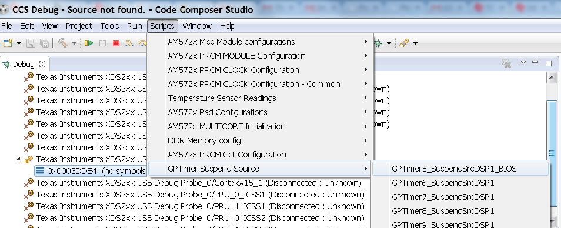10.2.1.1.2.6. Troubleshooting¶
If you face any problems, first check these basic items:
- Power cycle your target.
- Check the USB cable. One simple way to do this is to connect another device to the USB and ensure the cable works.
- Check host driver. Even with CCS turned off, your host should list the TI XDS as a USB device. If this does not work, try a different USB port.
- Latest emulation package. Ensure that you have the latest emulation files as specified in the Getting Started Guide.
If this does not resolve your problem, see these additional resources:
10.2.1.2. Update environment when installing to a custom path¶
10.2.1.2.1. Overview¶
This page will provide configuration information if the SDK is installed in a custom path.
Useful Tip
To avoid changing environment variable for each new shell, modify environment variable file directly. This file is the setupenv file located in the SDK root directory.
10.2.1.2.2. Changes to CCS Configuration¶
Installing the SDK in a folder other than where CCS is installed will require modifications to CCS to be able to discover the SDK. See the Setup CCS How To page explaining how to update CCS configuration.
10.2.1.2.3. Rebuilding the SDK RTOS¶
Installing the SDK in a folder other than the default (C:\TI for Windows, /home/[user]/ti for Linux) requires modifications to SDK RTOS scripts in order for recompilation and example/test creation to work properly.
In all the commands below, replace [version] with the appropriate version of the software/tool.
10.2.1.2.3.1. CCS in Custom Path and SDK RTOS in Default Path¶
CCS installation and toolchain paths can be customized by setting the TOOLS_INSTALL_PATH environment variable prior to running the SDK level setupenv script. This feature is used if CCS and the toolchains are installed somewhere other than the default C:\ti location.
For example, environment configuration assuming CCS is installed to [os_base]\ti_temp and SDK RTOS has been installed to default path, [os_base]\ti :
- Windows
C:\> set TOOLS_INSTALL_PATH=C:\ti_temp
C:\> cd C:\ti\processor_sdk_rtos_[soc]_[version]
C:\ti\processor_sdk_rtos_[soc]_[version]> setupenv.bat
Gives the output:
Optional parameter not configured : CG_XML_BIN_INSTALL_PATH
REQUIRED for xdc release build
Example: set CG_XML_BIN_INSTALL_PATH=C:/ti/cg_xml/bin
Optional parameter not configured : DOXYGEN_INSTALL_PATH
REQUIRED for xdc release build
Example: set DOXYGEN_INSTALL_PATH=C:/ti/Doxygen/doxygen/1.5.1-p1/bin
**************************************************************************
Environment Configuration:
PDK Directory : /ti/PDK_AM~3/packages/
CGTOOL INSTALL Directory : C:/ti_temp/ccsv6/tools/compiler/ti-cgt-c6000_[version]
TOOLCHAIN A15 Directory : C:/ti_temp/ccsv6/tools/compiler/gcc-arm-none-eabi-[version]
TOOLCHAIN A8 Directory : C:/ti_temp/ccsv6/tools/compiler/gcc-arm-none-eabi-[version]
TOOLCHAIN A9 Directory : C:/ti_temp/ccsv6/tools/compiler/gcc-arm-none-eabi-[version]
TOOLCHAIN M4 Directory : C:/ti_temp/ccsv6/tools/compiler/ti-cgt-arm_[version]
FPULIB_PATH : C:/ti_temp/ccsv6/tools/compiler/gcc-arm-none-eabi-[version]/lib/gcc/arm-none-eabi/[version]/fpu
CROSS_TOOL_PRFX : arm-none-eabi-
XDC_INSTALL_PATH : C:/ti/xdctools_[version]_core
BIOS_INSTALL_PATH : C:/ti/bios_[version]
IPC_INSTALL_PATH : C:/ti/ipc_[version]
EDMA3LLD_BIOS6_INSTALLDIR : C:/ti/edma3_lld_[version]
NDK_INSTALL_PATH : C:/ti/ndk_[version]
IMGLIB_INSTALL_PATH : C:/ti/imglib_c66x_[version]
UIA_INSTALL_PATH : C:/ti/uia_[version]
PROC_SDK_INSTALL_PATH : C:/ti/processor_sdk_rtos_[soc]_[version]
**************************************************************************
Changing to short name to support directory names containing spaces
current directory: C:/ti/processor_sdk_rtos_[soc]_[version]
PROCESSOR SDK BUILD ENVIRONMENT CONFIGURED
**************************************************************************
- Linux
$ export TOOLS_INSTALL_PATH=~/ti_temp
$ cd ~/ti/processor_sdk_rtos_[soc]_[version]/
~/ti/processor_sdk_rtos_[soc]_[version]$ source setupenv.sh
Gives the output:
Optional parameter not configured : CG_XML_BIN_INSTALL_PATH
REQUIRED for xdc release build
Example: export CG_XML_BIN_INSTALL_PATH="~/ti/cg_xml/bin"
Optional parameter not configured : DOXYGEN_INSTALL_PATH
REQUIRED for xdc release build
Example: export DOXYGEN_INSTALL_PATH="~/ti/Doxygen/doxygen/1.5.1-p1/bin"
**************************************************************************
Environment Configuration:
PDK Directory : /home/[user]/ti/pdk_[soc]_[version]/packages
CGTOOL INSTALL Directory : /home/[user]/ti_temp/ccsv6/tools/compiler/ti-cgt-c6000_[version]
TOOLCHAIN A15 Directory : /home/[user]/ti_temp/ccsv6/tools/compiler/gcc-arm-none-eabi-[version]
TOOLCHAIN A8 Directory : /home/[user]/ti_temp/ccsv6/tools/compiler/gcc-arm-none-eabi-[version]
TOOLCHAIN A9 Directory : /home/[user]/ti_temp/ccsv6/tools/compiler/gcc-arm-none-eabi-[version]
TOOLCHAIN M4 Directory : /home/[user]/ti_temp/ccsv6/tools/compiler/ti-cgt-arm_[version]
FPULIB_PATH : /home/[user]/ti_temp/ccsv6/tools/compiler/gcc-arm-none-eabi-[version]/lib/gcc/arm-none-eabi/[version]/fpu
CROSS_TOOL_PRFX : arm-none-eabi-
XDC_INSTALL_PATH : /home/[user]/ti/xdctools_[version]_core
BIOS_INSTALL_PATH : /home/[user]/ti/bios_[version]
IPC_INSTALL_PATH : /home/[user]/ti/ipc_[version]
EDMA3LLD_BIOS6_INSTALLDIR : /home/[user]/ti/edma3_lld_[version]
NDK_INSTALL_PATH : /home/[user]/ti/ndk_[version]
IMGLIB_INSTALL_PATH : /home/[user]/ti/imglib_c66x_[version]
UIA_INSTALL_PATH : /home/[user]/ti/uia_[version]
PROC_SDK_INSTALL_PATH : /home/[user]/ti/processor_sdk_rtos_[soc]_[version]
PROCESSOR SDK BUILD ENVIRONMENT CONFIGURED
*******************************************************************************
The RTOS SDK top level Makefile can now be used to rebuild SDK RTOS components with CCS and toolchains installed in a custom installation path.
10.2.1.2.3.2. CCS in Default Path and SDK RTOS in Custom Path¶
SDK RTOS component installation paths can be customized by setting the SDK_INSTALL_PATH variable prior to running the SDK level setupenv script. This feature is used if the SDK is installed somewhere other than the default C:\ti location.
For example, environment configuration assuming CCS is installed to the default path, [os_base]\ti and SDK RTOS has been installed to [os_base]\ti_temp:
- Windows
C:\> set SDK_INSTALL_PATH=C:/ti_temp
C:\> cd C:\ti_temp\processor_sdk_rtos_[soc]_[version]
C:\ti_temp\processor_sdk_rtos_[soc]_[version]> setupenv.bat
Gives the output:
Optional parameter not configured : CG_XML_BIN_INSTALL_PATH
REQUIRED for xdc release build
Example: set CG_XML_BIN_INSTALL_PATH=C:/ti/cg_xml/bin
Optional parameter not configured : DOXYGEN_INSTALL_PATH
REQUIRED for xdc release build
Example: set DOXYGEN_INSTALL_PATH=C:/ti/Doxygen/doxygen/1.5.1-p1/bin
**************************************************************************
Environment Configuration:
PDK Directory : /ti_temp/PDK_AM~3/packages/
CGTOOL INSTALL Directory : C:/ti/ccsv6/tools/compiler/ti-cgt-c6000_[version]
TOOLCHAIN A15 Directory : C:/ti/ccsv6/tools/compiler/gcc-arm-none-eabi-[version]
TOOLCHAIN A8 Directory : C:/ti/ccsv6/tools/compiler/gcc-arm-none-eabi-[version]
TOOLCHAIN A9 Directory : C:/ti/ccsv6/tools/compiler/gcc-arm-none-eabi-[version]
TOOLCHAIN M4 Directory : C:/ti/ccsv6/tools/compiler/ti-cgt-arm_[version]
FPULIB_PATH : C:/ti/ccsv6/tools/compiler/gcc-arm-none-eabi-[version]/lib/gcc/arm-none-eabi/[version]/fpu
CROSS_TOOL_PRFX : arm-none-eabi-
XDC_INSTALL_PATH : C:/ti_temp/xdctools_[version]_core
BIOS_INSTALL_PATH : C:/ti_temp/bios_[version]
IPC_INSTALL_PATH : C:/ti_temp/ipc_[version]
EDMA3LLD_BIOS6_INSTALLDIR : C:/ti_temp/edma3_lld_[version]
NDK_INSTALL_PATH : C:/ti_temp/ndk_[version]
IMGLIB_INSTALL_PATH : C:/ti_temp/imglib_c66x_[version]
UIA_INSTALL_PATH : C:/ti_temp/uia_[version]
PROC_SDK_INSTALL_PATH : C:/ti_temp/processor_sdk_rtos_[soc]_[version]
**************************************************************************
Changing to short name to support directory names containing spaces
current directory: C:/ti_temp/processor_sdk_rtos_[soc]_[version]
PROCESSOR SDK BUILD ENVIRONMENT CONFIGURED
**************************************************************************
- Linux
$ export SDK_INSTALL_PATH=~/ti_temp
$ cd ~/ti_temp/processor_sdk_rtos_[soc]_[version]/
~/ti_temp/processor_sdk_rtos_[soc]_[version]$ source setupenv.sh
Gives the output:
Optional parameter not configured : CG_XML_BIN_INSTALL_PATH
REQUIRED for xdc release build
Example: export CG_XML_BIN_INSTALL_PATH="~/ti/cg_xml/bin"
Optional parameter not configured : DOXYGEN_INSTALL_PATH
REQUIRED for xdc release build
Example: export DOXYGEN_INSTALL_PATH="~/ti/Doxygen/doxygen/1.5.1-p1/bin"
**************************************************************************
Environment Configuration:
PDK Directory : /home/[user]/ti_temp/pdk_[soc]_[version]/packages
CGTOOL INSTALL Directory : /home/[user]/ti/ccsv6/tools/compiler/ti-cgt-c6000_[version]
TOOLCHAIN A15 Directory : /home/[user]/ti/ccsv6/tools/compiler/gcc-arm-none-eabi-[version]
TOOLCHAIN A8 Directory : /home/[user]/ti/ccsv6/tools/compiler/gcc-arm-none-eabi-[version]
TOOLCHAIN A9 Directory : /home/[user]/ti/ccsv6/tools/compiler/gcc-arm-none-eabi-[version]
TOOLCHAIN M4 Directory : /home/[user]/ti/ccsv6/tools/compiler/ti-cgt-arm_[version]
FPULIB_PATH : /home/[user]/ti/ccsv6/tools/compiler/gcc-arm-none-eabi-[version]/lib/gcc/arm-none-eabi/[version]/fpu
CROSS_TOOL_PRFX : arm-none-eabi-
XDC_INSTALL_PATH : /home/[user]/ti_temp/xdctools_[version]_core
BIOS_INSTALL_PATH : /home/[user]/ti_temp/bios_[version]
IPC_INSTALL_PATH : /home/[user]/ti_temp/ipc_[version]
EDMA3LLD_BIOS6_INSTALLDIR : /home/[user]/ti_temp/edma3_lld_[version]
NDK_INSTALL_PATH : /home/[user]/ti_temp/ndk_[version]
IMGLIB_INSTALL_PATH : /home/[user]/ti_temp/imglib_c66x_[version]
UIA_INSTALL_PATH : /home/[user]/ti_temp/uia_[version]
PROC_SDK_INSTALL_PATH : /home/[user]/ti_temp/processor_sdk_rtos_[soc]_[version]
PROCESSOR SDK BUILD ENVIRONMENT CONFIGURED
*******************************************************************************
The RTOS SDK top level Makefile can now be used to rebuild SDK RTOS components installed in the custom installation path.
Note
The following known issue impacts this step: PRSDK-1263: PDK AM437x: Make fails on Windows if CCS is installed in custom path. Workaround: Edit the UTILS_INSTALL_DIR variable in <pdk_root_dir>/packages/ti/starterware/Rules.make to point to the CCS installation on your Windows PC.
10.2.1.2.3.3. CCS and SDK RTOS in Custom Path¶
When CCS and the SDK RTOS are both installed to custom paths the SDK can be rebuilt by setting the SDK_INSTALL_PATH and TOOLS_INSTALL_PATH variables prior to running the SDK RTOS top level environment setup script. The Windows and Linux environment setup scripts can be found in the following locations, respectively:
- Windows - C:\custom\install\path\processor_sdk_rtos_[soc]_[version]\setupenv.bat
- Linux - /home/[user]/custom/install/path/processor_sdk_rtos_[soc]_[version]/setupenv.sh
The SDK_INSTALL_PATH and TOOLS_INSTALL_PATH environment variables must be set to the custom install path prior to running the environment setup script.
For example, environment configuration assuming CCS and the SDK have been installed to [os_base]\new_sdk_release\ :
- Windows
C:\> set SDK_INSTALL_PATH=C:\new_sdk_release
C:\> set TOOLS_INSTALL_PATH=C:\new_sdk_release
C:\> cd C:\new_sdk_release\processor_sdk_rtos_[soc]_[version]
C:\new_sdk_release\processor_sdk_rtos_[soc]_[version]> setupenv.bat
Gives the output:
Optional parameter not configured : CG_XML_BIN_INSTALL_PATH
REQUIRED for xdc release build
Example: set CG_XML_BIN_INSTALL_PATH=C:/ti/cg_xml/bin
Optional parameter not configured : DOXYGEN_INSTALL_PATH
REQUIRED for xdc release build
Example: set DOXYGEN_INSTALL_PATH=C:/ti/Doxygen/doxygen/1.5.1-p1/bin
**************************************************************************
Environment Configuration:
PDK Directory : /NEW_SD~1/PDK_AM~1/packages/
CGTOOL INSTALL Directory : C:/new_sdk_release/ccsv6/tools/compiler/ti-cgt-c6000_[version]
TOOLCHAIN A15 Directory : C:/new_sdk_release/ccsv6/tools/compiler/gcc-arm-none-eabi-[version]
TOOLCHAIN A8 Directory : C:/new_sdk_release/ccsv6/tools/compiler/gcc-arm-none-eabi-[version]
TOOLCHAIN A9 Directory : C:/new_sdk_release/ccsv6/tools/compiler/gcc-arm-none-eabi-[version]
TOOLCHAIN M4 Directory : C:/new_sdk_release/ccsv6/tools/compiler/ti-cgt-arm_[version]
FPULIB_PATH : C:/new_sdk_release/ccsv6/tools/compiler/gcc-arm-none-eabi-[version]/lib/gcc/arm-none-eabi/[version]/fpu
CROSS_TOOL_PRFX : arm-none-eabi-
XDC_INSTALL_PATH : C:/new_sdk_release/xdctools_[version]_core
BIOS_INSTALL_PATH : C:/new_sdk_release/bios_[version]
IPC_INSTALL_PATH : C:/new_sdk_release/ipc_[version]
EDMA3LLD_BIOS6_INSTALLDIR : C:/new_sdk_release/edma3_lld_[version]
NDK_INSTALL_PATH : C:/new_sdk_release/ndk_[version]
IMGLIB_INSTALL_PATH : C:/new_sdk_release/imglib_c66x_[version]
UIA_INSTALL_PATH : C:/new_sdk_release/uia_[version]
PROC_SDK_INSTALL_PATH : C:/new_sdk_release/processor_sdk_rtos_[soc]_[version]
**************************************************************************
Changing to short name to support directory names containing spaces
current directory: C:/new_sdk_release/processor_sdk_rtos_[soc]_[version]
PROCESSOR SDK BUILD ENVIRONMENT CONFIGURED
**************************************************************************
- Linux
$ export SDK_INSTALL_PATH=~/new_sdk_release
$ export TOOLS_INSTALL_PATH=~/new_sdk_release
$ cd ~/new_sdk_release/processor_sdk_rtos_[soc]_[version]/
~/new_sdk_release/processor_sdk_rtos_[soc]_[version]$ source setupenv.sh
Gives the output:
Optional parameter not configured : CG_XML_BIN_INSTALL_PATH
REQUIRED for xdc release build
Example: export CG_XML_BIN_INSTALL_PATH="~/ti/cg_xml/bin"
Optional parameter not configured : DOXYGEN_INSTALL_PATH
REQUIRED for xdc release build
Example: export DOXYGEN_INSTALL_PATH="~/ti/Doxygen/doxygen/1.5.1-p1/bin"
**************************************************************************
Environment Configuration:
PDK Directory : /home/[user]/new_sdk_release/pdk_[soc]_[version]/packages
CGTOOL INSTALL Directory : /home/[user]/new_sdk_release/ccsv6/tools/compiler/ti-cgt-c6000_[version]
TOOLCHAIN A15 Directory : /home/[user]/new_sdk_release/ccsv6/tools/compiler/gcc-arm-none-eabi-[version]
TOOLCHAIN A8 Directory : /home/[user]/new_sdk_release/ccsv6/tools/compiler/gcc-arm-none-eabi-[version]
TOOLCHAIN A9 Directory : /home/[user]/new_sdk_release/ccsv6/tools/compiler/gcc-arm-none-eabi-[version]
TOOLCHAIN M4 Directory : /home/[user]/new_sdk_release/ccsv6/tools/compiler/ti-cgt-arm_[version]
FPULIB_PATH : /home/[user]/new_sdk_release/ccsv6/tools/compiler/gcc-arm-none-eabi-[version]/lib/gcc/arm-none-eabi/[version]/fpu
CROSS_TOOL_PRFX : arm-none-eabi-
XDC_INSTALL_PATH : /home/[user]/new_sdk_release/xdctools_[version]_core
BIOS_INSTALL_PATH : /home/[user]/new_sdk_release/bios_[version]
IPC_INSTALL_PATH : /home/[user]/new_sdk_release/ipc_[version]
EDMA3LLD_BIOS6_INSTALLDIR : /home/[user]/new_sdk_release/edma3_lld_[version]
NDK_INSTALL_PATH : /home/[user]/new_sdk_release/ndk_[version]
IMGLIB_INSTALL_PATH : /home/[user]/new_sdk_release/imglib_c66x_[version]
UIA_INSTALL_PATH : /home/[user]/new_sdk_release/uia_[version]
PROC_SDK_INSTALL_PATH : /home/[user]/new_sdk_release/processor_sdk_rtos_[soc]_[version]
PROCESSOR SDK BUILD ENVIRONMENT CONFIGURED
*******************************************************************************
The RTOS SDK top level Makefile can now be used to rebuild SDK RTOS components installed in the custom installation path using CCS and toolchains installed in a custom path as well.
10.2.1.2.4. Rebuilding the PDK¶
Installing the PDK in a folder other than the default (C:TI for Windows, /home/[user]/ti for Linux) requires modifications to PDK scripts in order for recompilation and example/test creation to work properly.
10.2.1.2.4.1. CCS in Custom Path and PDK in Default Path¶
The instructions provided in the CCS in Custom Path and SDK RTOS in Default Path section can be used to rebuild components at the PDK level. The only difference is the PDK level setup script should be used instead of the SDK RTOS level setup script. The PDK level setup scripts are found in the following locations on Windows and Linux, respectively:
- Windows - C:\custom\install\path\pdk_[soc]_[version]\packages\pdksetupenv.bat
- Linux - /home/[user]/custom/install/path/pdk_[soc]_[version]/packages/pdksetupenv.sh
10.2.1.2.4.2. CCS in Default Path and PDK in Custom Path¶
The instructions provided in the CCS in Default Path and SDK RTOS in Custom Path section can be used to rebuild components at the PDK level. The only difference is the PDK level setup script should be used instead of the SDK RTOS level setup script. The PDK level setup scripts are found in the following locations on Windows and Linux, respectively:
- Windows - C:\custom\install\path\pdk_[soc]_[version]\packages\pdksetupenv.bat
- Linux - /home/[user]/custom/install/path/pdk_[soc]_[version]/packages/pdksetupenv.sh
10.2.1.2.4.3. CCS and PDK in Custom Path¶
The instructions provided in the CCS and SDK RTOS in Custom Path section can be used to rebuild components at the PDK level. The only difference is the PDK level setup script should be used instead of the SDK RTOS level setup script. The PDK level setup scripts are found in the following locations on Windows and Linux, respectively:
- Windows - C:\custom\install\path\pdk_[soc]_[version]\packages\pdksetupenv.bat
- Linux - /home/[user]/custom/install/path/pdk_[soc]_[version]/packages/pdksetupenv.sh
10.2.1.2.5. Creating PDK Example/Test Projects When CCS is Installed to Custom Path¶
The pdkProjectCreate scripts must be modified in order to build PDK example and test projects only if CCS has been installed to a custom path. The modification is the same for both Windows and Linux. Inside the pdkProjectCreate scripts is a CCS_INSTALL_PATH variable which points to the Code Composer Studio root directory. This variable must be redefined to the new location of the CCS root directory if CCS is installed to a custom path.
- Windows
REM Install Location for CCS
set CCS_INSTALL_PATH="C:\ti\ccsv6"
- Linux
# Install Location for CCS
export CCS_INSTALL_PATH=~/ti/ccsv6
Note
Prior to invoking the pdkProjectCreate script, make sure to start CCS and register the SDK RTOS components installed. Project creation will fail if the RTOS SDK components installed to the custom path have not been registered with CCS. Please see CCS and SDK installed in different directories for instructions on how to register SDK RTOS components installed to a custom path with CCS
10.2.1.3. Prevent BeagleBone board reset on JTAG Connect¶
https://elinux.org/Beagleboard:BeagleBone#Board_Reset_on_JTAG_Connect.28A3.2CA4.2CA5.29
10.2.1.4. Rebuild drivers from PDK directory¶
Refer Rebuilding the PDK for details on rebuilding the PDK components.
10.2.2. Flashing and Boot¶
10.2.2.1. Flash bootable images (C66x, K2H/K2E/K2L only)¶
10.2.2.1.1. Overview¶
The Processor SDK RTOS for C6657, C6678, K2H, K2E, and K2L EVMs includes a script in the directory
[SDK Install Path]/processor_sdk_rtos_<platform>_<version>/bin
named program_evm.js. The purpose of this script is to automatically flash bootable images onto your EVM.
The following sections will describe how to use this script and the default flashable binaries in the Processor SDK RTOS.
10.2.2.1.2. Requirements¶
- A Windows or Linux PC
- Processor SDK RTOS installed on your PC. The version to install must match the SOC you plan to use
- Code Composer Studio installed on your PC
- An USB connection to your EVM emulator
Note
Your board should be set to NO-BOOT mode. Please refer to the boot mode dip switch settings for different boot modes on your EVM Hardware User Guide. See this page for a link to all supported EVM information.
10.2.2.1.3. Directory Structure¶
The files used are in the Processor SDK RTOS directory. Expanded below are the relevant files and directories for flashing the bootable images for C667x, but a similar structure is used for C665x.
├── bin
│ ├── configs
│ │ └── evm6678l
│ │ ├── evm6678l.ccxml
│ │ ├── evm6678le.ccxml
│ │ ├── evm6678le-linuxhost.ccxml
│ │ └── evm6678l-linuxhost.ccxml
│ ├── logs
│ └── program_evm.js
└── prebuilt-images
├── eeprom50.bin
├── eeprom51.bin
├── eepromwriter_evm6678l.out
├── eepromwriter_input50.txt
├── eepromwriter_input51.txt
├── eepromwriter_input.txt
├── nandwriter_evm6678l.out
├── nand_writer_input.txt
├── norwriter_evm6678l.out
└── nor_writer_input.txt
Below is the expanded tree for K2H. Similarly, this also applies to K2E and K2L EVMs.
├── bin
│ ├── configs
│ │ └── evmk2h
│ │ ├── evmk2h.ccxml
│ │ ├── evmk2h-linuxhost.ccxml
│ │ └── program_evm_config
│ ├── logs
│ └── program_evm.js
└── prebuilt-images
├── app
├── config
├── MLO
└── spi_flash_writer.out
10.2.2.1.4. Default Binaries and Setup¶
Processor SDK RTOS provides the basic CCXML files to connect to your SOC. There is a separate CCXML file for each SOC, emulator, and host OS combination. These CCXML files are located in:
[SDK Install Path]/processor_sdk_rtos_<platform>_<version>/bin/config/<SOC>
Users can choose to use their own CCXML file by setting the environment variable, PROGRAM_EVM_TARGET_CONFIG_FILE, to point to their CCXML file in their terminal or command prompt.
You can create your own CCXML file by opening CCSv6 –> View –> Target Configurations, and right-clicking on the Target Configuration pane to select New Target Configuration. After selecting your SOC and emulator, remember to set the appropriate GEL file in the advance options for Core 0. The GEL file is used to do basic SOC initialization upon connecting to the core.
Processor SDK RTOS also provides the basic binaries needed to perform flashing. These are separated into two categories - flashwriters and flash images.
Flashwriters
- [C66x] eepromwriter_<SOC>.out - writes content to your EVM EEPROM flash memory
- [C66x] norwriter_<SOC>.out - writes content to your EVM NOR flash memory
- [C66x] nandwriter_<SOC>.out - writes content to your EVM NAND flash memory
- [K2H/E/L] spi_flash_writer.out - writes multiple images to your NOR flash memory
Flash images
- [C66x] eeprom50.bin - eeprom binary for address 0x50. The default for C66x is the POST application.
- [C66x] eeprom51.bin - eeprom binary for address 0x51. The default for C66x is the Intermediate Boot Loader (IBL).
- [C66x] nor.bin - nor binary to be used for NOR boot. May not be provided for every EVM or release version.
- [C66x] nand.bin - nand binary to be used for NAND boot. May not be provided for every EVM or release version.
- [K2H/K2E/K2L] app - NOR binary to be booted by Secondary Bootloader. The default for Keystone 2 is the POST application
- [K2H/K2E/K2L] MLO - Secondary Bootloader. The default flash location is in SPI NOR flash memory at offset 0.
10.2.2.1.5. Usage¶
For Windows users:
> cd [SDK Install Path]\processor_sdk_rtos_<platform>_<version>\bin
> set DSS_SCRIPT_DIR=[CCS Install Path]\ccsv6\ccs_base\scripting\bin
> %DSS_SCRIPT_DIR%\dss.bat program_evm.js [tmdx|tmds]evm(6678|6657|k2h|k2e|k2l)[l|le|ls][-le|-be]
For Linux users:
> cd [SDK Install Path]/processor_sdk_rtos_<platform>_<version>/bin
> export DSS_SCRIPT_DIR=[CCS Install Path]/ccsv6/ccs_base/scripting/bin
> $DSS_SCRIPT_DIR/dss.sh program_evm.js [tmdx|tmds]evm(6678|6657|k2h|k2e|k2l)[l|le|ls][-le|-be]
The last argument depends on the SOC that you have, concatenated with the options to select emulator and endianness:
- l: EVM uses XDS100 on-board Emulator
- le: EVM uses 560 Mezzanine Emulator daughter card
- ls: EVM uses XDS200 Emulator card
- -le: Little Endian
- -be: Big Endian
Note
- By default, the images provided are little endian.
- Also by default, Keystone 2 EVMs are expected to only use the XDS2xx Emulator. You do not have to supply the emulator in the parameter for K2H/K2E/K2L.
Some examples are:
TMDXEVM6678LE little endian
> $DSS_SCRIPT_DIR/dss.sh program_evm.js tmdxevm6678le-le
TMDSEVM6657LS little endian
> $DSS_SCRIPT_DIR/dss.sh program_evm.js tmdxevm6657ls-le
EVMK2H little endian
> $DSS_SCRIPT_DIR/dss.sh program_evm.js tmdsevmk2h
EVMK2E little endian
> $DSS_SCRIPT_DIR/dss.sh program_evm.js tmdsevmk2e
10.2.2.1.6. Sample Output¶
C:\ti\processor_sdk_rtos_c665x_2_00_01_07\bin>%DSS_SCRIPT_DIR%\dss.bat program_evm.js tmdxevm6657ls-le
board: evm6657l
endian: Little
emulation: XDS200 emulator
binaries: ../prebuilt-images/
ccxml: C:\ti\processor_sdk_rtos_c665x_2_00_01_07\bin/configs/evm6657l/evm6657ls.ccxml
C66xx_0: GEL Output:
Connecting Target...
C66xx_0: GEL Output: DSP core #0
C66xx_0: GEL Output: C6657L GEL file Ver is 1.006
C66xx_0: GEL Output: Global Default Setup...
C66xx_0: GEL Output: Setup Cache...
C66xx_0: GEL Output: L1P = 32K
C66xx_0: GEL Output: L1D = 32K
C66xx_0: GEL Output: L2 = ALL SRAM
C66xx_0: GEL Output: Setup Cache... Done.
C66xx_0: GEL Output: Main PLL (PLL1) Setup ...
C66xx_0: GEL Output: PLL in Bypass ...
C66xx_0: GEL Output: PLL1 Setup for DSP @ 1000.0 MHz.
C66xx_0: GEL Output: SYSCLK2 = 333.3333 MHz, SYSCLK5 = 200.0 MHz.
C66xx_0: GEL Output: SYSCLK8 = 15.625 MHz.
C66xx_0: GEL Output: PLL1 Setup... Done.
C66xx_0: GEL Output: Power on all PSC modules and DSP domains...
C66xx_0: GEL Output: Set_PSC_State... Timeout Error #03 pd=12, md=4!
C66xx_0: GEL Output: Power on all PSC modules and DSP domains... Done.
C66xx_0: GEL Output: DDR3 PLL (PLL2) Setup ...
C66xx_0: GEL Output: DDR3 PLL Setup... Done.
C66xx_0: GEL Output: DDR3 Init begin (1333 auto)
C66xx_0: GEL Output: XMC Setup ... Done
C66xx_0: GEL Output: IFRDY bit is SET: DDR3 Interface Ready
C66xx_0: GEL Output:
DDR3 initialization is complete.
C66xx_0: GEL Output: DDR3 Init done
C66xx_0: GEL Output: DDR3 memory test... Started
C66xx_0: GEL Output: DDR3 memory test... Passed
C66xx_0: GEL Output: PLL and DDR3 Initialization completed(0) ...
C66xx_0: GEL Output: configSGMIISerdes Setup... Begin
C66xx_0: GEL Output: SGMII SERDES has been configured.
C66xx_0: GEL Output: Enabling EDC ...
C66xx_0: GEL Output: L1P error detection logic is enabled.
C66xx_0: GEL Output: L2 error detection/correction logic is enabled.
C66xx_0: GEL Output: MSMC error detection/correction logic is enabled.
C66xx_0: GEL Output: Enabling EDC ...Done
C66xx_0: GEL Output: Global Default Setup... Done.
Start writing eeprom50
Writer:../prebuilt-images/eepromwriter_evm6657l.out
Image:../prebuilt-images/eeprom50.bin
C66xx_0: GEL Output: Invalidate All Cache...
C66xx_0: GEL Output: Invalidate All Cache... Done.
C66xx_0: GEL Output: GEL Reset...
C66xx_0: GEL Output: GEL Reset... Done.
C66xx_0: GEL Output: Disable all EDMA3 interrupts and events.
EEPROM Writer Utility Version 01.00.00.05
Writing 57432 bytes from DSP memory address 0x0c000000 to EEPROM bus address 0x0050 starting from device address 0x0000
...
Reading 57432 bytes from EEPROM bus address 0x0050 to DSP memory address 0x0c010000 starting from device address 0x0000
...
Verifying data read ...
EEPROM programming completed successfully
Start writing eeprom51
Writer:../prebuilt-images/eepromwriter_evm6657l.out
Image:../prebuilt-images/eeprom51.bin
C66xx_0: GEL Output: Invalidate All Cache...
C66xx_0: GEL Output: Invalidate All Cache... Done.
C66xx_0: GEL Output: GEL Reset...
C66xx_0: GEL Output: GEL Reset... Done.
C66xx_0: GEL Output: Disable all EDMA3 interrupts and events.
EEPROM Writer Utility Version 01.00.00.05
Writing 47888 bytes from DSP memory address 0x0c000000 to EEPROM bus address 0x0051 starting from device address 0x0000
...
Reading 47888 bytes from EEPROM bus address 0x0051 to DSP memory address 0x0c010000 starting from device address 0x0000
...
Verifying data read ...
EEPROM programming completed successfully
Writer:../prebuilt-images/nandwriter_evm6657l.out
NAND:../prebuilt-images/nand.bin
Required NAND files does not exist in ../prebuilt-images/
Writer:../prebuilt-images/norwriter_evm6657l.out
NOR:../prebuilt-images/nor.bin
Required NOR files does not exist in ../prebuilt-images/
In the above example, nothing was flashed to NAND or NOR since there were no nand.bin or nor.bin binaries to flash.
10.2.3. Porting¶
10.2.3.1. Adding Custom Board_Library Target to Processor SDK RTOS makefiles¶
10.2.3.1.1. Introduction¶
The following article describes how a custom Board can be added to the Processor SDK RTOS. The scope of this article is to only describe how to modify the build files in the PDK to add build steps for your custom board library. The article does not describe modification of source files to reflect changes to clocking, DDR and pinmux setup for the custom board.
The instructions provided in this article uses example of AM572x custom board but the instructions apply to all the processors supported in Processor SDK RTOS. Note that the instructions on this wiki were created using Processor SDK RTOS v3.2 and PDK_AM57xx_1_0_5 and are subject to change. Also the wiki was created specifically for the newer board variants like evmAM572x, idkAM572x and evmK2G. For AM335x and AM437x variant board library has several dependencies on legacy starterware package, hence additional steps are required and not covered in the wiki.
10.2.3.1.2. Instructions to add custom Board to the PDK build¶
Step 1: Creating new directory for custom board library
In pdk_am57xx_x_x_x/packages/ti/board/src, Create new directory myCustomBoard and copy files from existing board library package. We recommend that you copy files from the board which closely matches your custom board design. In this case, we assume that the custom board is based on the design of evmAM572x so we copy over the files from that directory into myCustomBoard folder.
Step 2: Updating names and makefile inside the customBoard package
In pdk_am57xx_x_x_x/packages/ti/board/src/myCustomBoard, Rename file src_files_evmAM572x.mk to src_files_myCustomBoard.mk. This file will need a bit of work depending on what elements of board you need for your platform. We have left all the files evmAM572x_*.c but you can modify as needed.
Step 3: Adding MACRO based inclusion of updated board_cfg.h corresponding to custom Board
In packages/ti/board/board_cfg.h, add the lines pointing to board_cfg.h file in your customBoard package so that updated peripheral instances and board specific defines can be picked up
#if defined (myCustomBoard)
#include <ti/board/src/myCustomBoard/include/board_cfg.h>
#endif
Step 4: Update top level board package makefile to include build for customBoard Library The makefile is used to include all relevant make files for including Low level driver(LLD), source files relevant to board and the common board.c file
- In packages/ti/board/build/makefile.mk, add board.c to the customBoard build :
ifeq ($(BOARD),$(filter $(BOARD),evmAM335x icev2AM335x skAM335x bbbAM335x evmAM437x idkAM437x skAM437x myCustomBoard evmAM572x idkAM571x idkAM572x evmK2H evmK2K evmK2E evmK2L evmK2G iceK2G evmC6678 evmC6657))
# Common source files across all platforms and cores
SRCS_COMMON += board.c
endif
- Add board library source files and LLD files to the customBoard build
In packages/ti/board/build/makefile.mk, change
ifeq ($(BOARD),$(filter $(BOARD), evmAM572x idkAM571x idkAM572x))
include $(PDK_BOARD_COMP_PATH)/src/$(BOARD)/src_files_$(BOARD).mk
include $(PDK_BOARD_COMP_PATH)/src/src_files_lld.mk
CFLAGS_LOCAL_$(BOARD) += -D$(BOARD)
endif
to
ifeq ($(BOARD),$(filter $(BOARD), myCustomBoard evmAM572x idkAM571x idkAM572x))
include $(PDK_BOARD_COMP_PATH)/src/$(BOARD)/src_files_$(BOARD).mk
include $(PDK_BOARD_COMP_PATH)/src/src_files_lld.mk
CFLAGS_LOCAL_$(BOARD) += -D$(BOARD)
endif
Step 5: Update Global makerules
build_config.mk defines the global CFLAGS used to compile different PDK components. Add the following line in the BOARD Specific configurations.
CFLAGS_GLOBAL_customAM572x = -DSOC_AM572x -DevmAM572x
The SOC_AM572x macro ensures that the CSL aplicable to this SOC will be included in the build and evmAM572x define will ensure all evmAM572x specific includes that apply to the customAM572x are part of the build.
Optional step to update RTSC platform definition If you have a custom RTSC platform definition for your custom board that updates the memory and platform configuration using RTSC Tool then you need to update the platform.mk file that associates the RTSC platfom with the corresponding board library
In packages/ti/buildmakerules/platform.mk, add the following lines:
ifeq ($(BOARD),$(filter $(BOARD), evmAM572x))
PLATFORM_XDC = "ti.platforms.evmAM572X"
endif
ifeq ($(BOARD),$(filter $(BOARD), myCustomBoard))
PLATFORM_XDC = "evmAM572XCustom"
endif
Note
The SYSBIOS platforms follow the convention to consolidate all platform definitions under SYSBIOS_INSTALL_PATH/packages/ti/platforms/* hence the convention ti.platorms.<platformName> but for custom platform, users are not required to follow this convention.
Step 6: Update source files corresponding to drivers used in board library. src_files_lld.mk file adds source files corresponding to LLD drivers used in the board library. Usually most boards utilitize control driver like I2C (for programming the PMIC or reading EEPROM), UART drivers (for IO) and boot media drivers like (SPI/QSPI, MMC or NAND). In the example below, we assume that the custom Board library has dependency on I2C, SPI and UART LLD drivers. Since the LLD drivers will be linked to the application along with board library, board library only needs <driver>_soc.c corresponding to SOC used on the custom Board.
In packages/ti/board/src/src_files_lld.mk, add the following lines:
ifeq ($(BOARD),$(filter $(BOARD), myCustomBoard))
SRCDIR += $(PDK_INSTALL_PATH)/ti/drv/i2c/soc/am572x \
$(PDK_INSTALL_PATH)/ti/drv/uart/soc/am572x \
$(PDK_INSTALL_PATH)/ti/drv/spi/soc/am572x
INCDIR += $(PDK_INSTALL_PATH)/ti/drv/i2c/soc/am572x \
$(PDK_INSTALL_PATH)/ti/drv/uart/soc/am572x \
$(PDK_INSTALL_PATH)/ti/drv/spi/soc/am572x
# Common source files across all platforms and cores
SRCS_COMMON += I2C_soc.c UART_soc.c SPI_soc.c
endif
Note
For all LLD drivers linked to the board library you need to include corresponding <drv>_soc.c file. For example if you include GPIO driver for setting board mux then GPIO_soc.c needs to be added to LLD source files.
Step 7: Add custom Board to BOARDLIST and update CORELIST
In packages/ti/board/board_component.mk, modify the build to add your custom board and specify the cores for which you want to build the board library. Example to build board library for only A15 and C66x cores, limit the build by specify only a15_0 and C66x in the CORELIST
board_lib_BOARDLIST = myCustomBoard evmAM335x icev2AM335x skAM335x bbbAM335x evmAM437x idkAM437x skAM437x evmAM572x idkAM571x idkAM572x evmK2H evmK2K evmK2E evmK2L evmK2G iceK2G \
#board_lib_am572x_CORELIST = c66x a15_0 ipu1_0
board_lib_am572x_CORELIST = a15_0 c66x
Step 8: Update .bld files for XDCTOOL based build steps.
Make corresponding changes in packages/ti/board/config.bld, by adding the following lines:
var myCustomBoard = {
name: "myCustomBoard",
ccOpts: "-DevmAM572x -DSOC_AM572x",
targets: [C66LE,A15LE ]
lldFiles: [ "$(PDK_INSTALL_PATH)/ti/drv/i2c/soc/am572x/I2C_soc.c",
"$(PDK_INSTALL_PATH)/ti/drv/uart/soc/am572x/UART_soc.c",
"$(PDK_INSTALL_PATH)/ti/drv/spi/soc/am572x/SPI_soc.c"]
}
var boards = [ evmAM335x, icev2AM335x, skAM335x, bbbAM335x, evmAM437x, idkAM437x, skAM437x, myCustomBoard, evmAM572x, idkAM571x, idkAM572x, evmK2H, evmK2K, evmK2E, evmK2L, evmK2G, evmC6678, evmC6657 ];
Also, in packages/ti/board/package.bld, I added the following line:
Pkg.otherFiles[Pkg.otherFiles.length++] = "src/myCustomBoard/src_files_myCustomBoard.mk";
Step 9: Setup Top level PDK build files to add the Custom board to setup environment.
Final setup involves updating the top level setup file for PDK package to update to setup the build environment to include the custom Board in setup. This can be done by commenting out the top line and adding in the bottom line in pdksetupenv.bat:
@REM if not defined LIMIT_BOARDS set LIMIT_BOARDS=evmAM572x idkAM571x idkAM572x
if not defined LIMIT_BOARDS set LIMIT_BOARDS=myCustomBoard
Alternative: Invoke the build using command line options to limit the build to specific board, specific SOC and specific CORE. For example, if you want to build the A15 version of board library for AM572x EVM, you can invoke the build using:
gmake board_lib LIMIT_SOCS=am572x LIMIT_BOARDS=customAM572x LIMIT_CORES=a15_0
Step 10 : Building the custom board with the updated settings
To build package change directory to <SDK_INSTALL_PATH>/pdk_am57xx_x_x_x/packages, first run pdksetupenv.bat
To make just the board library: gmake board_lib
10.2.3.1.3. Example custom Board library for reference¶
The package provided below provides updated files for building customBoard “customAM572x” following all steps described above. Please compare the files to the evmAM57xx board library files to follow the steps to add your own board library.
File:Pdk packages ti board customAM572x.zip
Note
Due to software distribution policy on the wiki, we have removed the file linked here. Users can refer to the discussion and zipped package linked from E2E post provided below:
10.2.3.1.4. Additional steps for AM335x/AM437x users¶
Note
Currently the AM335x and AM437x board libraries re-use the board support that was used in legacy starterware software. AM335x and AM437x users will need to additionally modify build files in starterware to build their custom board library. Additional steps required for AM335x/AM437x will be added to this article soon in this section
10.2.3.2. Processor SDK RTOS Porting Guide for AM571x/AM570x Speed Grades¶
10.2.3.2.1. Description¶
The AM57x Family of Processors includes a wide range of operating performance to meet the needs of a number of broad applications. Among these options are a variety of speed grades to meet different performance points. These devices have a number of specialized cores to provide applications specific computation capabilities. These cores can be run at different speeds to fine tune the processor to the needs of the application, power budget, thermal characteristics, etc.
The Processor SDK for RTOS is a software development package provided to speed development by providing a software reference. This package now includes support for then entire AM57x family of processors which can be broken down into the AM572x, AM571x, and AM570x sets of devices or sub-familes. Most of the devices in this family are supported by the Processor SDK for RTOS right out of the box. This support is tested and validated on TI designed EVMs. These EVMs use the highest performance devices in the family in order to allow users to evaluate the entire spectrum of performance.
The AM571X and AM570x supports several lower power speed grades. If one of these devices is being used on the custom board, the GEL file and the board library needs to be changed to account for this difference. If this change is not made, the device could be running out of specification. These changes may reach across other cores and clocks on the device as well, depending on what speeds they need to operate at. This document is not an exhaustive list of all the changes needed for a proper board port as it focused on the changes needed to enable different speed grades.
10.2.3.2.2. Comparison of AM572x, AM571x and AM570x devices¶
Quick Feature Set comparison between devices in Sitara AM57xx family :
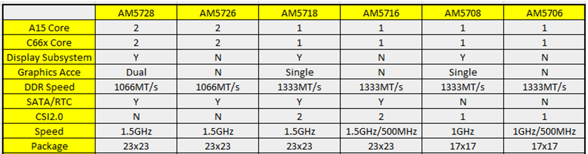
10.2.3.2.3. Code Composer Studio (CCS) and Emulation support¶
TI Supports following evaluation platform for AM57xx class of devices:
When developer selects any of the above platforms in Code composer Studio, the target configuration automatically brings in the required initialization files and GEL files to configure the clocks, slave cores, external memory.
If you are using a custom platform or AM5708 device that is not available on a TI Evaluation platform, you can follow the steps provided below to connect to the SOC by reusing the GEL files that are provided for TI evaluation platforms. For example, here we demonstrate how you can create a target configuration for AM570x and connect to the device if your board design is based of one of TI evalauation platforms listed below. The assumption here is that the custom board is based off AM571X IDK platform
Note
Support for AM5708 was added to Sitara Chip Support Package 1.3.4 in Code composer Studio. If you don`t see the device definition in CCS, then you can update the Sitara Chip Support package by going to Help->Check Updates
Step 1: Select the AM570x part number that is populated on your custom platform:

Step 2: Setup the GEL files for the SOC Go to the Advanced Tab as shown in the previous screenshot and update startup GEL file in the A15 Core as shown in the screenshot below

10.2.3.2.4. Board Library Changes to Consider for Using Processor SDK RTOS¶
10.2.3.2.4.1. Clock and PRCM Updates to consider¶
The board library provides setting for OPP_NOM, OPP_OD and OPP_HIGH in the PLL settings using 20 MHz input clock that has been used on the AM572x GP EVM as well as the AM571x IDK platform. This allows customers to setup the MPU to 1.5, 1.176 and 1GHz. For AM570x devices, we support the “J” and the “D” variant which support the following max speeds on the DPLLs:

When using the “J” speed grade, ensure that the DPLLs in the board set the DPLL to OPP_NOM and not for OPP_OD or OPP_HIGH.
To do this, you can invoke the Board_Init from your application using either
Board_initCfg boardCfg;
boardCfg = BOARD_INIT_PLL_OPP_NOM;
boardCfg |= BOARD_INIT_UNLOCK_MMR |
BOARD_INIT_MODULE_CLOCK |
BOARD_INIT_PINMUX_CONFIG |
BOARD_INIT_DDR |
BOARD_INIT_UART_STDIO |
BOARD_INIT_WATCHDOG_DISABLE;
/* Board Library Init. */
Board_init(boardCfg);
Note
When bootloading direct from flash media, this change may also be required in the SBL code
When using “D” rated parts that run at 500 MHz, in addition to the above configuration, you will also need to modify OPP_NOM settings in the board library by updating the DPLL setting for MPU and DSP in the file <BoardName>_pll.c as shown below:
Step1 : Update MPU, DSP, IVA and GPU DPLL setting
- MPU DPLL Changes:
/* Default to OPP_NOM */
/* 500MHz at 20MHz sys_clk */
mpuPllcParam.mult = 250U;
mpuPllcParam.div = 9U;
mpuPllcParam.dccEnable = 0U;
mpuPllcParam.divM2 = 1U;
- DSP DPLL Changes:
/* 500MHz at 20MHz sys_clk */
dspPllcParam.mult = 130U;
dspPllcParam.div = 3U;
dspPllcParam.divM2 = 1U;
dspPllcParam.divM3 = 3U;
- Remove IVA and GPU PLL settings
Since IVA and GPU modules are not available on the device, we recommend removing the ivaPLL and gpuPLL settings in board.
/* Default to OPP_NOM */
/* 388.3MHz at 20MHz sys_clk */
- ivaPllcParam.mult = 233U;
- ivaPllcParam.div = 3U;
- ivaPllcParam.divM2 = 3U;
/* Default to OPP_NOM */
/* 425MHz at 20MHz sys_clk */
- gpuPllcParam.mult = 170U;
- gpuPllcParam.div = 3U;
- gpuPllcParam.divM2 = 2U;
Step 2 : Disable clocks configuration and wakeup for IVA in PRCM
- Remove IVA wakeup and Module configuration
The following updates need to be made in the file <BoardName>_clock.c to remove IVA wakeup and clock configuration
- CSL_FINST(ivaCmReg->CM_IVA_CLKSTCTRL_REG,
- IVA_CM_CORE_CM_IVA_CLKSTCTRL_REG_CLKTRCTRL, SW_WKUP);
/* PRCM Specialized module mode setting functions */
- CSL_FINST(ivaCmReg->CM_IVA_SL2_CLKCTRL_REG,
- IVA_CM_CORE_CM_IVA_SL2_CLKCTRL_REG_MODULEMODE, AUTO);
- while(CSL_IVA_CM_CORE_CM_IVA_SL2_CLKCTRL_REG_IDLEST_DISABLE ==
- CSL_FEXT(ivaCmReg->CM_IVA_SL2_CLKCTRL_REG,
- IVA_CM_CORE_CM_IVA_SL2_CLKCTRL_REG_IDLEST));
- CSL_FINST(ivaCmReg->CM_IVA_IVA_CLKCTRL_REG,
- IVA_CM_CORE_CM_IVA_IVA_CLKCTRL_REG_MODULEMODE, AUTO);
- while(CSL_IVA_CM_CORE_CM_IVA_IVA_CLKCTRL_REG_IDLEST_DISABLE ==
- CSL_FEXT(ivaCmReg->CM_IVA_IVA_CLKCTRL_REG,
- IVA_CM_CORE_CM_IVA_IVA_CLKCTRL_REG_IDLEST));
10.2.3.2.5. Configure DDR Interfaces¶
An important one to consider is the speed of the DDR memory. The clock for the DDR is selected using the same dplls structure. Some higher speed grade parts support a 667 MHz DDR clock, but some of the lower speed grade parts only support a 533 MHz DDR3 clock. Make sure to choose the appropriate DDR clock for the device on the custom board.
Over in the board/src/<BoardName>/<BoardName_ddr>.c file, make sure that the EMIF is being configured correctly for the appropriate speed, and that the appropriate number of EMIFs is being selected to match the part being used. AM572x part has 2 DDR interfaces running at 533 MHz and the AM571x (and AM570x) only have one running at 667 MHz. This code can be kept or removed by the board port. As changes are made, the code must make sure to configure the new board correctly, with the appropriate number of DDR interfaces and speed configuration.
For AM571x and AM570x, make sure to use the code for the AM571x IDK in board/src/<BoardName>/<BoardName_ddr>.c to select 1 EMIF:
/* MA_LISA_MAP_i */
hMampuLsm->MAP_0 = 0x80600100U;
/* DMM_LISA_MAP_i */
hDmmCfg->LISA_MAP[0U] = 0x80600100U;
For AM572x, this is mapped as following
/* MA_LISA_MAP_i */
hMampuLsm->MAP_0 = 0x80740300;
hMampuLsm->MAP_1 = 0x80740300;
/* DMM_LISA_MAP_i */
hDmmCfg->LISA_MAP[0U] = 0x80740300;
hDmmCfg->LISA_MAP[1U] = 0x80740300;
Note
Processor SDK RTOS provides am570x_ddr.c file in the idkAM571x board library for reference for configuring DDR on AM570x parts
10.2.3.2.6. Pinmux Changes to Consider¶
- For part number where the Display subsystem or SATA is not available, the pins can be configured to any other pin functionality that may be required in the system. If you don`t need to use these pins, we recommend that you leave these pins in default MUXMODE and terminate the pinmux as recommended in the Schematics Checklist.
- There is no pinmux setting for CSI2 module so you can leave the MUXMODE=0 on those pins if there is no instance of the peripheral
Note
Processor SDK RTOS provides board/src/idkAM571x/include/am570x_pinmux.h file in the idkAM571x board library for reference for configuring pinmux on AM570x based hardware platform
10.2.3.2.7. Driver SOC Module clock changes¶
Some control drivers use default Module input clock frequency settings in <module>_soc.c file that gets used by the Low level drivers to configure the peripheral clocks. The default module input clock frequency is set to the OPP_NOM values that are available on the superset variant of the device so if you are using lower speed grades. Ensure you change the default to match the module clock on the 500 MHz settings or you can use the following sequence to update the settings. Code below describes how the SPI driver module input clock frequency can be modified
SPI_v1_HWAttrs spi_cfg;
/* Get the default SPI init configurations */
SPI_socGetInitCfg(TEST_SPI_PORT, &spi_cfg);
/* Modify the default SPI configurations if necessary */
spi_cfg.inputClkFreq = 24000000;
/* Set the default SPI init configurations */
SPI_socSetInitCfg(TEST_SPI_PORT, &spi_cfg);
10.2.3.2.9. Support¶
For any questions related Usage of AM572x, AM571x and AM570x devices, please post your question on TI E2E Forums
10.2.4. System Integration¶
10.2.4.1. Create DSP and IPU firmware using PDK drivers and IPC to load from ARM Linux on AM57xx devices¶
10.2.4.1.1. Introduction¶
This article is geared toward AM57xx users that are running Linux on the Cortex A15. The goal is to help users understand how to gain entitlement to the DSP (c66x) and IPU (Cortex M4) subsystems of the AM57xx.
AM572x device has two IPU subsystems (IPUSS), each of which has 2 cores. IPU2 is used as a controller in multi-media applications, so if you have Processor SDK Linux running, chances are that IPU2 already has firmware loaded. However, IPU1 is open for general purpose programming to offload the ARM tasks.
There are many facets to this task: building, loading, debugging, MMUs, memory sharing, etc. This article intends to take incremental steps toward understanding all of those pieces.
Software Dependencies to Get Started
Prerequisites
- Processor SDK Linux for AM57xx (Version 3.01 or newer needed)
- Processor SDK RTOS for AM57xx
- Code Composer Studio (choose version as specified on Proc SDK download page)
Note
Please be sure that you have the same version number for both Processor SDK RTOS and Linux.
For reference within the context of this wiki page, the Linux SDK is installed at the following location:
/mnt/data/user/ti-processor-sdk-linux-am57xx-evm-xx.xx.xx.xx
├── bin
├── board-support
├── docs
├── example-applications
├── filesystem
├── ipc-build.txt
├── linux-devkit
├── Makefile
├── Rules.make
└── setup.sh
The RTOS SDK is installed at:
/mnt/data/user/my_custom_install_sdk_rtos_am57xx_xx.xx
├── bios_6_xx_xx_xx
├── cg_xml
├── ctoolslib_x_x_x_x
├── dsplib_c66x_x_x_x_x
├── edma3_lld_2_xx_xx_xx
├── framework_components_x_xx_xx_xx
├── imglib_c66x_x_x_x_x
├── ipc_3_xx_xx_xx
├── mathlib_c66x_3_x_x_x
├── ndk_2_xx_xx_xx
├── opencl_rtos_am57xx_01_01_xx_xx
├── openmp_dsp_am57xx_2_04_xx_xx
├── pdk_am57xx_x_x_x
├── processor_sdk_rtos_am57xx_x_xx_xx_xx
├── uia_2_xx_xx_xx
├── xdais_7_xx_xx_xx
CCS is installed at:
/mnt/data/user/ti/my_custom_ccs_x.x.x_install
├── ccsvX
│ ├── ccs_base
│ ├── doc
│ ├── eclipse
│ ├── install_info
│ ├── install_logs
│ ├── install_scripts
│ ├── tools
│ ├── uninstall_ccs
│ ├── uninstall_ccs.dat
│ ├── uninstallers
│ └── utils
├── Code Composer Studio x.x.x.desktop
└── xdctools_x_xx_xx_xx_core
├── bin
├── config.jar
├── docs
├── eclipse
├── etc
├── gmake
├── include
├── package
├── packages
├── package.xdc
├── tconfini.tcf
├── xdc
├── xdctools_3_xx_xx_xx_manifest.html
├── xdctools_3_xx_xx_xx_release_notes.html
├── xs
└── xs.x86U
Typical Boot Flow on AM572x for ARM Linux users
AM57xx SOC’s have multiple processor cores - Cortex A15, C66x DSP’s and ARM M4 cores. The A15 typically runs a HLOS like Linux/QNX/Android and the remotecores(DSP’s and M4’s) run a RTOS. In the normal operation, boot loader(U-Boot/SPL) boots and loads the A15 with the HLOS. The A15 boots the DSP and the M4 cores.

In this sequence, the interval between the Power on Reset and the remotecores (i.e. the DSP’s and the M4’s) executing is dependent on the HLOS initialization time.
10.2.4.1.2. Getting Started with IPC Linux Examples¶
The figure below illustrates how remoteproc/rpmsg driver from ARM Linux kernel communicates with IPC driver on slave processor (e.g. DSP, IPU, etc) running RTOS.

In order to setup IPC on slave cores, we provide some pre-built examples in IPC package that can be run from ARM Linux. The subsequent sections describe how to build and run this examples and use that as a starting point for this effort.
Building the Bundled IPC Examples
The instructions to build IPC examples found under ipc_3_xx_xx_xx/examples/DRA7XX_linux_elf have been provided in the `Processor_SDK IPC Quick Start Guide <http://processors.wiki.ti.com/index.php/Processor_SDK_IPC_Quick_Start_Guide#Build_IPC_Linux_examples>`__.
Let’s focus on one example in particular, ex02_messageq, which is located at <rtos-sdk-install-dir>/ipc_3_xx_xx_xx/examples/DRA7XX_linux_elf/ex02_messageq. Here are the key files that you should see after a successful build:
├── dsp1
│ └── bin
│ ├── debug
│ │ └── server_dsp1.xe66
│ └── release
│ └── server_dsp1.xe66
├── dsp2
│ └── bin
│ ├── debug
│ │ └── server_dsp2.xe66
│ └── release
│ └── server_dsp2.xe66
├── host
│ ├── debug
│ │ └── app_host
│ └── release
│ └── app_host
├── ipu1
│ └── bin
│ ├── debug
│ │ └── server_ipu1.xem4
│ └── release
│ └── server_ipu1.xem4
└── ipu2
└── bin
├── debug
│ └── server_ipu2.xem4
└── release
└── server_ipu2.xem4
Running the Bundled IPC Examples
On the target, let’s create a directory called ipc-starter:
root@am57xx-evm:~# mkdir -p /home/root/ipc-starter
root@am57xx-evm:~# cd /home/root/ipc-starter/
You will need to copy the ex02_messageq directory of your host PC to that directory on the target (through SD card, NFS export, SCP, etc.). You can copy the entire directory, though we’re primarily interested in these files:
- dsp1/bin/debug/server_dsp1.xe66
- dsp2/bin/debug/server_dsp2.xe66
- host/bin/debug/app_host
- ipu1/bin/debug/server_ipu1.xem4
- ipu2/bin/debug/server_ipu2.xem4
The remoteproc driver is hard-coded to look for specific files when loading the DSP/M4. Here are the files it looks for:
- /lib/firmware/dra7-dsp1-fw.xe66
- /lib/firmware/dra7-dsp2-fw.xe66
- /lib/firmware/dra7-ipu1-fw.xem4
- /lib/firmware/dra7-ipu2-fw.xem4
These are generally a soft link to the intended executable. So for example, let’s update the DSP1 executable on the target:
root@am57xx-evm:~# cd /lib/firmware/
root@am57xx-evm:/lib/firmware# rm dra7-dsp1-fw.xe66
root@am57xx-evm:/lib/firmware# ln -s /home/root/ipc-starter/ex02_messageq/dsp1/bin/debug/server_dsp1.xe66 dra7-dsp1-fw.xe66
To reload DSP1 with this new executable, we perform the following steps:
root@am57xx-evm:/lib/firmware# cd /sys/bus/platform/drivers/omap-rproc/
root@am57xx-evm:/sys/bus/platform/drivers/omap-rproc# echo 40800000.dsp > unbind
[27639.985631] omap_hwmod: mmu0_dsp1: _wait_target_disable failed
[27639.991534] omap-iommu 40d01000.mmu: 40d01000.mmu: version 3.0
[27639.997610] omap-iommu 40d02000.mmu: 40d02000.mmu: version 3.0
[27640.017557] omap_hwmod: mmu1_dsp1: _wait_target_disable failed
[27640.030571] omap_hwmod: mmu0_dsp1: _wait_target_disable failed
[27640.036605] remoteproc2: stopped remote processor 40800000.dsp
[27640.042805] remoteproc2: releasing 40800000.dsp
root@am57xx-evm:/sys/bus/platform/drivers/omap-rproc# echo 40800000.dsp > bind
[27645.958613] omap-rproc 40800000.dsp: assigned reserved memory node dsp1_cma@99000000
[27645.966452] remoteproc2: 40800000.dsp is available
[27645.971410] remoteproc2: Note: remoteproc is still under development and considered experimental.
[27645.980536] remoteproc2: THE BINARY FORMAT IS NOT YET FINALIZED, and backward compatibility isn't yet guaranteed.
root@am57xx-evm:/sys/bus/platform/drivers/omap-rproc# [27646.008171] remoteproc2: powering up 40800000.dsp
[27646.013038] remoteproc2: Booting fw image dra7-dsp1-fw.xe66, size 4706800
[27646.028920] omap_hwmod: mmu0_dsp1: _wait_target_disable failed
[27646.034819] omap-iommu 40d01000.mmu: 40d01000.mmu: version 3.0
[27646.040772] omap-iommu 40d02000.mmu: 40d02000.mmu: version 3.0
[27646.058323] remoteproc2: remote processor 40800000.dsp is now up
[27646.064772] virtio_rpmsg_bus virtio2: rpmsg host is online
[27646.072271] remoteproc2: registered virtio2 (type 7)
[27646.078026] virtio_rpmsg_bus virtio2: creating channel rpmsg-proto addr 0x3d
More info related to loading firmware to the various cores can be found here.
Finally, we can run the example on DSP1:
root@am57xx-evm:/sys/bus/platform/drivers/omap-rproc# cd /home/root/ipc-starter/ex02_messageq/host/bin/debug
root@am57xx-evm:~/ipc-starter/ex02_messageq/host/bin/debug# ./app_host DSP1
--> main:
[33590.700700] omap_hwmod: mmu0_dsp2: _wait_target_disable failed
[33590.706609] omap-iommu 41501000.mmu: 41501000.mmu: version 3.0
[33590.718798] omap-iommu 41502000.mmu: 41502000.mmu: version 3.0
--> Main_main:
--> App_create:
App_create: Host is ready
<-- App_create:
--> App_exec:
App_exec: sending message 1
App_exec: sending message 2
App_exec: sending message 3
App_exec: message received, sending message 4
App_exec: message received, sending message 5
App_exec: message received, sending message 6
App_exec: message received, sending message 7
App_exec: message received, sending message 8
App_exec: message received, sending message 9
App_exec: message received, sending message 10
App_exec: message received, sending message 11
App_exec: message received, sending message 12
App_exec: message received, sending message 13
App_exec: message received, sending message 14
App_exec: message received, sending message 15
App_exec: message received
App_exec: message received
App_exec: message received
<-- App_exec: 0
--> App_delete:
<-- App_delete:
<-- Main_main:
<-- main:
The similar procedure can be used for DSP2/IPU1/IPU2 also to update the soft link of the firmware, reload the firmware at run-time, and run the host binary from A15.
10.2.4.1.3. Understanding the Memory Map¶
Overall Linux Memory Map
root@am57xx-evm:~# cat /proc/iomem
[snip...]
58060000-58078fff : core
58820000-5882ffff : l2ram
58882000-588820ff : /ocp/mmu@58882000
80000000-9fffffff : System RAM
80008000-808d204b : Kernel code
80926000-809c96bf : Kernel data
a0000000-abffffff : CMEM
ac000000-ffcfffff : System RAM
CMA Carveouts
root@am57xx-evm:~# dmesg | grep -i cma
[ 0.000000] Reserved memory: created CMA memory pool at 0x0000000095800000, size 56 MiB
[ 0.000000] Reserved memory: initialized node ipu2_cma@95800000, compatible id shared-dma-pool
[ 0.000000] Reserved memory: created CMA memory pool at 0x0000000099000000, size 64 MiB
[ 0.000000] Reserved memory: initialized node dsp1_cma@99000000, compatible id shared-dma-pool
[ 0.000000] Reserved memory: created CMA memory pool at 0x000000009d000000, size 32 MiB
[ 0.000000] Reserved memory: initialized node ipu1_cma@9d000000, compatible id shared-dma-pool
[ 0.000000] Reserved memory: created CMA memory pool at 0x000000009f000000, size 8 MiB
[ 0.000000] Reserved memory: initialized node dsp2_cma@9f000000, compatible id shared-dma-pool
[ 0.000000] cma: Reserved 24 MiB at 0x00000000fe400000
[ 0.000000] Memory: 1713468K/1897472K available (6535K kernel code, 358K rwdata, 2464K rodata, 332K init, 289K bss, 28356K reserved, 155648K cma-reserved, 1283072K highmem)
[ 5.492945] omap-rproc 58820000.ipu: assigned reserved memory node ipu1_cma@9d000000
[ 5.603289] omap-rproc 55020000.ipu: assigned reserved memory node ipu2_cma@95800000
[ 5.713411] omap-rproc 40800000.dsp: assigned reserved memory node dsp1_cma@9b000000
[ 5.771990] omap-rproc 41000000.dsp: assigned reserved memory node dsp2_cma@9f000000
From the output above, we can derive the location and size of each CMA carveout:
| Memory Section | Physical Address | Size |
|---|---|---|
| IPU2 CMA | 0x95800000 | 56 MB |
| DSP1 CMA | 0x99000000 | 64 MB |
| IPU1 CMA | 0x9d000000 | 32 MB |
| DSP2 CMA | 0x9f000000 | 8 MB |
| Default CMA | 0xfe400000 | 24 MB |
For details on how to adjust the sizes and locations of the DSP/IPU CMA carveouts, please see the corresponding section for changing the DSP or IPU memory map.
To adjust the size of the “Default CMA” section, this is done as part of the Linux config:
linux/arch/arm/configs/tisdk_am57xx-evm_defconfig
#
# Default contiguous memory area size:
#
CONFIG_CMA_SIZE_MBYTES=24
CONFIG_CMA_SIZE_SEL_MBYTES=y
CMEM
To view the allocation at run-time:
root@am57xx-evm:~# cat /proc/cmem
Block 0: Pool 0: 1 bufs size 0xc000000 (0xc000000 requested)
Pool 0 busy bufs:
Pool 0 free bufs:
id 0: phys addr 0xa0000000
This shows that we have defined a CMEM block at physical base address of 0xA0000000 with total size 0xc000000 (192 MB). This block contains a buffer pool consisting of 1 buffer. Each buffer in the pool (only one in this case) is defined to have a size of 0xc000000 (192 MB).
Here is where those sizes/addresses were defined for the AM57xx EVM:
linux/arch/arm/boot/dts/am57xx-evm-cmem.dtsi
{
reserved-memory {
#address-cells = <2>;
#size-cells = <2>;
ranges;
cmem_block_mem_0: cmem_block_mem@a0000000 {
reg = <0x0 0xa0000000 0x0 0x0c000000>;
no-map;
status = "okay";
};
cmem_block_mem_1_ocmc3: cmem_block_mem@40500000 {
reg = <0x0 0x40500000 0x0 0x100000>;
no-map;
status = "okay";
};
};
cmem {
compatible = "ti,cmem";
#address-cells = <1>;
#size-cells = <0>;
#pool-size-cells = <2>;
status = "okay";
cmem_block_0: cmem_block@0 {
reg = <0>;
memory-region = <&cmem_block_mem_0>;
cmem-buf-pools = <1 0x0 0x0c000000>;
};
cmem_block_1: cmem_block@1 {
reg = <1>;
memory-region = <&cmem_block_mem_1_ocmc3>;
};
};
};
Changing the DSP Memory Map
First, it is important to understand that there are a pair of Memory Management Units (MMUs) that sit between the DSP subsystems and the L3 interconnect. One of these MMUs is for the DSP core and the other is for its local EDMA. They both serve the same purpose of translating virtual addresses (i.e. the addresses as viewed by the DSP subsystem) into physical addresses (i.e. addresses as viewed from the L3 interconnect).

DSP Physical Addresses
The physical location where the DSP code/data will actually reside is defined by the CMA carveout. To change this location, you must change the definition of the carveout. The DSP carveouts are defined in the Linux dts file. For example for the AM57xx EVM:
linux/arch/arm/boot/dts/am57xx-beagle-x15-common.dtsi
{
dsp1_cma_pool: dsp1_cma@99000000 {
compatible = "shared-dma-pool";
reg = <0x0 0x99000000 0x0 0x4000000>;
reusable;
status = "okay";
};
dsp2_cma_pool: dsp2_cma@9f000000 {
compatible = "shared-dma-pool";
reg = <0x0 0x9f000000 0x0 0x800000>;
reusable;
status = "okay";
};
};
You are able to change both the size and location. Be careful not to overlap any other carveouts!
Note
The two location entries for a given DSP must be identical!
Additionally, when you change the carveout location, there is a corresponding change that must be made to the resource table. For starters, if you’re making a memory change you will need a custom resource table. The resource table is a large structure that is the “bridge” between physical memory and virtual memory. This structure is utilized for configuring the MMUs that sit in front of the DSP subsystem. There is detailed information available in the article IPC Resource customTable.
Once you’ve created your custom resource table, you must update the address of PHYS_MEM_IPC_VRING to be the same base address as your corresponding CMA.
#if defined (VAYU_DSP_1)
#define PHYS_MEM_IPC_VRING 0x99000000
#elif defined (VAYU_DSP_2)
#define PHYS_MEM_IPC_VRING 0x9F000000
#endif
Note
The PHYS_MEM_IPC_VRING definition from the resource table must match the address of the associated CMA carveout!
DSP Virtual Addresses
These addresses are the ones seen by the DSP subsystem, i.e. these will be the addresses in your linker command files, etc.
You must ensure that the sizes of your sections are consistent with the corresponding definitions in the resource table. You should create your own resource table in order to modify the memory map. This is describe in the wiki page IPC Resource customTable. You can look at an existing resource table inside IPC:
ipc/packages/ti/ipc/remoteproc/rsc_table_vayu_dsp.h
{
TYPE_CARVEOUT,
DSP_MEM_TEXT, 0,
DSP_MEM_TEXT_SIZE, 0, 0, "DSP_MEM_TEXT",
},
{
TYPE_CARVEOUT,
DSP_MEM_DATA, 0,
DSP_MEM_DATA_SIZE, 0, 0, "DSP_MEM_DATA",
},
{
TYPE_CARVEOUT,
DSP_MEM_HEAP, 0,
DSP_MEM_HEAP_SIZE, 0, 0, "DSP_MEM_HEAP",
},
{
TYPE_CARVEOUT,
DSP_MEM_IPC_DATA, 0,
DSP_MEM_IPC_DATA_SIZE, 0, 0, "DSP_MEM_IPC_DATA",
},
{
TYPE_TRACE, TRACEBUFADDR, 0x8000, 0, "trace:dsp",
},
{
TYPE_DEVMEM,
DSP_MEM_IPC_VRING, PHYS_MEM_IPC_VRING,
DSP_MEM_IPC_VRING_SIZE, 0, 0, "DSP_MEM_IPC_VRING",
},
Let’s have a look at some of these to understand them better. For example:
{
TYPE_CARVEOUT,
DSP_MEM_TEXT, 0,
DSP_MEM_TEXT_SIZE, 0, 0, "DSP_MEM_TEXT",
},
Key points to note are:
- The “TYPE_CARVEOUT” indicates that the physical memory backing this entry will come from the associated CMA pool.
- DSP_MEM_TEXT is a #define earlier in the code providing the address for the code section. It is 0x95000000 by default. This must correspond to a section from your DSP linker command file, i.e. EXT_CODE (or whatever name you choose to give it) must be linked to the same address.
- DSP_MEM_TEXT_SIZE is the size of the MMU pagetable entry being created (1MB in this particular instance). The actual amount of linked code in the corresponding section of your executable must be less than or equal to this size.
Let’s take another:
{
TYPE_TRACE, TRACEBUFADDR, 0x8000, 0, "trace:dsp",
},
Key points are:
- The “TYPE_TRACE” indicates this is for trace info.
- The TRACEBUFADDR is defined earlier in the file as &ti_trace_SysMin_Module_State_0_outbuf__A. That corresponds to the symbol used in TI-RTOS for the trace buffer.
- The “0x8000” is the size of the MMU mapping. The corresponding size in the cfg file should be the same (or less). It looks like this: SysMin.bufSize = 0x8000;
Finally, let’s look at a TYPE_DEVMEM example:
{
TYPE_DEVMEM,
DSP_PERIPHERAL_L4CFG, L4_PERIPHERAL_L4CFG,
SZ_16M, 0, 0, "DSP_PERIPHERAL_L4CFG",
},
Key points:
- The “TYPE_DEVMEM” indicates that we are making an MMU mapping, but this does not come from the CMA pool. This is intended for mapping peripherals, etc. that already exist in the device memory map.
- DSP_PERIPHERAL_L4CFG (0x4A000000) is the virtual address while L4_PERIPHERAL_L4CFG (0x4A000000) is the physical address. This is an identity mapping, meaning that peripherals can be referenced by the DSP using their physical address.
DSP Access to Peripherals
The default resource table creates the following mappings:
| Virtual Address | Physical Address | Size | Comment |
|---|---|---|---|
| 0x4A000000 | 0x4A000000 | 16 MB | L4CFG + L4WKUP |
| 0x48000000 | 0x48000000 | 2 MB | L4PER1 |
| 0x48400000 | 0x48400000 | 4 MB | L4PER2 |
| 0x48800000 | 0x48800000 | 8 MB | L4PER3 |
| 0x54000000 | 0x54000000 | 16 MB | L3_INSTR + CT_TBR |
| 0x4E000000 | 0x4E000000 | 1 MB | DMM config |
In other words, the peripherals can be accessed at their physical addresses since we use an identity mapping.
Inspecting the DSP IOMMU Page Tables at Run-Time
You can dump the DSP IOMMU page tables with the following commands:
| DSP | MMU | Command |
|---|---|---|
| DSP1 | MMU0 | cat /sys/kernel/debug/omap_iommu/40d01000.mmu/pagetable |
| DSP1 | MMU1 | cat /sys/kernel/debug/omap_iommu/40d02000.mmu/pagetable |
| DSP2 | MMU0 | cat /sys/kernel/debug/omap_iommu/41501000.mmu/pagetable |
| DSP2 | MMU1 | cat /sys/kernel/debug/omap_iommu/41502000.mmu/pagetable |
In general, MMU0 and MMU1 are being programmed identically so you really only need to take a look at one or the other to understand the mapping for a given DSP.
For example:
root@am57xx-evm:~# cat /sys/kernel/debug/omap_iommu/40d01000.mmu/pagetable
L: da: pte:
--------------------------
1: 0x48000000 0x48000002
1: 0x48100000 0x48100002
1: 0x48400000 0x48400002
1: 0x48500000 0x48500002
1: 0x48600000 0x48600002
1: 0x48700000 0x48700002
1: 0x48800000 0x48800002
1: 0x48900000 0x48900002
1: 0x48a00000 0x48a00002
1: 0x48b00000 0x48b00002
1: 0x48c00000 0x48c00002
1: 0x48d00000 0x48d00002
1: 0x48e00000 0x48e00002
1: 0x48f00000 0x48f00002
1: 0x4a000000 0x4a040002
1: 0x4a100000 0x4a040002
1: 0x4a200000 0x4a040002
1: 0x4a300000 0x4a040002
1: 0x4a400000 0x4a040002
1: 0x4a500000 0x4a040002
1: 0x4a600000 0x4a040002
1: 0x4a700000 0x4a040002
1: 0x4a800000 0x4a040002
1: 0x4a900000 0x4a040002
1: 0x4aa00000 0x4a040002
1: 0x4ab00000 0x4a040002
1: 0x4ac00000 0x4a040002
1: 0x4ad00000 0x4a040002
1: 0x4ae00000 0x4a040002
1: 0x4af00000 0x4a040002
The first column tells us whether the mapping is a Level 1 or Level 2 descriptor. All the lines above are a first level descriptor, so we look at the associated format from the TRM:
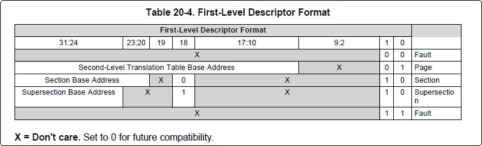The “da” (“device address”) column reflects the virtual address. It is derived from the index into the table, i.e. there does not exist a “da” register or field in the page table. Each MB of the address space maps to an entry in the table. The “da” column is displayed to make it easy to find the virtual address of interest.
The “pte” (“page table entry”) column can be decoded according to Table 20-4 shown above. For example:
1: 0x4a000000 0x4a040002
The 0x4a040002 shows us that it is a Supersection with base address 0x4A000000. This gives us a 16 MB memory page. Note the repeated entries afterward. That’s a requirement of the MMU. Here’s an excerpt from the TRM:
Note
Supersection descriptors must be repeated 16 times, because each descriptor in the first level translation table describes 1 MiB of memory. If an access points to a descriptor that is not initialized, the MMU will behave in an unpredictable way.
Changing Cortex M4 IPU Memory Map
In order to fully understand the memory mapping of the Cortex M4 IPU Subsystems, it’s helpful to recognize that there are two distinct/independent levels of memory translation. Here’s a snippet from the TRM to illustrate:

Cortex M4 IPU Physical Addresses
The physical location where the M4 code/data will actually reside is defined by the CMA carveout. To change this location, you must change the definition of the carveout. The M4 carveouts are defined in the Linux dts file. For example for the AM57xx EVM:
linux/arch/arm/boot/dts/am57xx-beagle-x15-common.dtsi
{
ipu2_cma_pool: ipu2_cma@95800000 {
compatible = "shared-dma-pool";
reg = <0x0 95800000 0x0 0x3800000>;
reusable;
status = "okay";
};
ipu1_cma_pool: ipu1_cma@9d000000 {
compatible = "shared-dma-pool";
reg = <0x0 9d000000 0x0 0x2000000>;
reusable;
status = "okay";
};
};
You are able to change both the size and location. Be careful not to overlap any other carveouts!
Note
The two location entries for a given carveout must be identical!
Additionally, when you change the carveout location, there is a corresponding change that must be made to the resource table. For starters, if you’re making a memory change you will need a custom resource table. The resource table is a large structure that is the “bridge” between physical memory and virtual memory. This structure is utilized for configuring the IPUx_MMU (not the Unicache MMU). There is detailed information available in the article IPC Resource customTable.
Once you’ve created your custom resource table, you must update the address of PHYS_MEM_IPC_VRING to be the same base address as your corresponding CMA.
#if defined(VAYU_IPU_1)
#define PHYS_MEM_IPC_VRING 0x9D000000
#elif defined (VAYU_IPU_2)
#define PHYS_MEM_IPC_VRING 0x95800000
#endif
Note
The PHYS_MEM_IPC_VRING definition from the resource table must match the address of the associated CMA carveout!
Cortex M4 IPU Virtual Addresses
Unicache MMU
The Unicache MMU sits closest to the Cortex M4. It provides the first level of address translation. The Unicache MMU is actually “self programmed” by the Cortex M4. The Unicache MMU is also referred to as the Attribute MMU (AMMU). There are a fixed number of small, medium and large pages. Here’s a snippet showing some of the key mappings:
ipc_3_43_02_04/examples/DRA7XX_linux_elf/ex02_messageq/ipu1/IpuAmmu.cfg
/*********************** Large Pages *************************/
/* Instruction Code: Large page (512M); cacheable */
/* config large page[0] to map 512MB VA 0x0 to L3 0x0 */
AMMU.largePages[0].pageEnabled = AMMU.Enable_YES;
AMMU.largePages[0].logicalAddress = 0x0;
AMMU.largePages[0].translationEnabled = AMMU.Enable_NO;
AMMU.largePages[0].size = AMMU.Large_512M;
AMMU.largePages[0].L1_cacheable = AMMU.CachePolicy_CACHEABLE;
AMMU.largePages[0].L1_posted = AMMU.PostedPolicy_POSTED;
/* Peripheral regions: Large Page (512M); non-cacheable */
/* config large page[1] to map 512MB VA 0x60000000 to L3 0x60000000 */
AMMU.largePages[1].pageEnabled = AMMU.Enable_YES;
AMMU.largePages[1].logicalAddress = 0x60000000;
AMMU.largePages[1].translationEnabled = AMMU.Enable_NO;
AMMU.largePages[1].size = AMMU.Large_512M;
AMMU.largePages[1].L1_cacheable = AMMU.CachePolicy_NON_CACHEABLE;
AMMU.largePages[1].L1_posted = AMMU.PostedPolicy_POSTED;
/* Private, Shared and IPC Data regions: Large page (512M); cacheable */
/* config large page[2] to map 512MB VA 0x80000000 to L3 0x80000000 */
AMMU.largePages[2].pageEnabled = AMMU.Enable_YES;
AMMU.largePages[2].logicalAddress = 0x80000000;
AMMU.largePages[2].translationEnabled = AMMU.Enable_NO;
AMMU.largePages[2].size = AMMU.Large_512M;
AMMU.largePages[2].L1_cacheable = AMMU.CachePolicy_CACHEABLE;
AMMU.largePages[2].L1_posted = AMMU.PostedPolicy_POSTED;
| Page | Cortex M4 Address | Intermediate Address | Size | Comment |
|---|---|---|---|---|
| Large Page 0 | 0x00000000-0x1fffffff | 0x00000000-0x1fffffff | 512 MB | Code |
| Large Page 1 | 0x60000000-0x7fffffff | 0x60000000-0x7fffffff | 512 MB | Peripherals |
| Large Page 2 | 0x80000000-0x9fffffff | 0x80000000-0x9fffffff | 512 MB | Data |
These 3 pages are “identity” mappings, performing a passthrough of requests to the associated address ranges. These intermediate addresses get mapped to their physical addresses in the next level of translation (IOMMU).
The AMMU ranges for code and data need to be identity mappings because otherwise the remoteproc loader wouldn’t be able to match up the sections from the ELF file with the associated IOMMU mapping. These mappings should suffice for any application, i.e. no need to adjust these. The more likely area for modification is the resource table in the next section. The AMMU mappings are needed mainly to understand the full picture with respect to the Cortex M4 memory map.
IOMMU
The IOMMU sits closest to the L3 interconnect. It takes the intermediate address output from the AMMU and translates it to the physical address used by the L3 interconnect. The IOMMU is programmed by the ARM based on the associated resource table. If you’re planning any memory changes then you’ll want to make a custom resource table as described in the wiki page IPC Resource customTable.
The default resource table (which can be adapted to make a custom table) can be found at this location:
ipc/packages/ti/ipc/remoteproc/rsc_table_vayu_ipu.h
#define IPU_MEM_TEXT 0x0
#define IPU_MEM_DATA 0x80000000
#define IPU_MEM_IOBUFS 0x90000000
#define IPU_MEM_IPC_DATA 0x9F000000
#define IPU_MEM_IPC_VRING 0x60000000
#define IPU_MEM_RPMSG_VRING0 0x60000000
#define IPU_MEM_RPMSG_VRING1 0x60004000
#define IPU_MEM_VRING_BUFS0 0x60040000
#define IPU_MEM_VRING_BUFS1 0x60080000
#define IPU_MEM_IPC_VRING_SIZE SZ_1M
#define IPU_MEM_IPC_DATA_SIZE SZ_1M
#if defined(VAYU_IPU_1)
#define IPU_MEM_TEXT_SIZE (SZ_1M)
#elif defined(VAYU_IPU_2)
#define IPU_MEM_TEXT_SIZE (SZ_1M * 6)
#endif
#if defined(VAYU_IPU_1)
#define IPU_MEM_DATA_SIZE (SZ_1M * 5)
#elif defined(VAYU_IPU_2)
#define IPU_MEM_DATA_SIZE (SZ_1M * 48)
#endif
<snip...>
{
TYPE_CARVEOUT,
IPU_MEM_TEXT, 0,
IPU_MEM_TEXT_SIZE, 0, 0, "IPU_MEM_TEXT",
},
{
TYPE_CARVEOUT,
IPU_MEM_DATA, 0,
IPU_MEM_DATA_SIZE, 0, 0, "IPU_MEM_DATA",
},
{
TYPE_CARVEOUT,
IPU_MEM_IPC_DATA, 0,
IPU_MEM_IPC_DATA_SIZE, 0, 0, "IPU_MEM_IPC_DATA",
},
The 3 entries above from the resource table all come from the associated IPU CMA pool (i.e. as dictated by the TYPE_CARVEOUT). The second parameter represents the virtual address (i.e. input address to the IOMMU). These addresses must be consistent with both the AMMU mapping as well as the linker command file. The ex02_messageq example from ipc defines these memory sections in the file examples/DRA7XX_linux_elf/ex02_messageq/shared/config.bld.
You can dump the IPU IOMMU page tables with the following commands:
| IPU | Command |
|---|---|
| IPU1 | cat /sys/kernel/debug/omap_iommu/58882000.mmu/pagetable |
| IPU2 | cat /sys/kernel/debug/omap_iommu/55082000.mmu/pagetable |
Please see the corresponding DSP documentation for more details on interpreting the output.
Cortex M4 IPU Access to Peripherals
The default resource table creates the following mappings:
| Virtual Address used by Cortex M4 | Address at output of Unicache MMU | Address at output of IOMMU | Size | Comment |
|---|---|---|---|---|
| 0x6A000000 | 0x6A000000 | 0x4A000000 | 16 MB | L4CFG + L4WKUP |
| 0x68000000 | 0x68000000 | 0x48000000 | 2 MB | L4PER1 |
| 0x68400000 | 0x68400000 | 0x48400000 | 4 MB | L4PER2 |
| 0x68800000 | 0x68800000 | 0x48800000 | 8 MB | L4PER3 |
| 0x74000000 | 0x74000000 | 0x54000000 | 16 MB | L3_INSTR + CT_TBR |
Example: Accessing UART5 from IPU
- For this example, it’s assumed the pin-muxing was already setup in the bootloader. If that’s not the case, you would need to do that here.
- The UART5 module needs to be enabled via the CM_L4PER_UART5_CLKCTRL register. This is located at physical address 0x4A009870. So from the M4 we would program this register at virtual address 0x6A009870. Writing a value of 2 to this register will enable the peripheral.
- After completing the previous step, the UART5 registers will become accessible. Normally UART5 is accessible at physical base address 0x48066000. This would correspondingly be accessed from the IPU at 0x68066000.
10.2.4.1.4. Power Management¶
The IPUs and DSPs auto-idle by default. This can prevent you from being able to connect to the device using JTAG or from accessing local memory via devmem2. There are some options sprinkled throughout sysfs that are needed in order to force these subsystems on, as is sometimes needed for development and debug purposes.
There are some hard-coded device names that originate in the device tree (dra7.dtsi) that are needed for these operations:
| Remote Core | Definition in dra7.dtsi | System FS Name |
|---|---|---|
| IPU1 | ipu@58820000 | 58820000.ipu |
| IPU2 | ipu@55020000 | 55020000.ipu |
| DSP1 | dsp@40800000 | 40800000.dsp |
| DSP2 | dsp@41000000 | 41000000.dsp |
| ICSS1-PRU0 | pru@4b234000 | 4b234000.pru0 |
| ICSS1-PRU1 | pru@4b238000 | 4b238000.pru1 |
| ICSS2-PRU0 | pru@4b2b4000 | 4b2b4000.pru0 |
| ICSS2-PRU1 | pru@4b2b8000 | 4b2b8000.pru1 |
To map these System FS names to the associated remoteproc entry, you can run the following commands:
root@am57xx-evm:~# ls -l /sys/kernel/debug/remoteproc/
root@am57xx-evm:~# cat /sys/kernel/debug/remoteproc/remoteproc*/name
The results of the commands will be a one-to-one mapping. For example, 58820000.ipu corresponds with remoteproc0.
Similarly, to see the power state of each of the cores:
root@am57xx-evm:~# cat /sys/class/remoteproc/remoteproc*/state
The state can be suspended, running, offline, etc. You can only attach JTAG if the state is “running”. If it shows as “suspended” then you must force it to run. For example, let’s say DSP0 is “suspended”. You can run the following command to force it on:
root@am57xx-evm:~# echo on > /sys/bus/platform/devices/40800000.dsp/power/control
The same is true for any of the cores, but replace 40800000.dsp with the associated System FS name from the chart above.
10.2.4.1.5. Adding IPC to an Existing TI-RTOS Application on slave cores¶
Adding IPC to an existing TI RTOS application on the DSP
A common thing people want to do is take an existing DSP application and add IPC to it. This is common when migrating from a DSP only solution to a heterogeneous SoC with an Arm plus a DSP. This is the focus of this section.
In order to describe this process, we need an example test case to work with. For this purpose, we’ll be using the GPIO_LedBlink_evmAM572x_c66xExampleProject example that’s part of the PDK (installed as part of the Processor SDK RTOS). You can find it at c:/ti/pdk_am57xx_1_0_4/packages/MyExampleProjects/GPIO_LedBlink_evmAM572x_c66xExampleProject. This example uses SYS/BIOS and blinks the USER0 LED on the AM572x GP EVM, it’s labeled D4 on the EVM silkscreen just to the right of the blue reset button.
There were several steps taken to make this whole process work, each of which will be described in following sections
- Build and run the out-of-box LED blink example on the EVM using Code Composer Studio (CCS)
- Take the ex02_message example from the IPC software bundle and turn it into a CCS project. Build it and modify the Linux startup code to use this new image. This is just a sanity check step to make sure we can build the IPC examples in CCS and have them run at boot up on the EVM.
- In CCS, make a clone of the out-of-box LED example and rename it to denote it’s the IPC version of the example. Then using the ex02_messageq example as a reference, add in the IPC pieces to the LED example. Build from CCS then add it to the Linux firmware folder.
Running LED Blink PDK Example from CCS
TODO - Fill this section in with instructions on how to run the LED blink example using JTAG and CCS after the board has booted Linux.
Note
Some edits were made to the LED blink example to allow it to run
in a Linux environment, specifically, removed the GPIO interrupts and then added a Clock object to call the LED GPIO toggle function on a periodic bases.
Make CCS project out of ex02_messageq IPC example
TODO - fill this section in with instructions on how to make a CCS project out of the IPC example source files.
Add IPC to the LED Blink Example
The first step is to clone our out-of-box LED blink CCS project and rename it to denote it’s using IPC. The easiest way to do this is using CCS. Here are the steps...
- In the Edit perspective, go into your Project Explorer window and right click on your GPIO_LedBlink_evmAM572x+c66xExampleProject project and select copy from the pop-up menu. Maske sure the project is not is a closed state.
- Rick click in and empty area of the project explorer window and select past.
- A dialog box pops up, modify the name to denote it’s using IPC. A good name is GPIO_LedBlink_evmAM572x+c66xExampleProjec_with_ipc.
This is the project we’ll be working with from here on. The next thing we want to do is select the proper RTSC platform and other components. To do this, follow these steps.
- Right click on the GPIO_LedBlink_evmAM572x+c66xExampleProjec_with_ipc project and select Properties
- In the left hand pane, click on CCS General.
- On the right hand side, click on the RTSC tab
- For XDCtools version: select 3.32.0.06_core
- In the list of Products and Repositories, check the following...
- IPC 3.43.2.04
- SYS/BIOS 6.45.1.29
- am57xx PDK 1.0.4
- For Target, select ti.targets.elf.C66
- For Platform, select ti.platforms.evmDRA7XX
- Once the platform is selected, edit its name buy hand and append :dsp1 to the end. After this it should be ti.platforms.evmDRA7XX:dsp1
- Go ahead and leave the Build-profile set to debug.
- Hit the OK button.
Now we want to copy configuration and source files from the ex02_messageq IPC example into our project. The IPC example is located at C:/ti/ipc_3_43_02_04/examples/DRA7XX_linux_elf/ex02_messageq. To copy files into your CCS project, you can simply select the files you want in Windows explorer then drag and drop them into your project in CCS.
Copy these files into your CCS project...
- C:/ti/ipc_3_43_02_04/examples/DRA7XX_linux_elf/ex02_messageq/shared/AppCommon.h
- C:/ti/ipc_3_43_02_04/examples/DRA7XX_linux_elf/ex02_messageq/shared/config.bld
- C:/ti/ipc_3_43_02_04/examples/DRA7XX_linux_elf/ex02_messageq/shared/ipc.cfg.xs
Now copy these files into your CCS project...
- C:/ti/ipc_3_43_02_04/examples/DRA7XX_linux_elf/ex02_messageq/dsp1/Dsp1.cfg
- C:/ti/ipc_3_43_02_04/examples/DRA7XX_linux_elf/ex02_messageq/dsp1/MainDsp1.c
- C:/ti/ipc_3_43_02_04/examples/DRA7XX_linux_elf/ex02_messageq/dsp1/Server.c
- C:/ti/ipc_3_43_02_04/examples/DRA7XX_linux_elf/ex02_messageq/dsp1/Server.h
Note
When you copy Dsp1.cfg into your CCS project, it should show up greyed out. This is because the LED blink example already has a cfg file (gpio_test_evmAM572x.cfg). The Dsp1.cfg will be used for copying and pasting. When it’s all done, you can delete it from your project.
Finally, you will likely want to use a custom resource table so copy these files into your CCS project...
- C:/ti/ipc_3_43_02_04/packages/ti/ipc/remoteproc/rsc_table_vayu_dsp.h
- C:/ti/ipc_3_43_02_04/packages/ti/ipc/remoteproc/rsc_types.h
The rsc_table_vayu_dsp.h file defines an initialized structure so let’s make a .c source file.
- In your CCS project, rename rsc_table_vayu_dsp.h to rsc_table_vayu_dsp.c
- Open up Dsp1.cfg using a text editor (don’t open it using the GUI). Right click on it and select Open With -> XDCscript Editor
- We want to copy the entire contents into the clipboard. Select all and copy.
- Now just like above, open the gpio_test_evmAM572x.cfg config file in the text editor. Go to the very bottom and paste in the contents from the Dsp1.cfg file. Basically we’ve appended the contents of Dsp1.cfg into gpio_test_evmAM572x.cfg.
We’ve now added in all the necessary configuration and source files into our project. Don’t expect it to build at this point, we have to make edits first. These edits are listed below.
Note
You can download the full CCS project with source files to use as a reference. See link towards the end of this section.
- Edit gpio_test_evmAM572x.cfg
Add the following to the beginning of your configuration file
var Program = xdc.useModule('xdc.cfg.Program');
Comment out the Memory sections configuration as shown below
/* ================ Memory sections configuration ================ */
//Program.sectMap[".text"] = "EXT_RAM";
//Program.sectMap[".const"] = "EXT_RAM";
//Program.sectMap[".plt"] = "EXT_RAM";
/* Program.sectMap["BOARD_IO_DELAY_DATA"] = "OCMC_RAM1"; */
/* Program.sectMap["BOARD_IO_DELAY_CODE"] = "OCMC_RAM1"; */
Since we are no longer using a shared folder, make the following change
//var ipc_cfg = xdc.loadCapsule("../shared/ipc.cfg.xs");
var ipc_cfg = xdc.loadCapsule("../ipc.cfg.xs");
Comment out the following. We’ll be calling this function directly from main.
//BIOS.addUserStartupFunction('&IpcMgr_ipcStartup');
Increase the system stack size
//Program.stack = 0x1000;
Program.stack = 0x8000;
Comment out the entire TICK section
/* --------------------------- TICK --------------------------------------*/
// var Clock = xdc.useModule('ti.sysbios.knl.Clock');
// Clock.tickSource = Clock.TickSource_NULL;
// //Clock.tickSource = Clock.TickSource_USER;
// /* Configure BIOS clock source as GPTimer5 */
// //Clock.timerId = 0;
//
// var Timer = xdc.useModule('ti.sysbios.timers.dmtimer.Timer');
//
// /* Skip the Timer frequency verification check. Need to remove this later */
// Timer.checkFrequency = false;
//
// /* Match this to the SYS_CLK frequency sourcing the dmTimers.
// * Not needed once the SYS/BIOS family settings is updated. */
// Timer.intFreq.hi = 0;
// Timer.intFreq.lo = 19200000;
//
// //var timerParams = new Timer.Params();
// //timerParams.period = Clock.tickPeriod;
// //timerParams.periodType = Timer.PeriodType_MICROSECS;
// /* Switch off Software Reset to make the below settings effective */
// //timerParams.tiocpCfg.softreset = 0x0;
// /* Smart-idle wake-up-capable mode */
// //timerParams.tiocpCfg.idlemode = 0x3;
// /* Wake-up generation for Overflow */
// //timerParams.twer.ovf_wup_ena = 0x1;
// //Timer.create(Clock.timerId, Clock.doTick, timerParams);
//
// var Idle = xdc.useModule('ti.sysbios.knl.Idle');
// var Deh = xdc.useModule('ti.deh.Deh');
//
// /* Must be placed before pwr mgmt */
// Idle.addFunc('&ti_deh_Deh_idleBegin');
Make configuration change to use custom resource table. Add to the end of the file.
/* Override the default resource table with my own */
var Resource = xdc.useModule('ti.ipc.remoteproc.Resource');
Resource.customTable = true;
- Edit main_led_blink.c
Add the following external declarations
extern Int ipc_main();
extern Void IpcMgr_ipcStartup(Void);
In main(), add a call to ipc_main() and IpcMgr_ipcStartup() just before BIOS_start()
ipc_main();
if (callIpcStartup) {
IpcMgr_ipcStartup();
}
/* Start BIOS */
BIOS_start();
return (0);
Comment out the line that calls Board_init(boardCfg). This call is in the original example because it assumes TI-RTOS is running on the Arm but in our case here, we are running Linux and this call is destructive so we comment it out.
#if defined(EVM_K2E) || defined(EVM_C6678)
boardCfg = BOARD_INIT_MODULE_CLOCK |
BOARD_INIT_UART_STDIO;
#else
boardCfg = BOARD_INIT_PINMUX_CONFIG |
BOARD_INIT_MODULE_CLOCK |
BOARD_INIT_UART_STDIO;
#endif
//Board_init(boardCfg);
- Edit MainDsp1.c
The app now has it’s own main(), so rename this one and get rid of args
//Int main(Int argc, Char* argv[])
Int ipc_main()
{
No longer using args so comment these lines
//taskParams.arg0 = (UArg)argc;
//taskParams.arg1 = (UArg)argv;
BIOS_start() is done in the app main() so comment it out here
/* start scheduler, this never returns */
//BIOS_start();
Comment this out
//Log_print0(Diags_EXIT, "<-- main:");
- Edit rsc_table_vayu_dsp.c
Set this #define before it’s used to select PHYS_MEM_IPC_VRING value
#define VAYU_DSP_1
Add this extern declaration prior to the symbol being used
extern char ti_trace_SysMin_Module_State_0_outbuf__A;
- Edit Server.c
No longer have shared folder so change include path
/* local header files */
//#include "../shared/AppCommon.h"
#include "../AppCommon.h"
Download the Full CCS Project
GPIO_LedBlink_evmAM572x_c66xExampleProject_with_ipc.zip
Adding IPC to an existing TI RTOS application on the IPU
A common thing people want to do is take an existing IPU application that may be controlling serial or control interfaces and add IPC to it so that the firmware can be loaded from the ARM. This is common when migrating from a IPU only solution to a heterogeneous SoC with an MPUSS (ARM) and IPUSS. This is the focus of this section.
In order to describe this process, we need an example TI RTOS test case to work with. For this purpose, we’ll be using the UART_BasicExample_evmAM572x_m4ExampleProject example that’s part of the PDK (installed as part of the Processor SDK RTOS). This example uses TI RTOS and does serial IO using UART3 port on the AM572x GP EVM, it’s labeled Serial Debug on the EVM silkscreen.
There were several steps taken to make this whole process work, each of which will be described in following sections
- Build and run the out-of-box UART M4 example on the EVM using Code Composer Studio (CCS)
- Build and run the ex02_messageQ example from the IPC software bundle and turn it into a CCS project. Build it and modify the Linux startup code to use this new image. This is just a sanity check step to make sure we can build the IPC examples in CCS and have them run at boot up on the EVM.
- In CCS, make a clone of the out-of-box UART M4 example and rename it to denote it’s the IPC version of the example. Then using the ex02_messageq example as a reference, add in the IPC pieces to the UART example code. Build from CCS then add it to the Linux firmware folder.
Running UART Read/Write PDK Example from CCS
Developers are required to run pdkProjectCreate script to generate this example as described in the Processor SDK RTOS wiki article.
For the UART M4 example run the script with the following arguments:
pdkProjectCreate.bat AM572x evmAM572x little uart m4
After you run the script, you can find the UART M4 example project at <SDK_INSTALL_PATH>/pdk_am57xx_1_0_4/packages/MyExampleProjects/UART_BasicExample_evmAM572x_m4ExampleProject.
Import the project in CCS and build the example. You can now connect to the EVM using an emulator and CCS using the instructions provided here: http://processors.wiki.ti.com/index.php/AM572x_GP_EVM_Hardware_Setup
Connect to the ARM core and make sure GEL runs multicore initialization and brings the IPUSS out of reset. Connect to IPU2 core0 and load and run the M4 UART example. When you run the code you should see the following log on the serial IO console:
uart driver and utils example test cases :
Enter 16 characters or press Esc
1234567890123456 <- user input
Data received is
1234567890123456 <- loopback from user input
uart driver and utils example test cases :
Enter 16 characters or press Esc
Build and Run ex02_messageq IPC example
Follow instructions described in Article Run IPC Linux Examples
Update Linux Kernel device tree to remove UART that will be controlled by M4
Linux kernel enables all SOC HW modules which are required for its configuration. Appropriate drivers configure required clocks and initialize HW registers. For all unused IPs clocks are not configured.
The uart3 node is disabled in kernel using device tree. Also this restricts kernel to put those IPs to sleep mode.
&uart3 {
status = "disabled";
ti,no-idle;
};
Add IPC to the UART Example
The first step is to clone our out-of-box UART example CCS project and rename it to denote it’s using IPC. The easiest way to do this is using CCS. Here are the steps...
- In the Edit perspective, go into your Project Explorer window and right click on your UART_BasicExample_evmAM572x_m4ExampleProject project and select copy from the pop-up menu. Maske sure the project is not is a closed state.
- Rick click in and empty area of the project explorer window and select past.
- A dialog box pops up, modify the name to denote it’s using IPC. A good name is UART_BasicExample_evmAM572x_m4ExampleProject_with_ipc.
This is the project we’ll be working with from here on. The next thing we want to do is select the proper RTSC platform and other components. To do this, follow these steps.
- Right click on the UART_BasicExample_evmAM572x_m4ExampleProject_with_ipc project and select Properties
- In the left hand pane, click on CCS General.
- On the right hand side, click on the RTSC tab
- For XDCtools version: select 3.xx.x.xx_core
- In the list of Products and Repositories, check the following...
- IPC 3.xx.x.xx
- SYS/BIOS 6.4x.x.xx
- am57xx PDK x.x.x
- For Target, select ti.targets.arm.elf.M4
- For Platform, select ti.platforms.evmDRA7XX
- Once the platform is selected, edit its name buy hand and append :ipu2 to the end. After this it should be ti.platforms.evmDRA7XX:ipu2
- Go ahead and leave the Build-profile set to debug.
- Hit the OK button.
Now we want to copy configuration and source files from the ex02_messageq IPC example into our project. The IPC example is located at C:/ti/ipc_3_xx_xx_xx/examples/DRA7XX_linux_elf/ex02_messageq. To copy files into your CCS project, you can simply select the files you want in Windows explorer then drag and drop them into your project in CCS.
Copy these files into your CCS project...
- C:/ti/ipc_3_xx_xx_xx/examples/DRA7XX_linux_elf/ex02_messageq/shared/AppCommon.h
- C:/ti/ipc_3_xx_xx_xx/examples/DRA7XX_linux_elf/ex02_messageq/shared/config.bld
- C:/ti/ipc_3_xx_xx_xx/examples/DRA7XX_linux_elf/ex02_messageq/shared/ipc.cfg.xs
Now copy these files into your CCS project...
- C:/ti/ipc_3_xx_xx_xx/examples/DRA7XX_linux_elf/ex02_messageq/ipu2/Ipu2.cfg
- C:/ti/ipc_3_xx_xx_xx/examples/DRA7XX_linux_elf/ex02_messageq/ipu2/MainIpu2.c
- C:/ti/ipc_3_xx_xx_xx/examples/DRA7XX_linux_elf/ex02_messageq/ipu2/Server.c
- C:/ti/ipc_3_xx_xx_xx/examples/DRA7XX_linux_elf/ex02_messageq/ipu2/Server.h
Note
When you copy Ipu2.cfg into your CCS project, it should show up greyed out. If not, right click and exclude it from build. This is because the UART example already has a cfg file (uart_m4_evmAM572x.cfg). The Ipu2.cfg will be used for copying and pasting. When it’s all done, you can delete it from your project.
Finally, you will likely want to use a custom resource table so copy these files into your CCS project...
- C:/ti/ipc_3_xx_xx_xx/packages/ti/ipc/remoteproc/rsc_table_vayu_ipu.h
- C:/ti/ipc_3_xx_xx_xx/packages/ti/ipc/remoteproc/rsc_types.h
The rsc_table_vayu_dsp.h file defines an initialized structure so let’s make a .c source file.
- In your CCS project, rename rsc_table_vayu_ipu.h to rsc_table_vayu_ipu.c
Now we want to merge the IPC example configuration file with the LED blink example configuration file. Follow these steps...
- Open up Ipu2.cfg using a text editor (don’t open it using the GUI). Right click on it and select Open With -> XDCscript Editor
- We want to copy the entire contents into the clipboard. Select all and copy.
- Now just like above, open the uart_m4_evmAM572x.cfg config file in the text editor. Go to the very bottom and paste in the contents from the Ipu2.cfg file. Basically we’ve appended the contents of Ipu2.cfg into uart_m4_evmAM572x.cfg.
We’ve now added in all the necessary configuration and source files into our project. Don’t expect it to build at this point, we have to make edits first. These edits are listed below.
Note
You can download the full CCS project with source files to use as a reference. See link towards the end of this section.
- Edit uart_m4_evmAM572x.cfg
Add the following to the beginning(at the top) of your configuration file
var Program = xdc.useModule('xdc.cfg.Program');
Since we are no longer using a shared folder, make the following change
//var ipc_cfg = xdc.loadCapsule("../shared/ipc.cfg.xs");
var ipc_cfg = xdc.loadCapsule("../ipc.cfg.xs");
Comment out the following. We’ll be calling this function directly from main.
//BIOS.addUserStartupFunction('&IpcMgr_ipcStartup');
Increase the system stack size
//Program.stack = 0x1000;
Program.stack = 0x8000;
Comment out the entire TICK section
/* --------------------------- TICK --------------------------------------*/
// var Clock = xdc.useModule('ti.sysbios.knl.Clock');
// Clock.tickSource = Clock.TickSource_NULL;
// //Clock.tickSource = Clock.TickSource_USER;
// /* Configure BIOS clock source as GPTimer5 */
// //Clock.timerId = 0;
//
// var Timer = xdc.useModule('ti.sysbios.timers.dmtimer.Timer');
//
// /* Skip the Timer frequency verification check. Need to remove this later */
// Timer.checkFrequency = false;
//
// /* Match this to the SYS_CLK frequency sourcing the dmTimers.
// * Not needed once the SYS/BIOS family settings is updated. */
// Timer.intFreq.hi = 0;
// Timer.intFreq.lo = 19200000;
//
// //var timerParams = new Timer.Params();
// //timerParams.period = Clock.tickPeriod;
// //timerParams.periodType = Timer.PeriodType_MICROSECS;
// /* Switch off Software Reset to make the below settings effective */
// //timerParams.tiocpCfg.softreset = 0x0;
// /* Smart-idle wake-up-capable mode */
// //timerParams.tiocpCfg.idlemode = 0x3;
// /* Wake-up generation for Overflow */
// //timerParams.twer.ovf_wup_ena = 0x1;
// //Timer.create(Clock.timerId, Clock.doTick, timerParams);
//
// var Idle = xdc.useModule('ti.sysbios.knl.Idle');
// var Deh = xdc.useModule('ti.deh.Deh');
//
// /* Must be placed before pwr mgmt */
// Idle.addFunc('&ti_deh_Deh_idleBegin');
Make configuration change to use custom resource table. Add to the end of the file.
/* Override the default resource table with my own */
var Resource = xdc.useModule('ti.ipc.remoteproc.Resource');
Resource.customTable = true;
- Edit main_uart_example.c
Add the following external declarations
extern Int ipc_main();
extern Void IpcMgr_ipcStartup(Void);
In main(), add a call to ipc_main() and IpcMgr_ipcStartup() just before BIOS_start()
ipc_main();
if (callIpcStartup) {
IpcMgr_ipcStartup();
}
/* Start BIOS */
BIOS_start();
return (0);
Comment out the line that calls Board_init(boardCfg). This call is in the original example because it assumes TI-RTOS is running on the Arm but in our case here, we are running Linux and this call is destructive so we comment it out. The board init call does all pinmux configuration, module clock and UART peripheral initialization.
In order to run the UART Example on M4, you need to disable the UART in the Linux DTB file and interact with the Linux kernel using Telnet (This will be described later in the article). Since Linux will be running uboot performs the pinmux configuration but clock and UART Stdio setup needs to be performed by the M4.
Original code
#if defined(EVM_K2E) || defined(EVM_C6678)
boardCfg = BOARD_INIT_MODULE_CLOCK | BOARD_INIT_UART_STDIO;
#else
boardCfg = BOARD_INIT_PINMUX_CONFIG | BOARD_INIT_MODULE_CLOCK | BOARD_INIT_UART_STDIO;
#endif
Board_init(boardCfg);
Modified Code :
boardCfg = BOARD_INIT_UART_STDIO;
Board_init(boardCfg);
We are not done yet as we still need to configure turn the clock control on for the UART without impacting the other clocks. We can do that by adding the following code before Board_init API call:
CSL_l4per_cm_core_componentRegs *l4PerCmReg =
(CSL_l4per_cm_core_componentRegs *)CSL_MPU_L4PER_CM_CORE_REGS;
CSL_FINST(l4PerCmReg->CM_L4PER_UART3_CLKCTRL_REG,
L4PER_CM_CORE_COMPONENT_CM_L4PER_UART3_CLKCTRL_REG_MODULEMODE, ENABLE);
while(CSL_L4PER_CM_CORE_COMPONENT_CM_L4PER_UART3_CLKCTRL_REG_IDLEST_FUNC !=
CSL_FEXT(l4PerCmReg->CM_L4PER_UART3_CLKCTRL_REG,
L4PER_CM_CORE_COMPONENT_CM_L4PER_UART3_CLKCTRL_REG_IDLEST));
- Edit MainIpu2.c
The app now has it’s own main(), so rename this one and get rid of args
//Int main(Int argc, Char* argv[])
Int ipc_main()
{
No longer using args so comment these lines
//taskParams.arg0 = (UArg)argc;
//taskParams.arg1 = (UArg)argv;
BIOS_start() is done in the app main() so comment it out here
/* start scheduler, this never returns */
//BIOS_start();
Comment this out
//Log_print0(Diags_EXIT, "<-- main:");
- Edit rsc_table_vayu_ipu.c
Set this #define before it’s used to select PHYS_MEM_IPC_VRING value
#define VAYU_IPU_2
Add this extern declaration prior to the symbol being used
extern char ti_trace_SysMin_Module_State_0_outbuf__A;
- Edit Server.c
No longer have shared folder so change include path
/* local header files */
//#include "../shared/AppCommon.h"
#include "../AppCommon.h"
Handling AMMU (L1 Unicache MMU) and L2 MMU
There are two MMUs inside each of the IPU1, and IPU2 subsystems. The L1 MMU is referred to as IPU_UNICACHE_MMU or AMMU and L2 MMU. The description of how this is configured in IPC-remoteproc has been described in section Changing_Cortex_M4_IPU_Memory_Map. IPC handling of L1 and L2 MMU is different from how the PDK driver examples setup the memory access using these MMUs which the users need to manage when integrating the components. This difference is highlighted below:

- PDK examples use addresses (0x4X000000) to peripheral registers and
use following MMU setting
- L2 MMU uses default 1:1 Mapping
- AMMU configuration translates physical 0x4X000000 access to logical 0x4X000000
- IPC+ Remote Proc ARM+M4 requires IPU to use logical address
(0x6X000000) and uses following MMU setting
- L2 MMU is configured such that MMU translates 0x6X000000 access to addresss 0x4X000000
- AMMU is configured for 1:1 mapping 0x6X000000 and 0x6X000000
Therefore after integrating IPC with PDK drivers, it is recommended that the alias addresses are used to access peripherals and PRCM registers. This requires changes to the addresses used by PDK drivers and in application code.
The following changes were then made to the IPU application source code:
Add UART_soc.c file to the project and modify the base addresses for all IPU UART register instance in the UART_HwAttrs to use alias addresses:
#ifdef _TMS320C6X
CSL_DSP_UART3_REGS,
OSAL_REGINT_INTVEC_EVENT_COMBINER,
#elif defined(__ARM_ARCH_7A__)
CSL_MPU_UART3_REGS,
106,
#else
(CSL_IPU_UART3_REGS + 0x20000000), //Base Addr = 0x48000000 + 0x20000000 = 0x68000000
45,
#endif
Adding custom SOC configuration also means that you should use the generic UART driver instead of driver with built in SOC setup. To do this comment the following line in .cfg:
var Uart = xdc.loadPackage('ti.drv.uart');
//Uart.Settings.socType = socType;
There is also an instance in the application code where we added pointer to PRCM registers that need to be changed as follows.
CSL_l4per_cm_core_componentRegs *l4PerCmReg =
(CSL_l4per_cm_core_componentRegs *) 0x6a009700; //CSL_MPU_L4PER_CM_CORE_REGS;
Now, you are ready to build the firmware. After the .out is built, change the extension to .xem4 and copy it over to the location in the filesystem that is used to load M4 firmware.
10.2.4.2. Customizing Memory map for creating Multicore Applications on AM57xx using IPC¶
10.2.4.3. IPC Debugging Tools and Techniques on AM57xx¶
The sections relevant to AM57xx have been pulled from the Debugging Tools and Techniques With IPC3.x Application Note and placed here.
10.2.4.3.1. Introduction¶
During development of software, it is common to encounter issues that must be debugged to provide a robust software offering. When developing software that uses the IPC3.x product for inter-processor communication, there are tools and techniques available to aid in the debugging process. These tools and techniques help to more quickly understand and debug the issue. This document addresses all three HLOS’s supported by IPC3.x: Android™ platform, Linux®, and QNX®. Where applicable, differences between the OS’s are noted. This document aims to provide tools, techniques, and resources for debugging issues encountered when using the IPC3.x to communicate with remote core software.
10.2.4.3.2. Debug Tools¶
There are several tools that can be leveraged for debugging the IPC, from simple tracing to using Code Composer Studio™ (CCS) to attach to the remote cores. Each provides different advantages in the debugging process.
10.2.4.3.2.1. Tracing¶
When an issue occurs, checking the traces is often the first thing done. The traces can give quick insight into what may be happening. In normal, non-error cases, you might see little to no traces from the IPC. But when there is an error, there often is an error trace that can be used to shed light on the issue. An error trace often gives an error code and a module or function name that can be used to identify where the error was thrown.
10.2.4.3.2.2. Linux and Android - Debugfs¶
Another useful place to look for debug info is in the debugfs. Information for each remote processor can be found there, as well as remote core traces, state information, and more.
10.2.4.3.2.3. Code Composer Studio¶
Connecting over JTAG using Code Composer Studio provides the ability to see exactly what is happening on the remote core, providing access to a wealth of information including viewing memory, registers, and stepping through the code.
10.2.4.3.3. Traces¶
The first place to check when an issue occurs is the traces. Often an error code or a trace regarding an error gives some clue. Both the remote core traces and the HLOS-side traces can be checked.
10.2.4.3.3.1. Linux and Android - Enabling IPC Traces¶
By default, the IPC only prints error traces. To enable additional tracing, use the IPC_DEBUG environment variable at runtime. This feature is only supported on Linux and is available starting in IPC 3.22.00.05. Table 1 lists the two levels of tracing supported.
Table 1. IPC_DEBUG Trace Levels
| Trace Level | Description |
|---|---|
| 1 | Enables all warnings and errors to be printed |
| 2 | Turns on all tracing (including socket and LAD client tracing). |
10.2.4.3.3.2. QNX – Enabling IPC Traces¶
When using QNX, additional traces are enabled by setting environment variables. There are separate environment variables for enabling traces in the resource manager and the user libraries.
Resource Manager Traces
Enable additional traces in the slog by setting the environment variable IPC_DEBUG_SLOG_LEVEL at runtime. By default, only errors and warnings are printed. The IPC_DEBUG_SLOG_LEVEL can be set before launching IPC to enable more traces. Setting the level to 7 enables all IPC traces. The default level is 2.
export IPC_DEBUG_SLOG_LEVEL=7
These traces are printed to the slog, and can be viewed by using the sloginfo command. All IPC traces use 42 as identification in the slog, and you can filter the slog to view only these traces:
sloginfo –m42
User Library Traces
User library traces can be enabled by using the variable IPC_DEBUG when launching the application. Valid levels are 1 to 3, with 3 being the most verbose. For example:
IPC_DEBUG=<level> app_host
10.2.4.3.3.3. Linux and Android - Remote Core Traces¶
The remote core traces can be checked by using debugfs. Run the following command, replacing the “X” with the core-id for the remote core to be checked.
cat /sys/kernel/debug/remoteproc/remoteprocX/trace0
Check the following when checking the traces after an error recovery has occurred:
cat /sys/kernel/debug/remoteproc/remoteprocX/trace0_last
This provides the last traces that happened before error recovery was triggered. For more information about debugging remote core faults and exceptions, see Debugging MMU Faults and Exceptions.
The core-id, “X”, starts at 0 and increments to include all of the remote cores supported by the remoteproc module in the dts file. Because the number of remoteprocs supported can vary depending on the dts configuration, it is not ensured that a certain remote core will always have a certain core-id if the remoteprocs supported in the dts file changes.
The core associated with a particular core-id can be found by checking the name of the remoteproc (see Linux and Android - Remoteproc). Table 2 associates the remoteproc name with the common name of the remote processor.
cat /sys/kernel/debug/remoteproc/remoteprocX/name
Table 2. Remoteproc Names for AM57xx
| Debugfs Name | Remote Core Name |
|---|---|
| 58820000.ipu | IPU1 |
| 55020000.ipu | IPU2 |
| 40800000.dsp | DSP1 |
| 41000000.dsp | DSP2 |
10.2.4.3.3.4. QNX - Remote Core Traces¶
The remote core traces can be checked by using sysfs. Run the following command, replacing <core name> with the core name for the remote core to check. Valid core names for AM57xx are IPU1, IPU2, DSP1, and DSP2.
cat /dev/ipc-trace/<core name>
When checking the traces after error recovery has happened, check the logfile specified at IPC startup, if one was specified. When starting IPC, specify a logfile using the “-c” option. When an error recovery happens, the last traces are dumped to this log file. For more information about debugging remote core faults and exceptions, see Debugging MMU Faults and Exceptions.
10.2.4.3.3.5. QNX - Adding Traces¶
In some cases, you may want to add traces to get more information about the issue. If the issue is reliably reproducible, one technique is to add additional traces to get more information. If the issue is timing-related, this technique may not be helpful, as it may mask the issue
SYS-BIOS
You can add traces in the SYS-BIOS IPC code that come to the trace buffer by using the System_printf() API. After adding traces to the SYS-BIOS IPC and rebuilding the IPC, you must rebuild the remote core image. The traces come to the remote core trace buffer and can be viewed by following the instructions in Linux and Android - Remote Core Traces.
Linux
Additionally, traces can be added in the Linux code. The modules of interest when adding traces are the remoteproc, iommu, and rpmsg modules in the kernel, and the MessageQ, MMRPC, and LAD modules in the user space.
In the kernel are these modules in the following paths:
- drivers/remoteproc/
- drivers/iommu/
- drivers/rpmsg/
Most of the user space code can be found in the IPC package, in the linux folder. The MMRPC code is found in the packages/ti/ipc/mm/ folder.
10.2.4.3.4. Remote Core Status Information¶
Useful information about the status of the remote cores can be found in debugfs.
10.2.4.3.4.1. Linux and Android - Remoteproc¶
Information about each remote core can be found in the following, where the “X” can be replaced with the remote core id.
cat /sys/kernel/debug/remoteproc/remoteprocX/<entry>
Table 3 lists what can be found for each core.
Table 3. Remoteproc Debugfs Entries
| Entry | Description |
|---|---|
| name | Processor name, comprised of the RAM address and the processor type, (for example, 58820000.ipu for IPU1). For a complete list of names, see Table 2. |
| recovery | Returns either “enabled” or “disabled”, indicating if recovery is enabled or disabled for the remote processor. |
| state | Gives the state of the remote processor. State is one of: * offline (0) * suspended (1) * running (2) * crashed (3) |
| trace0 | Returns the contents of the remote processor trace buffer. |
| trace0_last | Created after recovering the remote core. Returns the contents of the remote processor trace buffer before recovery was triggered. |
| version | Returns the version. Currently returns nothing. |
10.2.4.3.4.2. Linux and Android - IOMMU Info¶
Information about the IOMMU can also be found in debugfs. It can be found in the following path, where “XXXXXXXX” is replaced by the register address for the remote core MMU registers.
cat /sys/kernel/debug/omap_iommu/XXXXXXXX.mmu/<entry>
Table 4 gives the corresponding core name for each MMU for AM57xx, and the register address in the TRM.
Table 4. IOMMU Entry Names
| IOMMU Entry | Core Name |
|---|---|
| 58882000.mmu | IPU1 |
| 55082000.mmu | IPU2 |
| 40d01000.mmu | DSP1 (MMU1) |
| 40d02000.mmu | DSP1 (MMU2) |
| 41501000.mmu | DSP2 (MMU1) |
| 41502000.mmu | DSP2 (MMU2) |
Some of this information is inaccessible from a suspended state. Table 5 lists what can be found for each core.
Table 5. IOMMU Debugfs Entries
| Entry | Description |
|---|---|
| nr_tlb_entries | Gives the number of tlb entries |
| pagetable | Dumps the pagetable entries |
| regs | Gives the values of the MMU registers |
| tlb | Lists the tlb entries. |
10.2.4.3.4.3. QNX – Remote Core State Information¶
Find out the current state of the remote core by issuing the following command:
cat /dev/ipc-state/<core_name>
The “core_name” is the name of the remote core. Valid names for AM57xx are IPU1, IPU2, DSP1, and DSP2. The current state will show as “running” or “reset”.
10.2.4.3.5. Using Code Composer Studio¶
A useful tool for debugging issues is Code Composer Studio. CCS allows easy connection to the remote core in order to see the state of the remote core.
10.2.4.3.5.1. Debug Symbols¶
The remote core image must be built with debug symbols to see information such as the call stack and variables. Once attached, load the symbols. The symbols are built into the executable itself. When loading symbols, point to the same executable that is loaded on the target (or the unstripped version locally, if it is stripped to save space when loading to the target.)
10.2.4.3.5.2. Linux and Android - Disabling Remoteproc Auto-Suspend¶
You may want to disable auto-suspend of the remote cores (provided that is not what is being debugged). When the core is suspended, you will not be able to connect to the remote core using CCS. Auto-suspend can be disabled by setting the power control to “on” for the remote core.
echo on > /sys/bus/platform/devices/<device>/power/control
The remote core device name for each remote core can be found in Table 2.
10.2.4.3.5.3. Linux and Android – Disabling Watchdog¶
You may decide to disable the watchdog timers when debugging and using CCS. Otherwise, while connected to the target, the watchdog may expire, triggering an abort sequence. Disable the watchdog timers for a remote core by removing their definitions from the dts file. For example, to disable the watchdog timers for IPU1, change the dts file as below:
&ipu1 {
status = "okay";
memory-region = <&ipu1_cma_pool>;
mboxes = <&mailbox5 &mbox_ipu1_legacy>;
timers = <&timer11>;
- watchdog-timers = <&timer7>, <&timer8>;
+ /*watchdog-timers = <&timer7>, <&timer8>;*/
10.2.4.3.5.4. SYS/BIOS – Disabling Watchdog¶
When using QNX, you can disable the watchdog from within the remote core image itself. If using Linux or Android, this step is not required; simply follow the instructions in Linux and Android – Disabling Watchdog.
To disable the usage of the watchdog from the remote core without completely disabling the device exception module (DEH), comment out the calls to Watchdog_init in the SYS/BIOS IPC code. These calls can be found in packages/ti/deh/Deh.c, packages/ti/deh/DehDsp.c, and packages/ti/ipc/ipcmgr/IpcMgr.c.
packages/ti/deh/Deh.c:
/*
* ======== Deh_Module_startup ========
*/
Int Deh_Module_startup(Int phase)
{
if (AMMU_Module_startupDone() == TRUE) {
- Watchdog_init(ti_sysbios_family_arm_m3_Hwi_excHandlerAsm__I);
+ //Watchdog_init(ti_sysbios_family_arm_m3_Hwi_excHandlerAsm__I);
return Startup_DONE;
}
return Startup_NOTDONE;
}
packages/ti/deh/DehDsp.c:
Int Deh_Module_startup(Int phase)
{
#if defined(HAS_AMMU)
if (AMMU_Module_startupDone() == TRUE) {
- Watchdog_init((Void (*)(Void))ti_sysbios_family_c64p_Exception_handler);
+ //Watchdog_init((Void (*)(Void))ti_sysbios_family_c64p_Exception_handler);
return Startup_DONE;
}
return Startup_NOTDONE;
#else
- Watchdog_init((Void (*)(Void))ti_sysbios_family_c64p_Exception_handler);
+ //Watchdog_init((Void (*)(Void))ti_sysbios_family_c64p_Exception_handler);
return Startup_DONE;
#endif
packages/ti/ipc/ipcmgr/IpcMgr.c:
Void IpcMgr_rpmsgStartup(Void)
{
Assert_isTrue(MultiProc_self() != MultiProc_getId("HOST"), NULL);
RPMessage_init(MultiProc_getId("HOST"));
-#ifdef IpcMgr_USEDEH
+#if 0
/*
* When using DEH, initialize the Watchdog timers if not already done
* (i.e. late-attach)
*/
#ifdef IpcMgr_DSP
Watchdog_init((Void (*)(Void))ti_sysbios_family_c64p_Exception_handler);
#elif IpcMgr_IPU
Watchdog_init(ti_sysbios_family_arm_m3_Hwi_excHandlerAsm__I);
#endif
#endif
}
[...]
Void IpcMgr_ipcStartup(Void)
{
UInt procId = MultiProc_getId("HOST");
Int status;
/* TransportRpmsgSetup will busy wait until host kicks ready to recv: */
status = TransportRpmsgSetup_attach(procId, 0);
Assert_isTrue(status >= 0, NULL);
/* Sets up to communicate with host's NameServer: */
status = NameServerRemoteRpmsg_attach(procId, 0);
Assert_isTrue(status >= 0, NULL);
-#ifdef IpcMgr_USEDEH
+#if 0
/*
* When using DEH, initialize the Watchdog timers if not already done
* (i.e. late-attach)
*/
#ifdef IpcMgr_DSP
Watchdog_init((Void (*)(Void))ti_sysbios_family_c64p_Exception_handler);
#elif IpcMgr_IPU
Watchdog_init(ti_sysbios_family_arm_m3_Hwi_excHandlerAsm__I);
#endif
#endif
}
Following this, rebuild the IPC and the remote core image to have an image with DEH, but without watchdog enabled.
10.2.4.3.5.5. Attaching Before the Issue¶
In certain cases, you may want to attach to the remote core before the issue has occurred. If the issue is reliably reproducible and always occurs at the same location, then adding a breakpoint close to where the issue happens could be a good way to get a better picture of what is happening.
One instance where it may be difficult is if the issue is happening during boot-up of the remote core. In this case, it may be necessary to add a while loop in the main function, to attach before the issue occurs. Add a loop similar to this:
{
volatile int foo = 1;
while (foo);
}
Then, after attaching, load the symbols, add the breakpoints, change “foo” to 0, and continue running.
10.2.4.3.5.6. Attaching After the Issue¶
You can also attach to the core after the issue, load the symbols, and see the state and view memory. You can view the Exception module’s exception CallStack ROV view and the task module’s per task CallStack ROV view. For more information about the runtime object viewer (ROV) in the RTSC documentation online, see Runtime Object Viewer.
10.2.4.3.5.7. Viewing the State of the Remote Core¶
Once attached and with symbols loaded, the state of the processor can be inspected. You can see the program counter, memory windows, registers, call stack, and the ROV, among other things.
10.2.4.3.6. Debugging MMU Faults and Exceptions¶
Errors commonly manifest as MMU faults, exceptions, and watchdog errors (if using a version of IPC with watchdog available and enabled).
10.2.4.3.6.1. Linux and Android - Disabling Error Recovery¶
To debug an error, it may be necessary to turn of error recovery. Error recovery can be disabled by giving the following command:
echo disabled > /sys/kernel/debug/remoteproc/remoteprocX/recovery
See Linux and Android - Remoteproc for more information.
10.2.4.3.6.2. QNX – Disabling Error Recovery¶
To disable error recovery on QNX using IPC version 3.22 and above, give the -d option when launching the ipc binary. For example:
ipc –d IPU2 dra7x-ipu2-fw.xem4
10.2.4.3.6.3. Crash Dump¶
If any of these three errors are encountered, you will get a crash dump from the remote core which is visible in the remote core traces. If error recovery is disabled, the dump can be found in trace0 (when using Linux/Android) or in /dev/ipc-trace/<core_name> (when using QNX); otherwise, the trace is found in trace0_last (when using Linux/Android) and in the logfile (when using QNX).
An example of the crash dump will look like this:
[0] [ 91.045] Exception occurred at (PC) = 0000c976
[0] [ 91.045] CPU context: thread
[0] [ 91.045] BIOS Task name: {empty-instance-name} handle: 0x80060090.
[0] [ 91.045] BIOS Task stack base: 0x800600e0.
[0] [ 91.045] BIOS Task stack size: 0x800.
[0] [ 91.045] [t=0x18f6df13] ti.sysbios.family.arm.m3.Hwi: ERROR: line 1078: E_hardFault: FORCED
[0] [ 91.045] ti.sysbios.family.arm.m3.Hwi: line 1078: E_hardFault: FORCED
[0] [ 91.045] [t=0x18f9a0cb] ti.sysbios.family.arm.m3.Hwi: ERROR: line 1155: E_busFault: PRECISERR: Immediate Bus Fault, exact addr known, address: 96000000
[0] [ 91.045] ti.sysbios.family.arm.m3.Hwi: line 1155: E_busFault: PRECISERR: Immediate Bus
Fault, exact addr known, address: 96000000
[0] [ 91.045] R0 = 0x96000000 R8 = 0xffffffff
[0] [ 91.045] R1 = 0x00000000 R9 = 0xffffffff
[0] [ 91.045] R2 = 0x00000000 R10 = 0xffffffff
[0] [ 91.045] R3 = 0x80060814 R11 = 0xffffffff
[0] [ 91.045] R4 = 0x00013098 R12 = 0x8006074c
[0] [ 91.045] R5 = 0x0000000a SP(R13) = 0x80060820
[0] [ 91.045] R6 = 0xffffffff LR(R14) = 0x0000c973
[0] [ 91.045] R7 = 0xffffffff PC(R15) = 0x0000c976
[0] [ 91.045] PSR = 0x61000000
[0] [ 91.045] ICSR = 0x00438803
[0] [ 91.045] MMFSR = 0x00
[0] [ 91.045] BFSR = 0x82
[0] [ 91.045] UFSR = 0x0000
[0] [ 91.045] HFSR = 0x40000000
[0] [ 91.045] DFSR = 0x00000000
[0] [ 91.045] MMAR = 0x96000000
[0] [ 91.045] BFAR = 0x96000000
[0] [ 91.045] AFSR = 0x00000000
[0] [ 91.045] Stack trace
[0] [ 91.045] 00 [op faaaf00e] 00006abd (ret from call to 00015010)
[0] [ 91.045] 01 [op ff49f005] 00006ac3 (ret from call to 0000c954)
[0] [ 91.045] -- [op 98009000] 000154c9
[0] [ 91.045] -- [op 00000000] 000a0001
[0] [ 91.045] -- [op 80084a64] 0000fec9
[0] [ 91.045] -- [op 0001a75c] 000068b9
[0] [ 91.045] -- [op 80084a64] 0000fec9
[0] [ 91.045] -- [op bd0ef919] 00015b91
[0] [ 91.045] Stack dump base 800600e0 size 2048 sp 80060820:
[0] [ 91.045] 80060820: 00000001 00006abd 96000000 00000000 ffffffff 00006ac3 0000000a 00006bf4
[0] [ 91.045] 80060840: 00000000 00000000 80041800 80060ab0 00000080 56414c53 50495f45 be003155
[0] [ 91.045] 80060860: bebebebe bebebebe bebebebe bebebebe bebebebe bebebebe bebebebe bebebebe
[0] [ 91.045] 80060880: bebebebe bebebebe bebebebe bebebebe bebebebe 00000000 00000000 00000001
[0] [ 91.045] 800608a0: 00000001 000154c9 0001309a 0000000a 00000000 80041820 00000001 ffffffff
[0] [ 91.045] 800608c0: ffffffff 0000fec9 00000000 00000000 000068b9 0000fec9 00015b91 bebebebe
[0] [ 91.045] Terminating execution...
10.2.4.3.6.4. Exception Dump Decoding¶
Some useful information that can be found in the dump is the fault address, PC address, register contents, and call stack.
When an error occurs, you gets a crash dump from the remote core that looks similar to the one in Crash Dump.
The particular dump example above is from a MMU read fault. This dump provides important information in helping to understand what has happened. Some of the useful parts are broken down in the following section.
Timestamp
All traces (not just exception dumps) provide a timestamp for each trace. The time starts from the booting of the remote core.
[0] [ 91.045] Exception occurred at (PC) = 0000c976
[0] [ 91.045] CPU context: thread
[0] [ 91.045] BIOS Task name: {empty-instance-name} handle: 0x80060090.
The timestamp information can be useful even in non-crash situations, indicating the amount of time taken between two events. You can add traces at each event and then see when the events run.
For example, to check that a certain event is happening every second, put a trace at that event, then check the timestamps to see that it is happening as expected.
PC Address
The PC address where the exception occurred is also provided. This can be used, in conjunction with the map file or CCS, to identify the line of code where the exception happened.
[0] [ 91.045] Exception occurred at (PC) = 0000c976
[0] [ 91.045] CPU context: thread
[0] [ 91.045] BIOS Task name: {empty-instance-name} handle: 0x80060090.
Task Information
The information about the task that was executing when the exception occurred is also provided.
[0] [ 91.045] Exception occurred at (PC) = 0000c976
[0] [ 91.045] CPU context: thread
[0] [ 91.045] BIOS Task name: {empty-instance-name} handle: 0x80060090.
[0] [ 91.045] BIOS Task stack base: 0x800600e0.
[0] [ 91.045] BIOS Task stack size: 0x800.
Fault Information
The information about the fault is also provided. This can look different depending on the type of exception that occurred, but often provides a fault address to identify the source of the fault.
[0] [ 91.045] Exception occurred at (PC) = 0000c976
[0] [ 91.045] CPU context: thread
[0] [ 91.045] BIOS Task name: {empty-instance-name} handle: 0x80060090.
[0] [ 91.045] BIOS Task stack base: 0x800600e0.
[0] [ 91.045] BIOS Task stack size: 0x800.
[0] [ 91.045] [t=0x18f6df13] ti.sysbios.family.arm.m3.Hwi: ERROR: line 1078: E_hardFault: FORCED
[0] [ 91.045] ti.sysbios.family.arm.m3.Hwi: line 1078: E_hardFault: FORCED
[0] [ 91.045] [t=0x18f9a0cb] ti.sysbios.family.arm.m3.Hwi: ERROR: line 1155: E_busFault: PRECISERR: Immediate Bus Fault, exact addr known, address: 96000000
[0] [ 91.045] ti.sysbios.family.arm.m3.Hwi: line 1155: E_busFault: PRECISERR: Immediate Bus Fault, exact addr known, address: 96000000
Registers
A dump of the register contents at the time of the exception is also provided.

Stack Trace
The stack trace is also provided (see Figure 6). This can be used in conjunction with the source code and the map file or CCS to get more information about what was executing at the time of the crash.

10.2.4.3.6.5. MMU Faults¶
MMU faults occur when an address that is not mapped to the remote core MMU is accessed. This can be due to a read, write, or an attempt to execute the address. When an MMU fault occurs, a crash dump from the remote core occurs that looks similar to the example provided in Crash Dump.
Some debugging techniques, as well as common times when an MMU fault occurs, are given as examples in the following sections.
Using CCS to Halt the Code When the Fault Happens
If the fault always happens at the same address, pre-map the location and then set up CCS with a breakpoint for that address. In this way, you can view the state of the remote core when the fault happens and see the call stack. From there, put a breakpoint at the surrounding code and step through to see where the fault happens.
Pre-mapping the address can be done either through the remote core resource table, or through CCS. With CCS, you can connect to the debug DAP and then bring up a memory window to inspect the MMU registers. Directly program the MMU from here to map some unused memory to the fault address location.
For example:
- MMU CAM: 0x9600000E (Change the most significant 20 bits here to match the fault address. For example, it would be 96000 if the fault address is 0x96000010)
- MMU RAM: 0xBA300000 (Change the most significant 20 bits here to match an unused 4-KB physical region in the memory map)
- MMU Lock: 0x00000400
- MMU LD: 0x00000001
Using the Crash Dump to Find the Location of the Fault
The crash dump call stack can indicate where the crash occurred. Using that information, connect to the remote core with CCS and put a breakpoint in the code at the most recent function in the call stack before the crash. From there, step through the code until the crash happens.
Example – Accessing a Memory Region That is Not Mapped
When using the L2 MMU, every address accessed by the remote core must be mapped. An attempt to access an un-mapped address results in an MMU fault. The following example explores the crash dump of an access to an un-mapped area.
Here is an example fault dump:

From the crash dump, the fault address is 0x96000000. The address will not be found in the resource table, which is why the fault occurred.
Avoid hard-coding of virtual addresses for peripherals and memory blocks with a one-time physical to virtual address lookup using the resource table. There is an API available for this called Resource_physToVirt() in the resource module. This alerts that the address is not mapped in the resource table when the translation fails.
From here, either use the crash dump to see the PC and call stack or follow the instructions under the section “Using CCS to Halt the Code When the Fault Happens.” Error recovery, watchdog timers, and remoteproc autosuspend may need to be disabled to connect CCS. See Linux and Android - Disabling Error Recovery, Linux and Android – Disabling Watchdog, and Linux and Android - Disabling Remoteproc Auto-Suspend for more information on disabling these.
For this example, use the PC address which, as seen in the crash dump, is at 0xcfa6
[0] [ 107.092] Exception occurred at (PC) = 0000cfa6
Find the corresponding function by looking this address up in the map file for the remote core image. If the PC address is invalid due to an issue such as stack corruption, then this may not yield useful results. In this case, something useful is found:

Alternatively, use CCS to see the location of the fault. If CCS was already connected to the remote core before the fault happened, the core will have halted in the abort function. From here, directly set the PC address and see the line that caused the fault:

Use this technique at any time after booting the remote core to see what a PC address corresponds to. It will display the line that caused the error. This may, however, prevent proper execution because the registers and call stack won’t have proper values.
You can now isolate the particular line in the fxnFault() function that was executing. That code is found in the file <ipc_package>/packages/ti/ipc/tests/fault.c:
case 1:
System_printf("Generating read MMU Fault...\n");
a = *(volatile int *) (0x96000000);
break;
Figure 8 clearly shows what caused the fault in this code, but when it is not clear, use CCS to see the fault in action. Once connected and the symbols are loaded, put a breakpoint in this function (if this function does not happen often). Once the breakpoint is hit, step through the code to find what is causing the fault.
Upon stepping through, observe that the variable, a, is being set to the contents of 0x96000000, which is equal to the fault address. This is the fault in this example.
Next, decide if this is a valid value that needs mapping, or if this is an invalid value that passed due to some error in the code. If it is still not known where the value is coming from, use CCS to trace it back through the call stack to fix the code. If it turns out that the address is an address that must be accessible to the remote core, then map it through the resource table to the appropriate physical memory.
10.3. EVM Hardware Setup¶
10.3.1. AM65x EVM¶
10.3.1.1. EVM Layout and Key Components¶
Refer to the image below which highlights the key components available on the AM65x EVM.
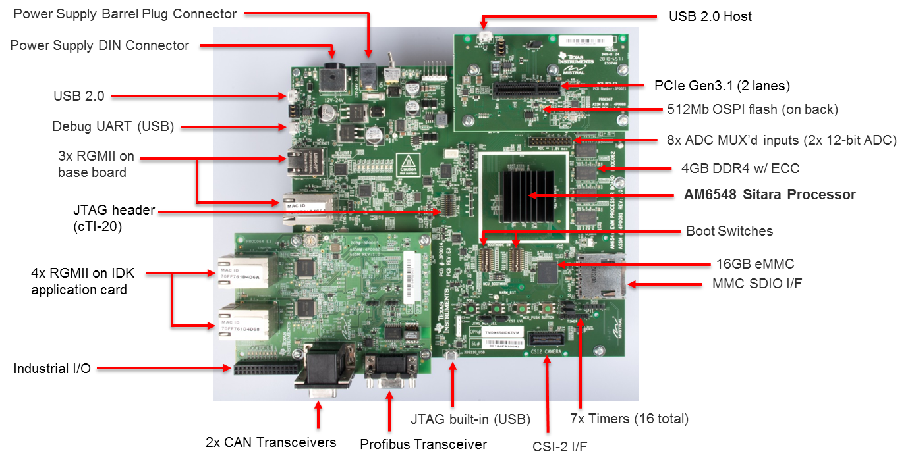The complete feature set for the AM65x EVM is described in AM65x EVM User Manual. This section only provides description of components that are required to complete basic EVM setup for debugging code using an emulator and Code Composer Studio.
10.3.1.1.1. Supported JTAG Debug Probes (Emulators)¶
The AM65x EVM includes a cTI20 JTAG connector for external emulators and a micro USB connector for the on-board XDS110 emulator.
For XDS110 connect a USB cable to the micro USB connector J23 on the front of the board.
For external XDS200, connect the emulator to the cTI20 pin connector.
For Lauterbach or emulators with MIPI60 or TI14 pin connector, an adapter must be used to connect the emulator.
Warning
Do not connect an XDS560 emulator to the J16 application board connector. This may damage the EVM and the emulator pod.

If you are using an external emulator pod, you must select which connector sources the clock. The AM65x EVM can support the MIPI60 or cTI20 connector. The JTAG select jumper must be set correctly to specify the clock source as either the MIPI60 or the cTI20 connector.
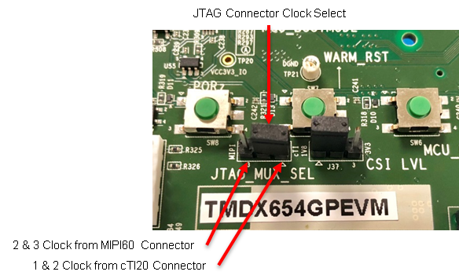10.3.1.1.2. BOOTMODE Switches¶
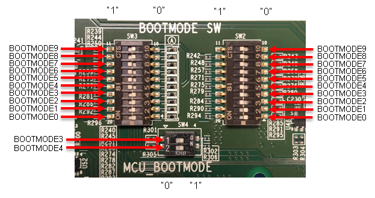MCU BOOTMODE shown:
MCUBOOTMODE[8:0] – 0000 10 011
Values in bold are fixed with resistors.
BOOTMODE shown:
BOOTMODE[18:0] - 1111111000011110000
10.3.1.1.2.1. Recommended Boot Mode¶
BOOTMODE[18:0] = 000000000 0000000000 MCUBOOTMODE[8:0]= 000000011 (SLEEP BOOT)
- Boot Settings
- SW2 – All switches OFF
- SW3 – All switches OFF
BOOTMODE[18:0] = 000000100 0000000110 MCUBOOTMODE[8:0]= 000000011 (SD BOOT)
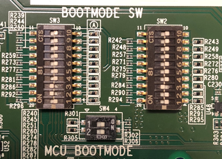For full details on supported boot modes, please refer to the table below.
| SW3.4 | SW3.3 | SW3.2 | SW3.1 | Primary Boot Device Selected |
|---|---|---|---|---|
| OFF | OFF | OFF | OFF | Sleep (No boot - debug mode) |
| OFF | OFF | OFF | ON | OSPI |
| OFF | OFF | ON | OFF | QSPI |
| OFF | OFF | ON | ON | Hyperflash |
| OFF | ON | OFF | OFF | SPI (on QSPI/OSPI port 0 in legacy SPI mode) |
| OFF | ON | OFF | ON | I2C |
| OFF | ON | ON | OFF | MMC/SD card, eMMC boot from UDA or file system |
| OFF | ON | ON | ON | Ethernet |
| ON | OFF | OFF | OFF | USB |
| ON | OFF | OFF | ON | PCIe |
| ON | OFF | ON | OFF | UART |
| ON | OFF | ON | ON | Reserved |
| ON | ON | OFF | OFF | GPMC XIP |
| ON | ON | OFF | ON | eMMC boot from boot partition (with auto-fall back to file system) |
| ON | ON | ON | OFF | Reserved (acts as no boot) |
| ON | ON | ON | ON | Reserved (acts as no boot) |
Note
On the AM65x EVM, ensure that the PLL configuration is set to 25 MHz (see bolded line in table below).
| Bit 2 | Bit 1 | Bit 0 | PLL REF CLK (MHz) |
|---|---|---|---|
| 0 | 0 | 0 | Sleep (No boot - debug mode) |
| 0 | 0 | 1 | 20 |
| 0 | 1 | 0 | 24 |
| 0 | 1 | 1 | 25 |
| 1 | 0 | 0 | 26 |
| 1 | 0 | 1 | 27 |
| 1 | 1 | 0 | Reserved |
| 1 | 1 | 1 | No PLL Configuration Done (slow speed backup) |
10.3.1.1.3. UART Connection¶
- Connect a micro USB cable between UART port (J42) of the EVM and host PC.
- Open a serial console (e.g. Tera Term) on host PC, connect to COM port on which SOC UART0 port is connected. Four COM ports should appear in the serial console application. Connect to the first COM port in the list.
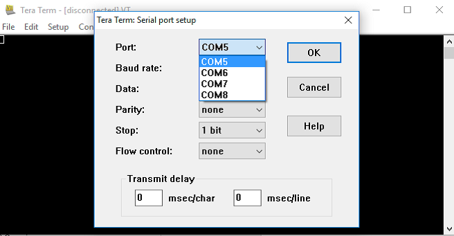
- First COM port – SoC MAIN UART0
- Second COM port – MCU UART
- Third COM port – Wakeup UART
- Fourth COM port – SoC MAIN UART1
- Open a serial console (e.g Tera Term) on host PC, connect to COM port on which EVM UART port is connected and set the following configuration.
- Baud rate - 115200
- Data length - 8 bit
- Parity - None
- Stop bits - 1
- Flow control - None
10.3.1.1.4. Powering the EVM¶
| Connector | Specifications | Example |
|---|---|---|
| Power DIN, 4-pin | 24VDC, 5A Output (Max) | CUI Inc.SDI120-24-U-P51 |
| Barrel Plug, 2.5mm I.D x 5.5mm O.D x 9.55 | 12-24VDC, positive center, 2.71A Output (Max) | CUI Inc. SDI65-24UD-P6 |
Note
The DIN connector power supply is recommended to provide enough power for applications that make use of the PCIe interface.
10.3.1.2. Minimum Hardware Setup Required to Connect to EVM¶
- Connect micro USB cable to J23 and connect USB to Host PC on which CCS is installed.
- Connect micro USB cable to J42 for UART serial IO.
- Set boot switches to “Sleep Boot” or “SD Boot” as described in the BOOT Switches section.
- Connect power supply to DC jack and power on EVM.
- Set switches and jumpers as indicated below.
- Boot Settings
- SW2 - All switches OFF
- SW3 - All switches OFF
- Jumpers
- J4 – Short all the pins
- JP37 – Short pins 1 & 2
- J43 - Short pins 1 & 2
- J8 – Short pins 1 & 2
10.3.1.3. AM65x Debug Software Setup¶
The following software packages are required to setup the AM65x EVM
- Code Composer Studio IDE Environment
- Processor SDK RTOS for AM65xx
10.3.1.3.1. CCS Host Setup¶
1. Download CCS from the following link: http://processors.wiki.ti.com/index.php/Download_CCS
Note
Check the Processor SDK Release Notes for the recommended CCS version.
Ensure that at least “Sitara AMx Processors” is selected:
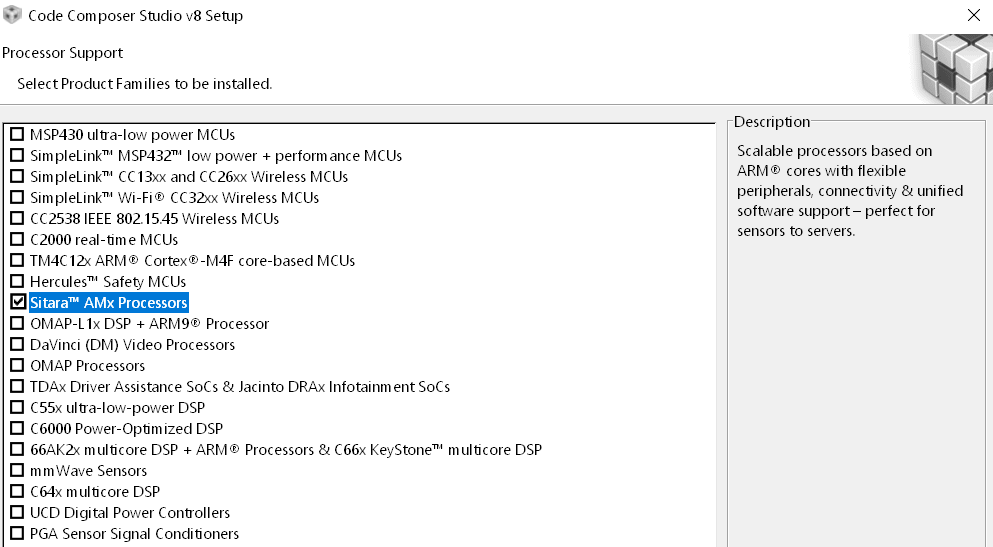
10.3.1.3.1.1. Install the latest Emulation Package and Device Support Package¶
1. In CCS, navigate to Help -> Check for Updates and select “Sitara device support” and “TI Emulators” and click Next.
2. Click “Next” again, select “I accept the terms of the license agreements” and click Finish to begin the installation.
3. You may be prompted to restart CCS for the updates to take effect. Click “Restart Now” when prompted to complete the installation.
Disable Automatic Updates
To disable automatic updates in CCS, navigate to Windows -> Preferences -> Install/Update -> Automatic Updates, and uncheck “Automatically find new updates and notify me.”
This is a precautionary step to avoid automatic updates overwriting files updated through TI Emulation Updates for AM65x
10.3.1.3.2. Basic CCS Setup¶
The Basic CCS setup is similar to earlier Sitara devices which involves creation of target configuration and connecting to cores using the GEL files. This step is suitable for new board bring up and getting hello world going on the AM65x cores.
Users can use this setup for benchmarking code on cores, test basic pin functionality or to run diagnostics. However, multi-core application developers requiring resource management, power management or security services will require the advanced CCS setup in addition to the basic core setup.
We recommend that you follow the steps in basic setup and then migrate to the advanced SOC CCS setup for application development.
10.3.1.3.2.1. Creating the Target Configuration¶
- In CCS, open the Target Configurations window by navigating to View -> Target Configurations.
- In Target Configurations, right click and select “New Target Configuration.”
- Populate the Target Configuration File name, set the location, and click Finish.

- Select “Texas Instruments XDS110 USB Debug Probe” for the Connection and “GPEVM_AM65x” for the Board or Device.
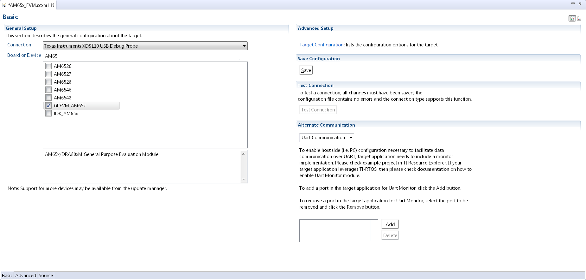
Note
The GEL files are automatically populated in the Target Configuration when selecting an EVM instead of an SOC. The SOC option is generally used for custom board bring up or secondary boot debugging.
- Navigate to the “Advanced” tab to ensure the GEL files are populated in the “initialization script” field for the various cores.

The initialization script for the Cortex M3 will setup the MCU domain and Main domain PLL clocks, PSC registers, and bring the R5 and Cortex A53 cores out of reset.
The initialization script for the Cortex A53 and Cortex R5 will perform a similar step to setup the DDR clocks and initialize DDR from the cores if required.
- Save the Target Configuration.

{kind=link}
10.3.1.3.2.2. Connecting to the Cores on AM65x¶
1. Launch Target Configuration In CCS Editor View, go to View -> Target Configuration, and right click on the configuration that was created in the previous section and select “Launch Selected Configuration.”
- Connect to DMSC_Cortex_M3
Note
When connecting to the M3 core for the first time, you may be prompted with a firmware update. Please click “Update” to update the emulator firmware.

On AM65x DMSC_Cortex_M3 is the boot master and is the first core that wakes up and starts the R5F ROM. Upon launching the target configuration, connect to DMSC_Cortex_M3 first, as this will automatically perform the PSC and PLL initialization. The following GEL output will appear in the CCS Console:
DMSC_Cortex_M3_0: GEL Output: Configuring AM65xEVM...
DMSC_Cortex_M3_0: GEL Output: Init value actual value: 0x00000888
DMSC_Cortex_M3_0: GEL Output: Register value: 0x00000888
DMSC_Cortex_M3_0: GEL Output: ATCM is on
DMSC_Cortex_M3_0: GEL Output: ATCM configured.
DMSC_Cortex_M3_0: GEL Output: Assuming execution from M3
DMSC_Cortex_M3_0: GEL Output: This script sets the first address translation region to [0x8000_0000, 0x0000_0000].
DMSC_Cortex_M3_0: GEL Output: It also sets the second address translation region to [0x6000_0000, 0x4000_0000].
DMSC_Cortex_M3_0: GEL Output: Setting all PLLs in progress. This may take some time.
DMSC_Cortex_M3_0: GEL Output: 0 Percent Complete...
DMSC_Cortex_M3_0: GEL Output: 10 Percent Complete...
DMSC_Cortex_M3_0: GEL Output: 20 Percent Complete...
DMSC_Cortex_M3_0: GEL Output: 30 Percent Complete...
DMSC_Cortex_M3_0: GEL Output: 40 Percent Complete...
DMSC_Cortex_M3_0: GEL Output: 50 Percent Complete...
DMSC_Cortex_M3_0: GEL Output: 60 Percent Complete...
DMSC_Cortex_M3_0: GEL Output: 70 Percent Complete...
DMSC_Cortex_M3_0: GEL Output: 80 Percent Complete...
DMSC_Cortex_M3_0: GEL Output: 90 Percent Complete...
DMSC_Cortex_M3_0: GEL Output: Setting all PLLs done!
DMSC_Cortex_M3_0: GEL Output: Powering up all PSC power domains in progress...
DMSC_Cortex_M3_0: GEL Output: Powering up LPSC_WKUP_COMMON
DMSC_Cortex_M3_0: GEL Output: No change needed.
DMSC_Cortex_M3_0: GEL Output: Powering up LPSC_DMSC
DMSC_Cortex_M3_0: GEL Output: No change needed.
DMSC_Cortex_M3_0: GEL Output: Powering up LPSC_WKUP2MCU
DMSC_Cortex_M3_0: GEL Output: No change needed.
DMSC_Cortex_M3_0: GEL Output: Powering up LPSC_WKUP2MAIN_INFRA
DMSC_Cortex_M3_0: GEL Output: No change needed.
DMSC_Cortex_M3_0: GEL Output: Powering up LPSC_DEBUG2DMSC
DMSC_Cortex_M3_0: GEL Output: No change needed.
DMSC_Cortex_M3_0: GEL Output: Powering up LPSC_WKUP_GPIO
DMSC_Cortex_M3_0: GEL Output: No change needed.
DMSC_Cortex_M3_0: GEL Output: Powering up LPSC_MCU2MAIN_INFRA
DMSC_Cortex_M3_0: GEL Output: No change needed.
DMSC_Cortex_M3_0: GEL Output: Powering up LPSC_MCU2MAIN
DMSC_Cortex_M3_0: GEL Output: No change needed.
DMSC_Cortex_M3_0: GEL Output: Powering up LPSC_MCU2WKUP
DMSC_Cortex_M3_0: GEL Output: No change needed.
DMSC_Cortex_M3_0: GEL Output: Powering up LPSC_MAIN2MCU
DMSC_Cortex_M3_0: GEL Output: No change needed.
DMSC_Cortex_M3_0: GEL Output: Powering up LPSC_MCU_COMMON
DMSC_Cortex_M3_0: GEL Output: No change needed.
DMSC_Cortex_M3_0: GEL Output: Powering up LPSC_MCU_TEST
DMSC_Cortex_M3_0: GEL Output: No change needed.
DMSC_Cortex_M3_0: GEL Output: Powering up LPSC_MCU_MCAN_0
DMSC_Cortex_M3_0: GEL Output: No change needed.
DMSC_Cortex_M3_0: GEL Output: Powering up LPSC_MCU_MCAN_1
DMSC_Cortex_M3_0: GEL Output: No change needed.
DMSC_Cortex_M3_0: GEL Output: Powering up LPSC_MCU_OSPI_0
DMSC_Cortex_M3_0: GEL Output: No change needed.
DMSC_Cortex_M3_0: GEL Output: Powering up LPSC_MCU_OSPI_1
DMSC_Cortex_M3_0: GEL Output: No change needed.
DMSC_Cortex_M3_0: GEL Output: Powering up LPSC_MCU_HYPERBUS
DMSC_Cortex_M3_0: GEL Output: No change needed.
DMSC_Cortex_M3_0: GEL Output: Powering up LPSC_MCU_DEBUG
DMSC_Cortex_M3_0: GEL Output: No change needed.
DMSC_Cortex_M3_0: GEL Output: Powering up LPSC_MCU_R5_0
DMSC_Cortex_M3_0: GEL Output: No change needed.
DMSC_Cortex_M3_0: GEL Output: Powering up LPSC_MCU_R5_1
DMSC_Cortex_M3_0: GEL Output: No change needed.
DMSC_Cortex_M3_0: GEL Output: Powering up LPSC_MAIN_INFRA
DMSC_Cortex_M3_0: GEL Output: No change needed.
DMSC_Cortex_M3_0: GEL Output: Powering up LPSC_MAIN_TEST
DMSC_Cortex_M3_0: GEL Output: No change needed.
DMSC_Cortex_M3_0: GEL Output: Powering up LPSC_MAIN_PBIST
DMSC_Cortex_M3_0: GEL Output: No change needed.
DMSC_Cortex_M3_0: GEL Output: Powering up LPSC_CC_TOP
DMSC_Cortex_M3_0: GEL Output: No change needed.
DMSC_Cortex_M3_0: GEL Output: Powering up LPSC_A53_CLUSTER_0
DMSC_Cortex_M3_0: GEL Output: Power domain and module state changed successfully.
DMSC_Cortex_M3_0: GEL Output: Powering up LPSC_A53_0
DMSC_Cortex_M3_0: GEL Output: Power domain and module state changed successfully.
DMSC_Cortex_M3_0: GEL Output: Powering up LPSC_A53_1
DMSC_Cortex_M3_0: GEL Output: Power domain and module state changed successfully.
DMSC_Cortex_M3_0: GEL Output: Powering up LPSC_A53_CLUSTER_1
DMSC_Cortex_M3_0: GEL Output: Power domain and module state changed successfully.
DMSC_Cortex_M3_0: GEL Output: Powering up LPSC_A53_2
DMSC_Cortex_M3_0: GEL Output: Power domain and module state changed successfully.
DMSC_Cortex_M3_0: GEL Output: Powering up LPSC_A53_3
DMSC_Cortex_M3_0: GEL Output: Power domain and module state changed successfully.
DMSC_Cortex_M3_0: GEL Output: Powering up LPSC_MAIN_DEBUG
DMSC_Cortex_M3_0: GEL Output: No change needed.
DMSC_Cortex_M3_0: GEL Output: Powering up LPSC_DSS
DMSC_Cortex_M3_0: GEL Output: Power domain and module state changed successfully.
DMSC_Cortex_M3_0: GEL Output: Powering up LPSC_MMC
DMSC_Cortex_M3_0: GEL Output: No change needed.
DMSC_Cortex_M3_0: GEL Output: Powering up LPSC_CAL
DMSC_Cortex_M3_0: GEL Output: Power domain and module state changed successfully.
DMSC_Cortex_M3_0: GEL Output: Powering up LPSC_PCIE_0
DMSC_Cortex_M3_0: GEL Output: Power domain and module state changed successfully.
DMSC_Cortex_M3_0: GEL Output: Powering up LPSC_PCIE_1
DMSC_Cortex_M3_0: GEL Output: Power domain and module state changed successfully.
DMSC_Cortex_M3_0: GEL Output: Powering up LPSC_USB_0
DMSC_Cortex_M3_0: GEL Output: Power domain and module state changed successfully.
DMSC_Cortex_M3_0: GEL Output: Powering up LPSC_USB_1
DMSC_Cortex_M3_0: GEL Output: Power domain and module state changed successfully.
DMSC_Cortex_M3_0: GEL Output: Powering up LPSC_SAUL
DMSC_Cortex_M3_0: GEL Output: No change needed.
DMSC_Cortex_M3_0: GEL Output: Powering up LPSC_PER_COMMON
DMSC_Cortex_M3_0: GEL Output: No change needed.
DMSC_Cortex_M3_0: GEL Output: Powering up LPSC_NB
DMSC_Cortex_M3_0: GEL Output: No change needed.
DMSC_Cortex_M3_0: GEL Output: Powering up LPSC_SERDES_0
DMSC_Cortex_M3_0: GEL Output: Power domain and module state changed successfully.
DMSC_Cortex_M3_0: GEL Output: Powering up LPSC_SERDES_1
DMSC_Cortex_M3_0: GEL Output: Power domain and module state changed successfully.
DMSC_Cortex_M3_0: GEL Output: Powering up LPSC_ICSSG_0
DMSC_Cortex_M3_0: GEL Output: Power domain and module state changed successfully.
DMSC_Cortex_M3_0: GEL Output: Powering up LPSC_ICSSG_1
DMSC_Cortex_M3_0: GEL Output: Power domain and module state changed successfully.
DMSC_Cortex_M3_0: GEL Output: Powering up LPSC_ICSSG_2
DMSC_Cortex_M3_0: GEL Output: Power domain and module state changed successfully.
DMSC_Cortex_M3_0: GEL Output: Powering up LPSC_GPU
DMSC_Cortex_M3_0: GEL Output: Power domain and module state changed successfully.
DMSC_Cortex_M3_0: GEL Output: Powering up LPSC_EMIF_DATA
DMSC_Cortex_M3_0: GEL Output: Power domain and module state changed successfully.
DMSC_Cortex_M3_0: GEL Output: Powering up LPSC_EMIF_CFG
DMSC_Cortex_M3_0: GEL Output: Power domain and module state changed successfully.
DMSC_Cortex_M3_0: GEL Output: Powering up all PSC power domains done!
3. Connect to Cortex A53 or Cortex R5F Users must now connect to either the Cortex A53 (CortexA53_0_0) or Cortex R5 (MCU_PULSAR_Cortex_R5_0). The following GEL output will appear in the CCS console when connecting to the Cortex A53:
CortexA53_0_0: GEL Output: VTT Regulator Enabled
CortexA53_0_0: GEL Output:
PHY Init complete
CortexA53_0_0: GEL Output: DDRSS_DDRPHY_PGSR0 = 0x8000000F
CortexA53_0_0: GEL Output:
Waiting for DRAM Init to complete...
CortexA53_0_0: GEL Output:
DRAM Init complete
CortexA53_0_0: GEL Output: DDRSS_DDRPHY_PGSR0 = 0x8000001F
CortexA53_0_0: GEL Output:
Waiting for write leveling to complete
CortexA53_0_0: GEL Output:
Write leveling complete
CortexA53_0_0: GEL Output: DDRSS_DDRPHY_PGSR0 = 0x8000003F
CortexA53_0_0: GEL Output: checking status per byte...
CortexA53_0_0: GEL Output:
DDRSS_DDRPHY_DX0GSR0 = 0x00932420
CortexA53_0_0: GEL Output:
DDRSS_DDRPHY_DX1GSR0 = 0x009224A0
CortexA53_0_0: GEL Output:
DDRSS_DDRPHY_DX2GSR0 = 0x00992620
CortexA53_0_0: GEL Output:
DDRSS_DDRPHY_DX3GSR0 = 0x009825A0
CortexA53_0_0: GEL Output:
Waiting for Read DQS training to complete
CortexA53_0_0: GEL Output:
Read DQS training complete
CortexA53_0_0: GEL Output: DDRSS_DDRPHY_PGSR0 = 0x8000007F
CortexA53_0_0: GEL Output: checking status per byte...
CortexA53_0_0: GEL Output:
DDRSS_DDRPHY_DX0RSR0 = 0x00000000
CortexA53_0_0: GEL Output:
DDRSS_DDRPHY_DX1RSR0 = 0x00000000
CortexA53_0_0: GEL Output:
DDRSS_DDRPHY_DX2RSR0 = 0x00000000
CortexA53_0_0: GEL Output:
DDRSS_DDRPHY_DX3RSR0 = 0x00000000
CortexA53_0_0: GEL Output:
Waiting for Write leveling adjustment to complete
CortexA53_0_0: GEL Output:
Write leveling adjustment complete
CortexA53_0_0: GEL Output: DDRSS_DDRPHY_PGSR0 = 0x800000FF
CortexA53_0_0: GEL Output:
Waiting for Read deskew to complete
CortexA53_0_0: GEL Output:
Read deskew complete
CortexA53_0_0: GEL Output: DDRSS_DDRPHY_PGSR0 = 0x800001FF
CortexA53_0_0: GEL Output:
Waiting for Write deskew to complete
CortexA53_0_0: GEL Output:
Write deskew complete
CortexA53_0_0: GEL Output: DDRSS_DDRPHY_PGSR0 = 0x800003FF
CortexA53_0_0: GEL Output:
Waiting for Read Eye training to complete
CortexA53_0_0: GEL Output:
Read Eye training complete
CortexA53_0_0: GEL Output: DDRSS_DDRPHY_PGSR0 = 0x800007FF
CortexA53_0_0: GEL Output:
Waiting for Write Eye training to complete
CortexA53_0_0: GEL Output:
Write Eye training complete
CortexA53_0_0: GEL Output: DDRSS_DDRPHY_PGSR0 = 0x80000FFF
CortexA53_0_0: GEL Output:
Waiting for VREF training to complete
CortexA53_0_0: GEL Output:
VREF training complete
CortexA53_0_0: GEL Output: DDRSS_DDRPHY_PGSR0 = 0x80004FFF
CortexA53_0_0: GEL Output:
====
DDR4 Initialization has PASSED!!!!
====
The same GEL output will be shown if connecting to the Cortex R5 first instead of the Cortex A53.
- The EVM is now completely initialized to load and run code on the cores and access the full device address range. User level software is responsible to configure the pin multiplexing and peripheral configuration.
10.3.1.3.3. Advanced AM65x Debug Setup with DMSC Firmware Load¶
Description
AM65x EVM users testing basic functionality like R5F and A53 bring up and DDR configuration can use the basic setup described in the previous section for setting up the EVM. However, advanced application level debug that uses resource management for UDMAs, interrupt setup, power management to setup clock modules, or wakeup/power of slave cores will require loading of SYSFW (DMSC Firmware) on the M3 core so that the application can make API calls to leverage its services.
To load the SYSFW firmware, the DMSC ROM expects R5F secondary bootloader/application to provide board configuration message to initialize the cores and SOC services. The R5F application provided in SciClient uses a default board configuration message to the SYSFW and sets up the device for application debugging.
For more details, refer to the Initialization Chapter in the TRM and the SciClient User guide.
Additional Software Dependency
- Processor SDK RTOS for AM65x
Users are required to install Processor SDK RTOS to obtain the SciClient component package before proceeding to the Next Step.
After installing Processor SDK RTOS, users should locate the latest R5F CCS init app, SYSFW binary, and the debug server script within the following directory:
${PDK_INSTALL_PATH}/packages/ti/drv/sciclient/tools/ccsLoadDmsc
The following files are provided as part for the SciClient tools:
- launch_am65xx.js: CCS Debug Server script to perform on target connect and load DMSC firmware and R5F CCS Init app.
Location:: ${PDK_INSTALL_PATH}/packages/ti/drv/sciclient/tools/ccsLoadDmsc
- sciclient_ccs_init_mcu1_0_release.xer5f: R5F Application with default board config
Location:: ${PDK_INSTALL_PATH}/packages/ti/drv/sciclient/tools/ccsLoadDmsc/am65xx
- ti-sci-firmware-am6x-gp.bin: TISCI SYSFW binary loaded on the DMSC
Location:: ${PDK_INSTALL_PATH}/packages/ti/drv/sciclient/src/V0
AM65x Advanced Debug Script Flow

10.3.1.3.3.1. Creating Debug Configuration to Integrate CCS GEL and DMSC Firmware Initialization¶
With the intent to maintain the same CCS target connect flow as existing devices, we provide a Debug Server Script (DSS) that users can link to in their target configuration to allow for loading SYSFW firmware on the DMSC as part of the target connect process.
The DSS script allows users to perform all of the initialization using a single click. When the script is run, the following actions happens sequentially:
- Running On Target Connect M3 existing GEL scripts.
- Loading the DMSC firmware *.bin file to DMSC M3.
- Run the R5F Init code which performs the board configuration initialization.
At the end of the setup, the R5F and A53 are in a clean state to load code and debug the application with the SYSFW loaded on the M3 core.
Steps to Link and Run the DSS Script for DMSC Firmware Loading
- Update the file “pdk/packages/ti/drv/sciclient/tools/ccsLoadDmsc/launch_am65xx.js” for the following variable to your PC location:
//<!!!!!! EDIT THIS !!!!!> // Set this to 1 to allow loading the GEL files directly from the ccxml file. disableGelLoad = 1; if (disableGelLoad == 0) { //Path to GEL files gelFilePath = "C:/ti/ccsv8/ccs_base/emulation/gel/AM65xEVM"; } // Path to the directory in which this file would be residing. CCS expects // absolute paths to load the binaries. thisJsFileDirectory = "pdk/packages/ti/drv/sciclient/tools/ccsLoadDmsc"; //<!!!!!! EDIT THIS !!!!!>
- Set disableGelLoad =1 if GEL files is linked to the cores in the target configuration file.
- The variable “gelFilePath” doesn’t need to be updated if CCS is installed in the default C:/ti/ directory.
- The variable “thisJsFileDirectory” needs to be updated to point to the PDK install directory.
- Connect the Javascript to the CCXML file with the steps shown below.
Note
This step needs to be repeated if you switch workspaces or clean your workspace.
In the debug view after completing the basic CCS setup, Click on Debug Configurations from the button as show below:

Select the CCXML file from the left-hand side and populate the path to the launch_am65xx.js file in the “Initialization Script” free form field and click on “Apply”.
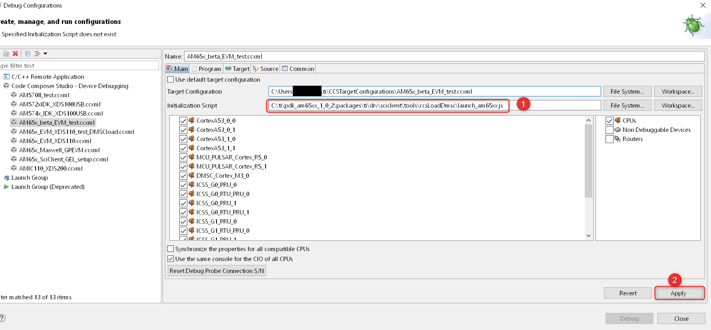Once you Launch the CCXML file, the java script will automatically run and connect to R5F.
Steps to re-run the script once ccxml is already launched:
In the CCS window, navigate to “View → Scripting Console.”
In the CCS Scripting Console, type:
> load ("<Your Path>\\launch_am65xx.js");
This would give the following output on the scripting console:
js:> load("C:\\Users\\User\\Documents\\PDK\\pdk\\packages\\ti\\drv\\sciclient\\tools\\ccsLoadDmsc\\launch_am65xx.js")
Connecting to DMSC_Cortex_M3_0!
Loading DMSC Firmware...
DMSC Firmware Load Done...
DMSC Firmware run starting now...
Connecting to MCU Cortex_R5_0!
GEL Output Log:
DMSC_Cortex_M3_0: GEL Output: Configuring AM65xEVM...
DMSC_Cortex_M3_0: GEL Output: Init value actual value: 0x00000888
DMSC_Cortex_M3_0: GEL Output: Register value: 0x00000888
DMSC_Cortex_M3_0: GEL Output: ATCM is on
DMSC_Cortex_M3_0: GEL Output: ATCM configured.
DMSC_Cortex_M3_0: GEL Output: Assuming execution from M3
DMSC_Cortex_M3_0: GEL Output: This script sets the first address translation region to [0x8000_0000, 0x0000_0000].
DMSC_Cortex_M3_0: GEL Output: It also sets the second address translation region to [0x6000_0000, 0x4000_0000].
DMSC_Cortex_M3_0: GEL Output: Setting all PLLs in progress. This may take some time.
DMSC_Cortex_M3_0: GEL Output: 0 Percent Complete...
DMSC_Cortex_M3_0: GEL Output: 10 Percent Complete...
DMSC_Cortex_M3_0: GEL Output: 20 Percent Complete...
DMSC_Cortex_M3_0: GEL Output: 30 Percent Complete...
DMSC_Cortex_M3_0: GEL Output: 40 Percent Complete...
DMSC_Cortex_M3_0: GEL Output: 50 Percent Complete...
DMSC_Cortex_M3_0: GEL Output: 60 Percent Complete...
DMSC_Cortex_M3_0: GEL Output: 70 Percent Complete...
DMSC_Cortex_M3_0: GEL Output: 80 Percent Complete...
DMSC_Cortex_M3_0: GEL Output: 90 Percent Complete...
DMSC_Cortex_M3_0: GEL Output: Setting all PLLs done!
DMSC_Cortex_M3_0: GEL Output: Powering up all PSC power domains in progress...
DMSC_Cortex_M3_0: GEL Output: Powering up LPSC_WKUP_COMMON
DMSC_Cortex_M3_0: GEL Output: No change needed.
DMSC_Cortex_M3_0: GEL Output: Powering up LPSC_DMSC
DMSC_Cortex_M3_0: GEL Output: No change needed.
DMSC_Cortex_M3_0: GEL Output: Powering up LPSC_WKUP2MCU
DMSC_Cortex_M3_0: GEL Output: No change needed.
DMSC_Cortex_M3_0: GEL Output: Powering up LPSC_WKUP2MAIN_INFRA
DMSC_Cortex_M3_0: GEL Output: No change needed.
DMSC_Cortex_M3_0: GEL Output: Powering up LPSC_DEBUG2DMSC
DMSC_Cortex_M3_0: GEL Output: No change needed.
DMSC_Cortex_M3_0: GEL Output: Powering up LPSC_WKUP_GPIO
DMSC_Cortex_M3_0: GEL Output: No change needed.
DMSC_Cortex_M3_0: GEL Output: Powering up LPSC_MCU2MAIN_INFRA
DMSC_Cortex_M3_0: GEL Output: No change needed.
DMSC_Cortex_M3_0: GEL Output: Powering up LPSC_MCU2MAIN
DMSC_Cortex_M3_0: GEL Output: No change needed.
DMSC_Cortex_M3_0: GEL Output: Powering up LPSC_MCU2WKUP
DMSC_Cortex_M3_0: GEL Output: No change needed.
DMSC_Cortex_M3_0: GEL Output: Powering up LPSC_MAIN2MCU
DMSC_Cortex_M3_0: GEL Output: No change needed.
DMSC_Cortex_M3_0: GEL Output: Powering up LPSC_MCU_COMMON
DMSC_Cortex_M3_0: GEL Output: No change needed.
DMSC_Cortex_M3_0: GEL Output: Powering up LPSC_MCU_TEST
DMSC_Cortex_M3_0: GEL Output: No change needed.
DMSC_Cortex_M3_0: GEL Output: Powering up LPSC_MCU_MCAN_0
DMSC_Cortex_M3_0: GEL Output: No change needed.
DMSC_Cortex_M3_0: GEL Output: Powering up LPSC_MCU_MCAN_1
DMSC_Cortex_M3_0: GEL Output: No change needed.
DMSC_Cortex_M3_0: GEL Output: Powering up LPSC_MCU_OSPI_0
DMSC_Cortex_M3_0: GEL Output: No change needed.
DMSC_Cortex_M3_0: GEL Output: Powering up LPSC_MCU_OSPI_1
DMSC_Cortex_M3_0: GEL Output: No change needed.
DMSC_Cortex_M3_0: GEL Output: Powering up LPSC_MCU_HYPERBUS
DMSC_Cortex_M3_0: GEL Output: No change needed.
DMSC_Cortex_M3_0: GEL Output: Powering up LPSC_MCU_DEBUG
DMSC_Cortex_M3_0: GEL Output: No change needed.
DMSC_Cortex_M3_0: GEL Output: Powering up LPSC_MCU_R5_0
DMSC_Cortex_M3_0: GEL Output: No change needed.
DMSC_Cortex_M3_0: GEL Output: Powering up LPSC_MCU_R5_1
DMSC_Cortex_M3_0: GEL Output: No change needed.
DMSC_Cortex_M3_0: GEL Output: Powering up LPSC_MAIN_INFRA
DMSC_Cortex_M3_0: GEL Output: No change needed.
DMSC_Cortex_M3_0: GEL Output: Powering up LPSC_MAIN_TEST
DMSC_Cortex_M3_0: GEL Output: No change needed.
DMSC_Cortex_M3_0: GEL Output: Powering up LPSC_MAIN_PBIST
DMSC_Cortex_M3_0: GEL Output: No change needed.
DMSC_Cortex_M3_0: GEL Output: Powering up LPSC_CC_TOP
DMSC_Cortex_M3_0: GEL Output: No change needed.
DMSC_Cortex_M3_0: GEL Output: Powering up LPSC_A53_CLUSTER_0
DMSC_Cortex_M3_0: GEL Output: Power domain and module state changed successfully.
DMSC_Cortex_M3_0: GEL Output: Powering up LPSC_A53_0
DMSC_Cortex_M3_0: GEL Output: Power domain and module state changed successfully.
DMSC_Cortex_M3_0: GEL Output: Powering up LPSC_A53_1
DMSC_Cortex_M3_0: GEL Output: Power domain and module state changed successfully.
DMSC_Cortex_M3_0: GEL Output: Powering up LPSC_A53_CLUSTER_1
DMSC_Cortex_M3_0: GEL Output: Power domain and module state changed successfully.
DMSC_Cortex_M3_0: GEL Output: Powering up LPSC_A53_2
DMSC_Cortex_M3_0: GEL Output: Power domain and module state changed successfully.
DMSC_Cortex_M3_0: GEL Output: Powering up LPSC_A53_3
DMSC_Cortex_M3_0: GEL Output: Power domain and module state changed successfully.
DMSC_Cortex_M3_0: GEL Output: Powering up LPSC_MAIN_DEBUG
DMSC_Cortex_M3_0: GEL Output: No change needed.
DMSC_Cortex_M3_0: GEL Output: Powering up LPSC_DSS
DMSC_Cortex_M3_0: GEL Output: Power domain and module state changed successfully.
DMSC_Cortex_M3_0: GEL Output: Powering up LPSC_MMC
DMSC_Cortex_M3_0: GEL Output: Power domain and module state changed successfully.
DMSC_Cortex_M3_0: GEL Output: Powering up LPSC_CAL
DMSC_Cortex_M3_0: GEL Output: Power domain and module state changed successfully.
DMSC_Cortex_M3_0: GEL Output: Powering up LPSC_PCIE_0
DMSC_Cortex_M3_0: GEL Output: Power domain and module state changed successfully.
DMSC_Cortex_M3_0: GEL Output: Powering up LPSC_PCIE_1
DMSC_Cortex_M3_0: GEL Output: Power domain and module state changed successfully.
DMSC_Cortex_M3_0: GEL Output: Powering up LPSC_USB_0
DMSC_Cortex_M3_0: GEL Output: Power domain and module state changed successfully.
DMSC_Cortex_M3_0: GEL Output: Powering up LPSC_USB_1
DMSC_Cortex_M3_0: GEL Output: Power domain and module state changed successfully.
DMSC_Cortex_M3_0: GEL Output: Powering up LPSC_SAUL
DMSC_Cortex_M3_0: GEL Output: No change needed.
DMSC_Cortex_M3_0: GEL Output: Powering up LPSC_PER_COMMON
DMSC_Cortex_M3_0: GEL Output: No change needed.
DMSC_Cortex_M3_0: GEL Output: Powering up LPSC_NB
DMSC_Cortex_M3_0: GEL Output: No change needed.
DMSC_Cortex_M3_0: GEL Output: Powering up LPSC_SERDES_0
DMSC_Cortex_M3_0: GEL Output: Power domain and module state changed successfully.
DMSC_Cortex_M3_0: GEL Output: Powering up LPSC_SERDES_1
DMSC_Cortex_M3_0: GEL Output: Power domain and module state changed successfully.
DMSC_Cortex_M3_0: GEL Output: Powering up LPSC_ICSSG_0
DMSC_Cortex_M3_0: GEL Output: Power domain and module state changed successfully.
DMSC_Cortex_M3_0: GEL Output: Powering up LPSC_ICSSG_1
DMSC_Cortex_M3_0: GEL Output: Power domain and module state changed successfully.
DMSC_Cortex_M3_0: GEL Output: Powering up LPSC_ICSSG_2
DMSC_Cortex_M3_0: GEL Output: Power domain and module state changed successfully.
DMSC_Cortex_M3_0: GEL Output: Powering up LPSC_GPU
DMSC_Cortex_M3_0: GEL Output: Power domain and module state changed successfully.
DMSC_Cortex_M3_0: GEL Output: Powering up LPSC_EMIF_DATA
DMSC_Cortex_M3_0: GEL Output: Power domain and module state changed successfully.
DMSC_Cortex_M3_0: GEL Output: Powering up LPSC_EMIF_CFG
DMSC_Cortex_M3_0: GEL Output: Power domain and module state changed successfully.
DMSC_Cortex_M3_0: GEL Output: Powering up all PSC power domains done!
MCU_PULSAR_Cortex_R5_0: GEL Output: VTT Regulator Enabled
MCU_PULSAR_Cortex_R5_0: GEL Output:
PHY Init complete
MCU_PULSAR_Cortex_R5_0: GEL Output: DDRSS_DDRPHY_PGSR0 = 0x8000000F
MCU_PULSAR_Cortex_R5_0: GEL Output:
Waiting for DRAM Init to complete...
MCU_PULSAR_Cortex_R5_0: GEL Output:
DRAM Init complete
MCU_PULSAR_Cortex_R5_0: GEL Output: DDRSS_DDRPHY_PGSR0 = 0x8000001F
MCU_PULSAR_Cortex_R5_0: GEL Output:
Waiting for write leveling to complete
MCU_PULSAR_Cortex_R5_0: GEL Output:
Write leveling complete
MCU_PULSAR_Cortex_R5_0: GEL Output: DDRSS_DDRPHY_PGSR0 = 0x8000003F
MCU_PULSAR_Cortex_R5_0: GEL Output: checking status per byte...
MCU_PULSAR_Cortex_R5_0: GEL Output:
DDRSS_DDRPHY_DX0GSR0 = 0x00A728A0
MCU_PULSAR_Cortex_R5_0: GEL Output:
DDRSS_DDRPHY_DX1GSR0 = 0x00AA2920
MCU_PULSAR_Cortex_R5_0: GEL Output:
DDRSS_DDRPHY_DX2GSR0 = 0x00AB2920
MCU_PULSAR_Cortex_R5_0: GEL Output:
DDRSS_DDRPHY_DX3GSR0 = 0x00AA2A20
MCU_PULSAR_Cortex_R5_0: GEL Output:
Waiting for Read DQS training to complete
MCU_PULSAR_Cortex_R5_0: GEL Output:
Read DQS training complete
MCU_PULSAR_Cortex_R5_0: GEL Output: DDRSS_DDRPHY_PGSR0 = 0x8000007F
MCU_PULSAR_Cortex_R5_0: GEL Output: checking status per byte...
MCU_PULSAR_Cortex_R5_0: GEL Output:
DDRSS_DDRPHY_DX0RSR0 = 0x00000000
MCU_PULSAR_Cortex_R5_0: GEL Output:
DDRSS_DDRPHY_DX1RSR0 = 0x00000000
MCU_PULSAR_Cortex_R5_0: GEL Output:
DDRSS_DDRPHY_DX2RSR0 = 0x00000000
MCU_PULSAR_Cortex_R5_0: GEL Output:
DDRSS_DDRPHY_DX3RSR0 = 0x00000000
MCU_PULSAR_Cortex_R5_0: GEL Output:
Waiting for Write leveling adjustment to complete
MCU_PULSAR_Cortex_R5_0: GEL Output:
Write leveling adjustment complete
MCU_PULSAR_Cortex_R5_0: GEL Output: DDRSS_DDRPHY_PGSR0 = 0x800000FF
MCU_PULSAR_Cortex_R5_0: GEL Output:
Waiting for Read deskew to complete
MCU_PULSAR_Cortex_R5_0: GEL Output:
Read deskew complete
MCU_PULSAR_Cortex_R5_0: GEL Output: DDRSS_DDRPHY_PGSR0 = 0x800001FF
MCU_PULSAR_Cortex_R5_0: GEL Output:
Waiting for Write deskew to complete
MCU_PULSAR_Cortex_R5_0: GEL Output:
Write deskew complete
MCU_PULSAR_Cortex_R5_0: GEL Output: DDRSS_DDRPHY_PGSR0 = 0x800003FF
MCU_PULSAR_Cortex_R5_0: GEL Output:
Waiting for Read Eye training to complete
MCU_PULSAR_Cortex_R5_0: GEL Output:
Read Eye training complete
MCU_PULSAR_Cortex_R5_0: GEL Output: DDRSS_DDRPHY_PGSR0 = 0x800007FF
MCU_PULSAR_Cortex_R5_0: GEL Output:
Waiting for Write Eye training to complete
MCU_PULSAR_Cortex_R5_0: GEL Output:
Write Eye training complete
MCU_PULSAR_Cortex_R5_0: GEL Output: DDRSS_DDRPHY_PGSR0 = 0x80000FFF
MCU_PULSAR_Cortex_R5_0: GEL Output:
Waiting for VREF training to complete
MCU_PULSAR_Cortex_R5_0: GEL Output:
VREF training complete
MCU_PULSAR_Cortex_R5_0: GEL Output: DDRSS_DDRPHY_PGSR0 = 0x80004FFF
MCU_PULSAR_Cortex_R5_0: GEL Output:
====
DDR4 Initialization has PASSED!!!!
====
10.3.1.3.3.2. Additional Notes for GEL Users¶
R5F in Split Mode Configuration
AM65x EVM ships with the dual Cortex R5F configured in lockstep mode. The AM65x EVM GEL file provides a GEL function “Change_MCUSS_to_SplitMode” that can be added to OnTargetConnect or invoked from the DMSC_Cortex_M3 to set the dual R5F in split mode.
Configuring PRU-ICSS in Sync Mode
The PRU-ICSS subsystem can be configured to SYNC mode (250 Mhz) using the GEL function “PRU_ICSSG_SyncMode_250MHz” from Cortex A53 or R5F